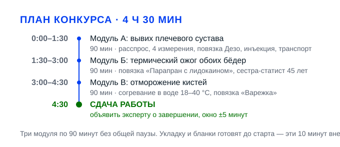
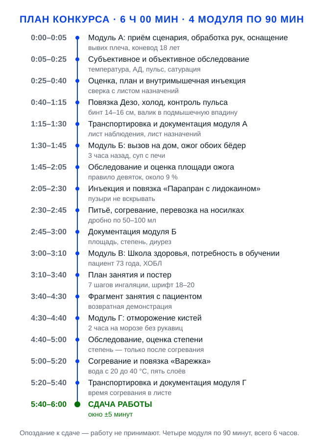
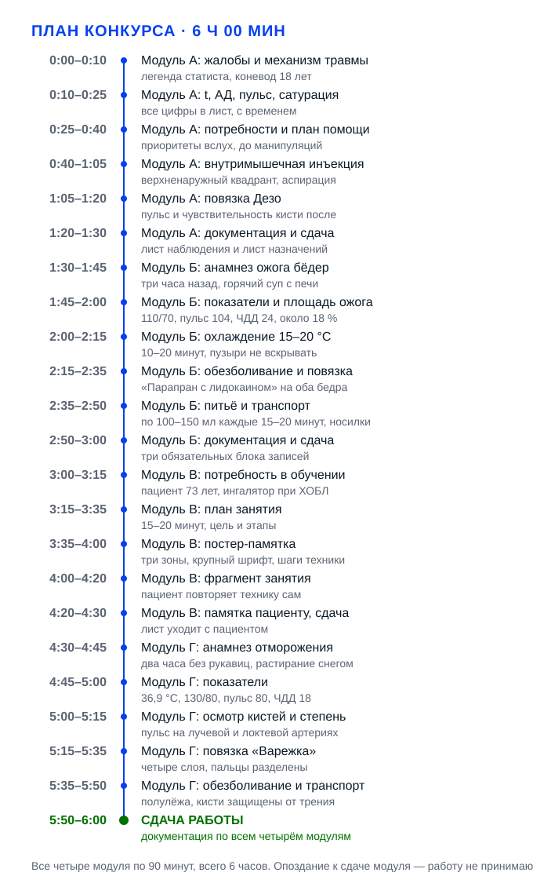

Помощник фельдшера малонаселённых пунктов (Р)
Задания ниже — официальные файлы «Абилимпикс» (источник: abilympics-russia.ru), разложенные по категориям. Решения написаны по тексту задания, регламенту и критериям оценки; в них указано, что именно проверяет эксперт.
Школьник
14–16 лет, базовый уровень заданияВыдержка из официального конкурсного задания: страницы, относящиеся к категории «Школьник» (стр. 5–8 источника).
Пошаговое решение
Школьники проходят три модуля по девяносто минут — всего четыре часа тридцать минут, и в каждом своя клиническая ситуация: вывих плеча у коневода 18 лет, термический ожог обоих бёдер у женщины 45 лет и отморожение кистей у рыбака 40 лет, два часа проведшего на морозе без рукавиц. Модуль В помечен в задании как вариативный, но структура у всех трёх одна: субъективное обследование, объективное с четырьмя измерениями, оценка и план, выполнение назначений с манипуляцией и транспортировкой, затем документация. Каркас один, чтобы эксперт сравнивал участников попунктно, а вы не теряли этапы. Чаще всего теряют не технику, а связки между этапами: цифры измерены, но не названы вслух; повязка наложена, но пульс после неё не проверен; помощь оказана, а лист наблюдения остался пустым. Ниже — 48 шагов: что делать, зачем, как проверить, что обычно идёт не так и на что в этот момент смотрит эксперт.

Задача 1. Подготовиться к работе и собрать субъективные данные пострадавшегоМодуль А · 90 минут · субъективное обследование
Модуль А начинается с самого простого по движениям и самого сложного по последствиям этапа: нужно расспросить коневода 18 лет, который придерживает левую руку здоровой, и понять, что именно случилось. В задании этот пункт назван субъективным обследованием, и в нём перечислены всего два действия — выяснить жалобы и определить нарушение удовлетворения потребностей. За этой краткостью стоит целый слой работы: вопросы нужно задать так, чтобы пострадавший сам рассказал про падение на согнутую в локте руку, а вы успели заметить, что движения в суставе отсутствуют и голова плеча смещена. Всё, что вы скажете и запишете здесь, потом ляжет в план помощи и в лист наблюдения, поэтому первый разговор — не формальность, а фундамент модуля. На разговор с пострадавшим уходит обычно пять-семь минут из девяноста, и тратить их надо полностью: переспросить про механизм травмы дешевле, чем потом неверно подобрать повязку.
Действие 1.1. Войти в работу по правилам
Шаг 1.1.1
Обработку рук делаем до перчаток и не торопясь: намыливаем до локтя, трём ладони, тыльные поверхности, межпальцевые промежутки и большие пальцы не меньше тридцати секунд, смываем проточной водой и вытираем одноразовым полотенцем. Затем наносим спиртовой антисептик на сухие руки и ждём, пока он высохнет полностью, — мокрые от антисептика руки нельзя брать в перчатки, под ними останется спирт и кожа будет раздражена. Перчатки берём своего размера, натягиваем так, чтобы манжета закрывала запястье, маску надеваем на нос и подбородок одновременно, а не на рот.
Критерий в задании сформулирован коротко: пострадавшему оказана помощь в соответствии с его потребностями. Эксперт проверяет это по чек-листу, и гигиена рук стоит в нём первым пунктом, потому что любое следующее действие — пальпация, измерение давления, инъекция — начинается с контакта.
Проверьте себя по трём признакам: руки сухие и без запаха спирта, перчатки сидят по размеру и не собраны в складки у пальцев, маска закрывает нос. Манжета перчатки должна доходить до запястья и не подворачиваться, когда вы сгибаете кисть, — иначе при работе с инструментом она сползёт.
Самая частая ошибка — надеть перчатки на влажные после антисептика руки: перчатка скользит, рвётся у большого пальца, и вся защита превращается в формальность. Вторая — маска на подбородке или на одном ухе: эксперт видит это сразу и отмечает как нарушение, а не как «человек поправит».
Эксперт фиксирует обработку рук и средства защиты в первые минуты модуля, до того как вы подойдёте к пострадавшему, и дальше следит, меняете ли вы перчатки после контакта с загрязнёнными предметами.
Шаг 1.1.2
Рабочее место готовим до общения с пострадавшим: на столе слева направо раскладываем то, что понадобится по порядку. Сначала тонометр с манжетой и фонендоскоп, электронный термометр и салфетки, пульсоксиметр. Затем всё для иммобилизации: бинт шириной четырнадцать-шестнадцать сантиметров, валик из ваты или свёрнутая пелёнка, ножницы, английская булавка. Отдельно, в лотке, — шприц пять миллилитров с иглой шестьдесят миллиметров, ампула по назначению фельдшера, спиртовые салфетки, сухие шарики. Рядом ставим ёмкость для отходов класса Б и пакет для использованных салфеток.
В задании модуль длится девяносто минут, и в это время входит всё: разговор, четыре измерения, инъекция, повязка, транспортировка и документация. Пятнадцать секунд, потраченные на раскладку, возвращаются минутами, когда руки заняты и отойти нельзя. Кроме того, порядок на столе — это часть оценки организации работы: эксперт видит, готовился участник к сценарию или разбирался по ходу.
Прогоните взглядом последовательность: сначала измерения, потом инъекция, потом повязка, потом транспортировка. Всё для каждого этапа должно быть на своём месте, ампула — с прочитанным вслух названием и дозировкой, бинт — развёрнут на первый тур. Если чего-то не хватает, это выясняется сейчас, а не на середине наложения повязки.
Типичная ошибка — разложить всё в кучу в центре стола: в спешке ампула оказывается под бинтом, а спиртовая салфетка падает на пол. Вторая — начать с расспроса, оставив укладку в сумке, и потом искать пульсоксиметр одной рукой, придерживая пациента другой.
Эксперт оценивает организацию рабочего места в начале модуля и отдельно отмечает случаи, когда участник ищет инструмент или просит недостающее уже во время работы.
Действие 1.2. Выяснить жалобы и анамнез
Шаг 1.2.1
Начинаем с открытого вопроса: «Что вас беспокоит?» — и даём договорить до конца, не перебивая. Дальше уточняем по одному пункту: где именно болит, в каком месте боль сильнее всего, какая она по характеру — острая, тянущая, пульсирующая, отдаёт ли в лопатку, шею или пальцы. Интенсивность просим оценить по шкале от нуля до десяти и запоминаем названную цифру: при вывихе плеча обычно называют восемь или девять. Обращаем внимание, что он придерживает больную руку здоровой и не может ею двигать. Заканчиваем вопросами про онемение и покалывание в пальцах — это признак давления на нервный пучок.
Жалобы — это первая половина субъективного обследования, названного в задании отдельным пунктом. Именно из них складывается представление о том, какая потребность нарушена в первую очередь: пострадавший не может двигаться, не может обслужить себя и испытывает боль. Без этих слов план помощи получится общим, а эксперт оценивает, умеете ли вы вытащить из пациента конкретику, а не просто записать «болит рука».
Признак того, что расспрос удался: у вас есть три-четыре характеристики боли — локализация, характер, интенсивность по шкале, иррадиация. Проверьте, что вы можете пересказать жалобы своими словами, не подглядывая, и что цифра интенсивности записана. Если пострадавший отвечает односложно, переформулируйте вопрос, а не повторяйте его громче.
Частая ошибка — задавать наводящие вопросы вроде «рука сильно болит, да?»: пациент соглашается, и вы получаете не факт, а подсказку. Вторая — не спросить про онемение пальцев и пропустить признак сдавления сосудисто-нервного пучка, из-за чего повязка потом будет наложена без запаса по объёму.
Эксперт слушает разговор и смотрит, говорит ли участник с пострадавшим, а не только с манекеном или с листом бумаги: тон, формулировки и умение дождаться ответа тоже входят в оценку коммуникации.
Шаг 1.2.2
Про механизм травмы спрашиваем прямо: что произошло, в каком положении была рука, на что пришёлся удар. В этой легенде ответ звучит так: сорвался с лошади во время приучивания к верховой езде и упал на согнутую в локтевом суставе левую руку. Уточняем время травмы и терял ли он сознание. Спрашиваем, что он делал после: пытался ли сам вправить руку, растирал ли, прикладывал ли тепло, принимал ли обезболивающее. Отдельным блоком идут аллергии, хронические болезни, последний приём пищи и питья и дата последней прививки от столбняка.
Анамнез объясняет, почему картина выглядит именно так: падение на согнутую в локте руку — типичный механизм вывиха плеча, при котором головка выходит вперёд и вниз. Информация про попытки самовправления принципиальна: после грубых манипуляций рядом с суставом может быть повреждение сосудов, и тогда любое движение руки опасно. Аллергии нужны до инъекции, а время еды — потому что в стационаре возможна репозиция.
Проверьте, что у вас закрыты четыре пункта: механизм и время травмы, состояние сознания в момент падения, что уже было сделано до вас, аллергический и лекарственный анамнез. Если по какому-то пункту ответа нет, проговорите это вслух: «Аллергию отрицает, сознание не терял». Так эксперт слышит, что вопрос задан, а не пропущен.
Ошибка — записать только «упал с лошади» и не уточнить, на какую руку и в каком положении она была: без этого невозможно объяснить, почему движения в суставе отсутствуют. Вторая — пропустить вопрос про аллергию и ввести препарат, о котором пациент мог бы предупредить.
Эксперт обращает внимание на полноту анамнеза, особенно на вопросы о сознании и о том, что уже делали с рукой до прихода помощи, — эти пункты в чек-листе обычно идут отдельными строками.
Действие 1.3. Определить нарушенные потребности
Шаг 1.3.1
Проговариваем вслух и записываем, какие потребности пострадавшего нарушены. При вывихе плеча их пять: потребность двигаться — рука обездвижена болью, движений в суставе нет; потребность быть в безопасности — риск смещения головки, повреждения сосудов и нервов, риск падения при попытке встать; потребность избегать боли и страдания — боль восемь-девять баллов; потребность одеваться и раздеваться — сам не снимет куртку; потребность поддерживать температуру тела и быть чистым — рука не даёт умыться и одеться самостоятельно. Каждую формулировку произносим с причиной: «не может двигать рукой».
В задании этот пункт вынесен отдельно и повторяется дважды: сначала в субъективном обследовании, потом в оценке и планировании. Это не дублирование, а разные вещи: в первом случае вы называете нарушенное, во втором — превращаете его в цель помощи. Эксперт по формулировкам понимает, мыслит участник категориями потребностей или просто выполняет манипуляции по списку.
Проверить легко: каждая названная потребность должна подкрепляться фактом из жалоб или осмотра. Если вы говорите «нарушено питание и питьё», а пострадавший спокойно ест и пьёт, формулировка неверна. Пять потребностей с обоснованием — достаточный и не избыточный список для этого сценария.
Ошибка — перечислить все четырнадцать потребностей подряд, включая те, что не нарушены: это выглядит как заученный текст и снижает доверие к остальному. Вторая — назвать только боль, забыв про двигательную функцию и безопасность, из-за чего в плане не появится иммобилизация.
Эксперт слушает именно формулировки и отмечает, связаны ли они с конкретным пострадавшим или произнесены общим списком из учебника. Если потребности названы без опоры на жалобы, это слышно сразу.
Задача 2. Провести объективное обследование: температура, давление, пульс, сатурацияМодуль А · 90 минут · объективные данные
Объективное обследование в задании расписано четырьмя строками: температура тела, артериальное давление, частота пульса и уровень сатурации. Четыре измерения на девяносто минут модуля — немного, и именно поэтому каждое делают по правилам, а не «примерно». Ошибка в технике здесь стоит дороже, чем кажется: давление, измеренное на больной руке, будет завышено из-за боли, пульс на сдавленной лучевой артерии окажется ослабленным, а сатурация на холодном пальце покажет девяносто вместо девяноста семи. Все цифры пойдут в лист наблюдения и в план помощи, поэтому важно не только получить значение, но и понимать, откуда оно взялось и чему соответствует. В этой легенде пульс на левой лучевой артерии ослаблен — это не случайность, а подсказка, которую нужно заметить и записать.
Действие 2.1. Измерить температуру тела и артериальное давление
Шаг 2.1.1
Термометр берём электронный, кнопкой включаем и дожидаемся, пока на экране появятся нули. Подмышечную впадину протираем сухой салфеткой — влага и пот искажают результат в сторону занижения. Вкладываем термометр наконечником в самую глубину впадины и прижимаем руку к туловищу: у нас это правая, здоровая рука, потому что левую пострадавший придерживает и любое движение в плече усиливает боль. Держим до звукового сигнала и ещё минуту, а не вынимаем сразу, как пискнет: производители дают погрешность до двух десятых градуса именно на этом этапе. Результат называем вслух и записываем.
Температура входит в перечень обязательных измерений модуля, и по ней отличают состояние без лихорадки от интоксикации, которая при вывихе не характерна, но при сопутствующем воспалении возможна. Кроме того, нормальная температура — аргумент в пользу того, что общее состояние стабильно и помощь можно оказывать в плановом порядке, без вызова реанимации. Для листа наблюдения нужна цифра, а не слово «норма».
Контроль простой: на экране законченное измерение, а не мигающие цифры, результат в пределах тридцати шести и двух — тридцати семи градусов, время измерения записано. Если значение ниже тридцати шести, проверьте, глубоко ли лежал наконечник и не было ли сквозняка, и повторите измерение на другой стороне.
Частая ошибка — измерять на больной стороне, под прижатой к телу рукой: пациент напрягает плечо, боль усиливается, и измерение приходится прекращать. Вторая — вынуть термометр по первому писку и получить значение на две десятых ниже истинного.
Эксперт смотрит на технику: обработку впадины, глубину введения и то, проговорил ли участник результат до записи. Молчаливое измерение засчитывается хуже, потому что оценивается демонстрация, а не только цифра.
Шаг 2.1.2
Давление измеряем на правом плече: манжету накладываем на два-три сантиметра выше локтевого сгиба, плотность проверяем пальцем — под манжету должны проходить два пальца, не больше и не меньше. Руку укладываем на стол ладонью вверх, плечо на уровне сердца, спина пострадавшего опирается на спинку стула. В фонендоскоп ставим мембрану в локтевую ямку, не под манжету и не под её край. Накачиваем воздух до ста восьмидесяти миллиметров, затем выпускаем со скоростью два-три миллиметра в секунду и слушаем: первый ясный тон — систолическое давление, момент исчезновения тонов — диастолическое.
Давление нужно, чтобы оценить, нет ли у пострадавшего реакции на боль в виде подъёма или, наоборот, признаков шока, и чтобы иметь базу для сравнения при транспортировке. На больной руке манжета сдавливает область повреждённого сустава, измерение становится болезненным, а цифры — недостоверными, поэтому правая сторона здесь не формальность, а условие корректности. В листе наблюдения обязательно указывают, на какой руке измеряли.
Проверьте три вещи: манжета на нужной высоте и не сползла при накачивании, стрелка или экран показывают законченное измерение, разница между двумя попытками не больше пяти миллиметров. Если разница больше, измерьте третий раз и запишите все значения — это честнее, чем выбрать удобное.
Ошибка — накачать манжету поверх рукава рубашки: ткань гасит тоны, и диастолическое давление получается заниженным. Вторая — отпустить воздух быстро, одним движением: тогда момент исчезновения тонов пропускается и в лист попадает случайная цифра.
Эксперт наблюдает за положением руки и за тем, слушает ли участник тоны или смотрит только на манометр: на чемпионате ценят измерение фонендоскопом, а не «на глаз».
Действие 2.2. Определить частоту пульса и уровень сатурации
Шаг 2.2.1
Пульс считаем на лучевой артерии: три пальца кладём выше основания большого пальца, прижимаем артерию к кости и сначала оцениваем наполнение и ритм, а потом считаем. Считаем тридцать секунд и умножаем на два, если ритм ровный, и полную минуту, если есть сомнения. Обязательно сравниваем обе руки: в этой легенде на левой лучевой артерии пульс ослаблен, ритмичный, восемьдесят ударов в минуту, и это надо не просто заметить, а сказать вслух и записать. Одновременно с подсчётом смотрим на цвет ногтевых лож и температуру пальцев левой кисти.
Пульс — второе обязательное измерение модуля, и в этой ситуации он несёт двойную нагрузку: показывает общее состояние и даёт ориентир для проверки повязки. Ослабление на левой руке описано в задании как часть картины, и если вы его не отметите, план помощи потеряет важный аргумент, а после наложения повязки вам не с чем будет сравнивать. Восемьдесят ударов в пределах нормы для восемнадцатилетнего, поэтому на первый план выходит именно асимметрия.
Признак корректного измерения: вы можете назвать три параметра — частоту, ритм и наполнение, — и у вас есть сравнение правой и левой руки. Пальцы левой кисти тёплые, ногти розовые; если они холоднее правых, об этом нужно сказать отдельно, потому что это уже признак нарушения кровоснабжения.
Ошибка — считать пульс, не прижимая артерию, и получить вместо пульсации собственное ощущение толчка. Вторая — измерять только справа и не обнаружить асимметрию, которая в этом сценарии и есть главная находка.
Эксперт смотрит, на каких артериях и с какой стороны участник считает пульс, и слушает, проговаривает ли он сравнение сторон: этот пункт в чек-листах обычно выделен отдельной строкой.
Шаг 2.2.2
Пульсоксиметр надеваем на палец здоровой правой кисти — второй или третий, без лака и без искусственных ногтей, потому что покрытие рассеивает свет и датчик не видит пульсовую волну. Руку кладём на стол ладонью вниз, чтобы палец не был на весу, и просим пострадавшего не шевелить им и не разговаривать. Ждём десять-пятнадцать секунд: цифры на экране сначала прыгают, устойчивое значение появляется, когда совпадают показания насыщения и частоты пульса. Если палец холодный, согреваем его в ладонях и измеряем снова. Норму озвучиваем как девяносто пять — девяносто восемь процентов.
Сатурация — четвёртое обязательное измерение модуля, и при травме плеча она нужна не столько для диагностики, сколько для контроля общего состояния и для полноты записи. Если датчик на больной руке показывает хуже, это может быть следствием ослабленного пульса, а не гипоксии, и тогда обязательно перепроверяют на здоровой стороне.
Проверьте: на экране стабильные цифры, частота пульса на приборе совпадает с той, что вы насчитали на лучевой артерии, значение не ниже девяноста пяти процентов. Если прибор выдаёт ошибку, не списывайте её на технику — переставьте датчик на другой палец и согрейте кисть.
Ошибка — измерять через лак или на холодном пальце и получить девяносто процентов, после чего искать у пострадавшего несуществующую дыхательную недостаточность. Вторая — снимать показания в первые секунды, когда цифры ещё не установились.
Эксперт фиксирует, на какой руке и на каком пальце стоит датчик, и сверяет частоту пульса на экране с частотой, которую участник посчитал вручную. Расхождение больше трёх ударов он трактует как ошибку техники.
Задача 3. Оценить данные, составить план и выполнить инъекцию по назначениюМодуль А · 90 минут · оценка и назначения
Третья задача — переход от наблюдения к действию. Сначала вы сводите вместе жалобы и цифры и получаете список проблем с приоритетами, потом превращаете его в план из конкретных вмешательств, а затем выполняете первое из них — внутримышечную инъекцию по назначению фельдшера. В задании этот пункт назван прямо, и он же самый рискованный по технике: ошибка с ампулой или с местом введения видна эксперту сразу и стоит дороже, чем неудачно наложенная повязка. Плана здесь недостаточно проговорить — его нужно сказать вслух по пунктам, с порядком и временем, потому что именно по нему эксперт понимает, сложилась ли у вас картина целиком.
Действие 3.1. Сформулировать проблемы и план помощи
Шаг 3.1.1
Садимся напротив пострадавшего, но так, чтобы видеть его лицо, и проговариваем проблемы по убыванию важности. Первой называем боль: она мешает дышать ровно, двигаться и даже сидеть спокойно. Второй — риск смещения головки и повреждения сосудов и нервов, потому что рука держится только за счёт мышц и любое движение может ухудшить положение. Третьей — нарушение подвижности и самообслуживания, четвёртой — тревогу и нарушение сна из-за боли. Для каждой проблемы сразу говорим, чем она подтверждена: «боль девять из десяти по словам пострадавшего», «пульс на левой лучевой ослаблен».
Оценка и планирование — отдельный пункт задания, и он проверяет не знания, а клиническое мышление. Приоритеты нужны, чтобы в плане обезболивание и иммобилизация стояли раньше документации, а не наоборот. Эксперт по этой части понимает, отдаёт ли участник себе отчёт, что именно он сейчас будет делать и зачем.
Признак того, что этап пройден: у вас есть четыре проблемы в порядке важности и к каждой — факт из обследования. Если проблема названа, но подтверждения нет, уберите её или найдите подтверждение. Проверьте, что первая проблема действительно требует немедленного действия.
Ошибка — перечислить проблемы списком без приоритетов: тогда непонятно, с чего начинать, и план разваливается на равноценные пункты. Вторая — назвать «риск осложнений» вместо конкретного риска смещения и сдавления.
Эксперт слушает формулировку приоритетов и сверяет её с объективными данными, которые вы получили во второй задаче. Отдельно отмечает, названа ли боль первой.
Шаг 3.1.2
План проговариваем по пунктам, с порядком и временем: сначала обезболивание внутримышечно по назначению фельдшера, затем иммобилизация повязкой Дезо, затем холод через ткань на двадцать минут, затем контроль пульса и чувствительности пальцев, затем транспортировка в травмпункт, затем документация. Каждый пункт начинаем словами «что делаю» и заканчиваем «зачем»: холод снижает отёк и боль, повязка удерживает головку в физиологичном положении до осмотра врача. Сразу оговариваем, чего мы не делаем: не вправляем сустав, не растираем, не греем и не даём пострадавшему опираться на больную руку.
План — третий обязательный пункт модуля, и он же защищает вас от суеты: когда порядок назван вслух, в девяносто минут укладывается всё, включая документацию. Кроме того, в плане видно понимание границ компетенции: школьник и помощник фельдшера не вправляют вывих, а обезболивают, обездвиживают и передают врачу.
Проверьте план на полноту по пяти словам: обезболить, обездвижить, охладить, проверить, передать. Если хотя бы одно выпало, план неполный. И убедитесь, что пункт про контроль пульса стоит после наложения повязки, а не до неё.
Ошибка — поставить повязку раньше обезболивания: наложение Дезо само по себе болезненно, и пострадавший будет напрягать плечо, из-за чего повязка ляжет неровно. Вторая — забыть про холод и контроль кровоснабжения.
Эксперт оценивает, назван ли план целиком и в правильном порядке, и отдельно смотрит на оговорку про запрет самостоятельного вправления. Порядок «сначала обезболить, потом иммобилизовать» он проверяет по проговариванию.
Действие 3.2. Поставить внутримышечную инъекцию
Шаг 3.2.1
Начинаем с назначения: читаем вслух название препарата, дозу и путь введения, сверяем с ампулой — название, концентрация, объём, срок годности, целостность стекла, прозрачность раствора. Ампулу протираем спиртовой салфеткой, надпиливаем и вскрываем над лотком, чтобы осколки не улетели на стол. Набираем в шприц пять миллилитров с иглой шестьдесят миллиметров: снимаем колпачок, вводим иглу в ампулу, тянем поршень, набираем нужный объём, затем поднимаем шприц иглой вверх и вытесняем воздух до первой капли на срезе. Шприц кладём в лоток иглой в сторону от себя.
Подготовка к инъекции — самая проверяемая часть, потому что здесь цена ошибки выше всего: не тот препарат или просроченный раствор уже не исправить. Задание требует постановки внутримышечной инъекции по назначению фельдшера, и эксперт смотрит именно на сверку назначения с ампулой, а не только на технику введения. Вытеснение воздуха — тоже не формальность: с пузырьком в шприце раствор вводится не полностью.
Проверьте: на шприце читается набранный объём, в растворе нет пузырьков, на срезе иглы висит капля, колпачок снят и лежит в лотке, а не на столе. Ампула после набора стоит рядом — по ней вы называете препарат и дозу при отчёте.
Ошибка — набрать раствор, не прочитав концентрацию: ампула с двумя миллилитрами и ампула с десятью выглядят похоже, а доза отличается в пять раз. Вторая — набирать, держа ампулу на весу, и уронить её на пол вместе с осколками.
Эксперт подходит в момент набора и смотрит на сверку ампулы, на положение шприца при вытеснении воздуха и на то, не касается ли игла посторонних предметов.
Шаг 3.2.2
Укладываем пострадавшего на бок, чтобы он расслабил ягодичную мышцу. Место выбираем в верхненаружном квадранте: мысленно делим ягодицу на четыре части и берём ту, что ближе к наружному верхнему краю, — там нет крупных нервов и сосудов. Обрабатываем кожу спиртовой салфеткой дважды: сначала широко, участок десять на десять сантиметров, затем точку введения. Левой рукой натягиваем кожу, правой вводим иглу под углом девяносто градусов на две трети длины, потянув поршень на себя и убедившись, что крови нет, медленно вводим раствор в течение тридцати секунд, извлекаем иглу и прижимаем сухим шариком.
Техника введения — то, что оценивают в первую очередь: угол, глубина, аспирационная проба и скорость. Введение в неправильный квадрант грозит попаданием в седалищный нерв, а быстрое введение двух миллилитров даёт резкую боль и уплотнение. Назначение врача в этом сценарии существует, чтобы снять боль до наложения повязки, поэтому инъекция стоит в плане раньше иммобилизации.
Контроль: игла вошла на две трети, при потягивании поршня крови нет, раствор ушёл без сопротивления, после извлечения на коже сухая точка и нет кровотечения. Спросите пострадавшего о самочувствии и убедитесь, что он не жалуется на жжение или онемение ноги.
Ошибка — выбрать квадрант «на глаз» ближе к середине: там проходит седалищный нерв, и пострадавший сразу почувствует прострел в ногу. Вторая — вводить раствор быстро, толкая поршень, из-за чего остаётся болезненный инфильтрат.
Эксперт стоит рядом в момент введения и смотрит на угол иглы, на аспирационную пробу и на то, прижимает ли участник место инъекции после извлечения. Положение тела и расслабленная мышца для него тоже часть техники.
Шаг 3.2.3
Сразу после инъекции иглу не закрываем колпачком: вместе со шприцем сбрасываем её в жёсткий контейнер для колющих отходов, который стоит на столе. Салфетки и шарики уходят в пакет класса Б, перчатки снимаем, выворачивая наизнанку, и выбрасываем туда же, затем моем руки с мылом и обрабатываем антисептиком. Через пять-десять минут спрашиваем пострадавшего, стало ли легче, нет ли тошноты, головокружения, зуда или затруднения дыхания, и фиксируем время инъекции в листе.
Утилизация — часть критерия безопасности, и на чемпионате её проверяют буквально: колпачок, надетый на использованную иглу, считается грубым нарушением, потому что именно так чаще всего и происходят уколы. Наблюдение после введения нужно, чтобы не пропустить реакцию на препарат: если через пять минут появились зуд и затруднение дыхания, помощь уже оказывается по другому алгоритму, и время здесь решает.
Проверьте: игла в контейнере, а не на столе и не в кармане халата; упаковка от шприца в отходах; руки вымыты; в листе записаны препарат, доза и время. Спросите пострадавшего о самочувствии и дождитесь ответа, а не кивка.
Ошибка — надеть колпачок обратно «чтобы не пораниться»: риск укола при этом как раз и возникает. Вторая — не спросить о самочувствии и не заметить начинающуюся реакцию. Третья — оставить шприц на столе до конца модуля.
Эксперт проверяет контейнер для отходов и смотрит, задан ли вопрос о самочувствии после инъекции: это отдельная строка в чек-листе безопасности. Отдельно смотрит, не осталась ли игла на столе после инъекции.
Задача 4. Наложить повязку Дезо и организовать транспортировкуМодуль А · 90 минут · иммобилизация
Четвёртая задача — то, ради чего существует весь модуль: рука должна быть обездвижена в физиологичном положении, а пострадавший доставлен в приёмное отделение без дополнительной травмы. В задании это названо аутоиммобилизирующей повязкой «Дезо»: каркасом служит сам пострадавший, а бинт лишь прижимает руку к грудной клетке. Работа тонкая: слишком слабо — кисть выпадет при первом шаге, слишком туго — сдавит плечо и без того повреждённое. Ориентир один и тот же на всём протяжении: пульс на лучевой артерии и цвет пальцев должны оставаться такими же, как до повязки.
Действие 4.1. Уложить руку и наложить повязку
Шаг 4.1.1
Усаживаем пострадавшего так, чтобы спина опиралась, и просим расслабить плечо. Руку сгибаем в локте примерно до девяноста градусов и приводим к груди, кисть укладываем на здоровое надплечье — это физиологичное положение, в котором плечо не тянет. В подмышечную впадину больной стороны вкладываем валик из ваты или свёрнутую пелёнку толщиной десять-двенадцать сантиметров: он отводит плечо и не даёт головке смещаться вниз под тяжестью руки. Бинт шириной четырнадцать-шестнадцать сантиметров разворачиваем на первый тур, булавку держим под рукой, а не в зубах.
Валик — не украшение, а часть конструкции: без него плечо опускается, повязка сползает, и обездвиживания не получается. Положение кисти на здоровом надплечье выбрано потому, что при нём лопатки стоят ровно и не возникает тяги в повреждённом суставе. Всё это входит в оценку повязки Дезо, которую эксперт смотрит целиком, а не по отдельным турам.
Проверьте: локоть согнут под девяносто градусов, предплечье лежит поперёк живота, кисть на здоровом надплечье, валик на месте и не выпирает наружу. Спросите пострадавшего, удобно ли ему и не тянет ли шею.
Ошибка — накладывать повязку с выпрямленной рукой: тогда она либо не удержит плечо, либо сдавит нервный пучок. Вторая — забыть про валик, из-за чего уже через минуту повязка смещается вниз. В обоих случаях время модуля уходит на перевязку.
Эксперт проверяет положение руки и наличие валика до первого тура, потому что исправить это потом, не разматывая бинт, невозможно. Проверяет и то, спросил ли участник, не тянет ли шею.
Шаг 4.1.2
Накладываем в четыре приёма. Первый: два-три круговых тура вокруг грудной клетки на уровне подмышек, натяжение среднее, на выдохе, чтобы грудная клетка могла расширяться. Второй: со спины косой ход через больную подмышечную впадину вверх на надплечье больной стороны, затем вниз по задней поверхности плеча к локтю, обходим локоть снизу и поднимаемся по передней поверхности к надплечью. Третий: со спины косой ход к подмышке здоровой стороны и по передней поверхности груди вниз через предплечье к локтю больной руки. Четвёртый: закрепляем конец булавкой на передней поверхности груди.
Такая последовательность повторяет логику повязки Дезо: круги создают опору, косые ходы прижимают плечо к грудной клетке, а восьмёрка фиксирует предплечье и не даёт кисти выскользнуть. Каждый следующий тур перекрывает предыдущий на половину ширины, иначе между ними остаются щели и повязка «дышит» при движении. Ровные, без перекосов туры — это и есть тот результат, который описан в задании как «помощь оказана в соответствии с потребностями».
Контроль по ходу: туры лежат параллельно, без складок, каждый перекрывает предыдущий наполовину, бинт не провисает между турами, локоть охвачен снизу. Поднимите и опустите здоровое плечо пострадавшего — повязка не должна сползать.
Ошибка — вести бинт слишком туго через подмышку: сдавливается сосудисто-нервный пучок, и пальцы немеют уже через минуту. Вторая — закрепить конец на спине, где его не видно и где он мешает лежать. Проверка пульса после этого обязательна.
Эксперт смотрит на ровность тур и на то, перекрывают ли они друг друга, а также на место крепления булавки. Отдельно фиксирует складки: они дают потёртости и смещение.
Действие 4.2. Проверить повязку и передать пострадавшего в ЛПУ
Шаг 4.2.1
Сразу после наложения проверяем, что мы не передавили руку: считаем пульс на левой лучевой артерии и сравниваем с правой, смотрим цвет ногтевых лож и температуру пальцев, просим пострадавшего пошевелить пальцами и сказать, не немеют ли они. Проверяем, что повязка держит: просим слегка наклониться и опустить здоровое плечо — кисть должна остаться на надплечье. Смотрим, не тянет ли бинт шею и не упирается ли узел в позвоночник. Если пульс ослаб сильнее, чем до повязки, немедленно ослабляем туры и накладываем заново.
Проверка после наложения — обязательная часть модуля, и в этой легенде она особенно важна: пульс на левой лучевой артерии был ослаблен ещё до повязки, поэтому любое дальнейшее ослабление — сигнал, что бинт перетянут. Сравнение с правой рукой даёт точку отсчёта, а температура и цвет пальцев показывают, доходит ли кровь до кисти. Эксперт расценивает отсутствие такой проверки как незавершённое действие.
Признаки нормы: пульс на левой лучевой определяется так же, как на правой, или чуть слабее, пальцы тёплые и розовые, чувствительность сохранена, пострадавший двигает пальцами без боли в плече. Повязка при наклоне не сползает.
Ошибка — проверить только то, что повязка «красиво лежит», и не тронуть пульс: внешне аккуратная повязка может быть перетянутой. Вторая — не сравнить стороны и не заметить, что пульс исчез совсем. Сравнение с исходными данными занимает полминуты.
Эксперт подходит именно к этому моменту проверки и смотрит, считает ли участник пульс на больной руке и просит ли пошевелить пальцами. Сравнение сторон он считает обязательным, а не дополнительным действием.
Шаг 4.2.2
Транспортировку организуем сидя или полулёжа: пострадавший не должен идти сам, потому что при ходьбе рука качает плечо и повязка работает как рычаг. На повреждённое плечо поверх повязки кладём холод через ткань — грелку со льдом или пакет, обёрнутый полотенцем, — на пятнадцать-двадцать минут, не больше, чтобы не отморозить кожу. В травмпункт сопровождаем сами либо передаём волонтёру с короткой устной сводкой: механизм травмы, время, что введено и когда, когда наложена повязка, показатели. Пострадавшего не кормим и не поим, если предстоит осмотр с возможным обезболиванием.
Транспортировка названа в задании отдельным действием, и она завершает помощь: до больницы ответственность за пострадавшего лежит на вас. Холод после иммобилизации снижает отёк, который нарастает в первые часы, и уменьшает боль без дополнительных препаратов. Устная сводка нужна врачу, чтобы не повторять расспрос и не пропустить введённый препарат.
Проверьте: холод отделён от кожи тканью, время его постановки записано, пострадавший сидит или лежит, а не идёт сам, повязка на месте, документы и лист наблюдения у вас в руках. Спросите, известен ли маршрут до приёмного отделения.
Ошибка — положить лёд прямо на кожу и держать его час: получается холодовое повреждение поверх травмы. Вторая — отпустить пострадавшего идти самостоятельно, из-за чего повязка смещается и боль возвращается.
Эксперт фиксирует организацию транспортировки и наличие устной передачи сведений: молчаливое сопровождение оценивается ниже. Отмечает и то, отделён ли холод от кожи тканью.
Задача 5. Заполнить медицинскую документацию по модулю АМодуль А · 90 минут · документация
Документация — последний пункт модуля А и тот, который чаще всего делают второпях в оставшиеся минуты. В задании перечислены три вещи: занести данные объективного обследования, составить план сестринских вмешательств и сделать отметки в листе назначений. Каждая оценивается отдельно, и каждая проверяется на конкретику: цифры вместо слов «в норме», время вместо «своевременно», подпись вместо пустой строки.
Действие 5.1. Внести данные и отметить выполненные назначения
Шаг 5.1.1
В лист наблюдения вписываем всё, что измерили, с указанием времени и стороны: температура тела, артериальное давление на правом плече, пульс на правой и левой лучевой артерии отдельно, частота дыхательных движений, сатурация и рука, на которой её снимали. Рядом коротко фиксируем жалобы: боль в левом плечевом суставе, усиление при движении, движения в суставе отсутствуют. Пишем разборчиво, цифрами и без сокращений, которые можно прочитать двояко: «АД 120/80» понятно всем, а «АД норм.» — нет.
Запись данных — первый из трёх пунктов документации, и он же основание для действий: по записанным цифрам врач в приёмном отделении увидит динамику, а эксперт — что участник действительно измерял, а не переписал норму из учебника. Ослабленный пульс на левой лучевой артерии обязательно должен попасть в лист: это находка, которая объясняет и осторожность с повязкой, и объём помощи.
Проверьте: в листе есть четыре обязательных измерения, у каждого стоит время, у давления и сатурации указана сторона, а жалобы записаны словами пострадавшего, а не оценочно. Если какая-то графа пустая — заполните её, даже если значение нормальное.
Ошибка — записать «пульс 80, АД в норме» без стороны измерения: при асимметрии такая запись бесполезна. Вторая — заполнить лист в конце модуля по памяти, когда часть цифр уже забыта. Запись делается сразу после измерения.
Эксперт сверяет записи с тем, что участник измерял, и обращает внимание на время и на указание стороны. Запись «в норме» без цифры он считает незаполненной графой.
Шаг 5.1.2
В план сестринских вмешательств вписываем то, что сделано, в порядке выполнения и с временем: обезболивание внутримышечно по назначению фельдшера, иммобилизация повязкой Дезо, холод двадцать минут, контроль пульса и чувствительности, подготовка к транспортировке, передача сведений. В листе назначений отмечаем выполнение: название препарата, доза, путь введения, время, ваша подпись. Если назначение не выполнено, пишем причину, а не оставляем пустую строку: пустая строка читается как «забыл».
План и отметки в листе назначений — два оставшихся пункта задания, и они связаны: назначение без отметки о выполнении юридически не существует, а выполнение без записи нельзя проверить. На конкурсе это ещё и способ показать, что вы помните весь объём помощи, а не только манипуляцию, которую оценивали зрители.
Проверьте: в плане столько же пунктов, сколько действий вы реально выполнили; в листе назначений заполнены название, доза, время и подпись; нигде нет сокращений, которые можно прочитать двояко. Пробегите глазами графы сверху вниз — пустых быть не должно.
Ошибка — отметить выполнение препарата, который вводили, но не указать дозу и время: при проверке такая запись считается неполной. Вторая — заполнить лист назначений раньше, чем сделана манипуляция. Лист назначений закрывают последним.
Эксперт проверяет лист назначений на полноту и на соответствие фактически выполненным действиям, а план — на порядок вмешательств. Пустую строку в листе назначений читает как невыполненное назначение.
Задача 6. Обследовать пациентку с ожогом обоих бёдер и оценить тяжестьМодуль Б · 90 минут · ожог
Модуль Б начинается с вызова на дом: женщина 45 лет три часа назад опрокинула на себя кастрюлю с горячим супом, снимая её с печи. Передняя поверхность обоих бёдер гиперемирована, отёчна, покрыта пузырями разных размеров со светлым содержимым, пульс 104, давление 110/70, дыхание поверхностное из-за боли, ЧДД 24, мочится редко и мало. Здесь важно не поддаться первому впечатлению «просто ожог»: вялость, тахикардия и снижение диуреза говорят о том, что организм уже теряет жидкость. Задача этой части — собрать данные так, чтобы дальше можно было посчитать площадь, оценить глубину и объяснить свои действия.
Действие 6.1. Выяснить жалобы и обстоятельства ожога
Шаг 6.1.1
Начинаем с жалоб: где болит, как сильно по шкале от нуля до десяти, что беспокоит кроме боли — озноб, тошнота, жажда, головокружение. Затем восстанавливаем картину: чем именно обожглась, какой была температура жидкости, когда это произошло, в каком положении была одежда. В этой легенде ответы конкретные — суп с плиты, три часа назад, передняя поверхность обоих бёдер. Обязательно спрашиваем, что уже делали с ожогом: прикладывали ли лёд, мазали ли маслом, сметаной или кремом, вскрывали ли пузыри. Каждую деталь фиксируем, потому что от неё зависит, что можно накладывать на кожу.
Субъективное обследование названо в задании первым пунктом модуля, и здесь оно решает больше, чем при вывихе: по рассказу определяется глубина поражения и время, прошедшее с момента травмы. Три часа — это срок, когда отёк уже нарастает, а охлаждение теряет профилактический смысл, и это надо понимать до начала помощи. Сведения о домашних средствах нужны потому, что масло и жир на ожоговой поверхности мешают оценке и мешают повязке держаться.
Проверьте, что у вас есть ответы на четыре вопроса: чем обожглась, когда, где именно, чем уже обрабатывала. Плюс оценка боли в баллах. Если пациентка отвечает вяло и односложно, задавайте короткие вопросы по одному и делайте паузы — вялость сама по себе является находкой.
Ошибка — спросить только «сильно болит?» и не выяснить, чем обрабатывала: под слоем масла повязка не ляжет, а оценить глубину по внешнему виду будет трудно. Вторая — не заметить вялость и адинамию и пропустить признак обезвоживания.
Эксперт слушает расспрос и отмечает, задан ли вопрос о домашних средствах: это отдельная строка в чек-листе для ожогового сценария. Он также слушает, уточнено ли время травмы — три часа меняют тактику.
Шаг 6.1.2
Собираем анамнез: аллергии на лекарства и на перевязочные материалы, хронические болезни — особенно сахарный диабет, потому что он меняет заживление, — когда последний раз ела и пила, когда делала прививку от столбняка. Спрашиваем про потерянное сознание, тошноту и рвоту после травмы, про озноб. Отдельно уточняем, есть ли дома кто-то ещё, кто может помочь, и как пациентка передвигается, — от этого зависит организация транспортировки.
Анамнез в этом сценарии определяет два решения: можно ли вводить обезболивающий препарат и как везти пациентку. При диабете и при аллергии на местные анестетики выбор повязки и препарата меняется, а без сведений о последнем приёме пищи нельзя планировать обезболивание. Задание требует помощи в соответствии с потребностями, и потребности эти формулируются в том числе по анамнезу.
Проверьте: аллергии названы, диабет уточнён, время последнего приёма пищи записано, прививка от столбняка упомянута. Если пациентка не помнит дату прививки, так и запишите — «не помнит», это честнее выдуманной даты.
Ошибка — ограничиться вопросом «аллергии есть?» и не переспросить про реакции на обезболивающее и на пластырь. Вторая — пропустить сахарный диабет, который в этом возрасте встречается часто и меняет тактику.
Эксперт проверяет полноту анамнеза по чек-листу и обращает внимание на вопросы, которые влияют на выбор препарата и повязки. Отдельно отмечает вопрос о диабете: он влияет на заживление.
Действие 6.2. Измерить показатели и оценить общее состояние
Шаг 6.2.1
Термометрию делаем в подмышечной впадине, протерев кожу насухо: при ожоге бёдер подмышки не поражены, поэтому измерение не причиняет боли. Затем измеряем давление на плече, которое не соприкасается с обожжённой поверхностью, — манжета не должна давить на повреждённую кожу и на повязку. Руку укладываем на стол, манжету на два-три сантиметра выше локтевого сгиба, слушаем тоны фонендоскопом, повторяем через две минуты. В этой легенде давление 110 на 70, и это нижняя граница нормы, а не повод успокоиться: на фоне тахикардии такое давление говорит о том, что резервы уже задействованы.
Температура и давление входят в обязательный перечень измерений модуля. При ожоге они показывают, есть ли интоксикация и не развивается ли шок: падение давления вместе с ростом пульса — тревожный признак, который нужно заметить до транспортировки. Кроме того, снижение температуры тела при тёплой на ощупь коже часто сопровождает потерю жидкости и общее охлаждение.
Проверьте: измерение закончено, рука лежала на уровне сердца, значения записаны с указанием времени. Если давление ниже 100 на 70, измерьте повторно и не отпускайте пациентку из положения лёжа до приезда транспорта.
Ошибка — накладывать манжету поверх обожжённого бедра или поверх повязки: это и больно, и недостоверно. Вторая — измерить давление один раз и не повторить, хотя при таком пульсе нужна хотя бы одна контрольная попытка.
Эксперт смотрит на выбор места для манжеты: при ожоге бёдер любое давление на повреждённую область считается ошибкой техники. Проверяет и то, снята ли манжета после измерения.
Шаг 6.2.2
Пульс считаем на лучевой артерии в течение полной минуты: при частоте выше ста ударов тридцатисекундный подсчёт даёт ошибку в несколько ударов. Одновременно оцениваем наполнение и ритм. Затем считаем частоту дыхательных движений, не сообщая пациентке, что считаем: кладём руку на живот и считаем вдохи за минуту, глядя в сторону. В этой легенде пульс 104, дыхание 24 в минуту, поверхностное из-за боли, и оба показателя надо назвать вслух и записать.
Пульс и частота дыхания — самые чувствительные индикаторы состояния при ожоге: тахикардия и учащённое поверхностное дыхание появляются раньше, чем падает давление. Дыхание 24 в минуту при поверхностном характере означает, что пациентка щадит грудную клетку из-за боли, и это нужно учитывать при обезболивании. В задании эти параметры не перечислены отдельными строками, но измерение пульса названо прямо.
Контроль: пульс посчитан за минуту, ритм описан словами, дыхание посчитано так, что пациентка не догадалась, иначе она начнёт дышать чаще. Запишите оба значения и время. При пульсе выше 120 или дыхании выше 28 помощь нужно ускорять.
Ошибка — считать дыхание вслух и получить завышенные цифры, потому что человек начинает дышать под контролем. Вторая — считать пульс за пятнадцать секунд и умножить на четыре при частоте выше сотни: погрешность достигает восьми ударов.
Эксперт наблюдает, как считается дыхание, и сверяет записанные цифры с показаниями приборов. При частоте выше сотни он ждёт подсчёта за полную минуту.
Шаг 6.2.3
Сатурацию снимаем с пальца руки, свободной от повязок и украшений, предварительно согрев кисть. Затем оцениваем диурез по рассказу: как часто мочится и каким объёмом. В легенде прямо сказано — мочится редко, мочи мало, и это надо не переспросить мимоходом, а записать как симптом. Дополнительно смотрим на язык и слизистые: сухость и жажда подтверждают потерю жидкости. Собранные вместе, эти данные дают картину обезвоживания, которая при ожоге развивается быстрее, чем кажется.
Сатурация входит в обязательные измерения, а диурез — в оценку тяжести: при площади ожога около девяти процентов и трёх часах без питья организм теряет плазму через повреждённую кожу. Снижение диуреза при тахикардии 104 и вялости — это уже не «жалуется на жажду», а фактор, который меняет план: питьё дробно, положение лёжа, быстрая транспортировка.
Проверьте: сатурация выше 94 процентов, значение стабильно, язык и слизистые осмотрены, частота и объём мочеиспускания записаны словами пациентки. Если мочи не было более шести часов, скажите об этом вслух — это меняет приоритет транспортировки.
Ошибка — не спросить про мочеиспускание вовсе и не заметить обезвоживание, потому что внешне пациентка просто «вялая». Вторая — измерять сатурацию на холодной руке и получить заниженное значение, списав его на ожог.
Эксперт проверяет, задан ли вопрос о диурезе: в ожоговом сценарии он входит в оценку общего состояния. Отмечает и осмотр языка, а не только цифру сатурации.
Действие 6.3. Определить площадь и глубину ожога
Шаг 6.3.1
Площадь считаем правилом ладони: ладонь самой пациентки равна одному проценту поверхности тела. Прикладываем ладонь и мысленно откладываем, сколько таких площадей займёт поражение. Передняя поверхность одного бедра — приблизительно четыре с половиной процента, значит оба бедра спереди дают около девяти процентов. Проговариваем расчёт вслух и записываем цифру. Пузыри при этом не трогаем и не вскрываем: целая стенка пузыря защищает рану от инфекции и служит ориентиром глубины.
Площадь — то, из чего складывается оценка тяжести: от неё зависит, есть ли риск ожоговой болезни и нужно ли вводить жидкость в стационаре. Правило ладони выбрано потому, что оно работает без таблиц и не требует раздетья пациентки — ладонь всегда рядом. В задании оценка площади прямо не названа, но без неё невозможно выполнить назначения и обосновать транспортировку.
Проверка: у вас есть цифра в процентах и объяснение, как она получена. Спросите себя, сходится ли расчёт: девять процентов — это меньше десяти, то есть без ожоговой болезни по площади, но с учётом обезвоживания состояние всё равно требует стационара.
Ошибка — вскрыть пузыри «чтобы посмотреть глубину»: рана инфицируется, боль усиливается, а оценить глубину всё равно точнее не станет. Вторая — считать площадь по своей ладони, которая у подростка меньше ладони взрослой женщины.
Эксперт слушает, как участник считает площадь, и проверяет, не тронуты ли пузыри руками. Расчёт по чужой ладони он считает ошибкой оценки, а цифру ждёт в процентах.
Шаг 6.3.2
Описываем глубину и состояние кожи: гиперемия, отёк, пузыри со светлым содержимым — это признаки второй степени, при которой ростковый слой сохранён. Дальше перечисляем факторы риска: возраст 45 лет, три часа без помощи, тахикардия 104, дыхание 24, вялость, редкое мочеиспускание, отсутствие прививки от столбняка неизвестно. Всё это говорим по пунктам, потому что именно из факторов риска складывается обоснование срочности: везти нужно не «потом», а сразу после повязки.
Оценка — третий пункт модуля, и здесь она не про манипуляции, а про понимание: вторая степень с площадью около девяти процентов у взрослой женщины без охлаждения и без питья — это состояние, при котором счёт идёт на часы. Эксперт по описанию видит, отличает ли участник поверхностный ожог от глубокого и замечает ли общие признаки.
Проверка: названы степень, площадь и не меньше трёх факторов риска, и из них сделан вывод о срочности. Если вывод звучит «наблюдаем дома», значит оценка неверна при любых цифрах. Оценка без вывода не считается законченной.
Ошибка — назвать ожог первой степенью, потому что кожа «просто красная», и не заметить пузыри. Вторая — перечислить факторы риска, но не связать их с решением о транспортировке. Площадь и степень называются вместе.
Эксперт отмечает, сформулирован ли вывод о тяжести и звучит ли он в связке с планом помощи. Ждёт, что вывод о срочности прозвучит до начала манипуляций.
Задача 7. Оказать помощь при ожоге: обезболить, наложить повязку, транспортироватьМодуль Б · 90 минут · помощь и повязка
Седьмая задача — выполнение назначений: обезболивание внутримышечно по назначению фельдшера, асептическая повязка «Парапран с лидокаином» на оба бедра и транспортировка в лечебное учреждение. Здесь три ловушки. Первая — соблазн охладить ожог так, как делают в первые минуты: прошло три часа, и лёд уже вреден. Вторая — попытка наложить повязку туго, «чтобы держалась»: на отёчной ткани это даёт сдавление. Третья — оставить без внимания общее состояние, хотя вялость и редкое мочеиспускание требуют не меньше заботы, чем сама рана.
Действие 7.1. Охладить поверхность и обезболить
Шаг 7.1.1
Охлаждаем прохладной водой с температурой пятнадцать-двадцать градусов: льём из кувшина или поливаем из душа над тазом в течение десяти-пятнадцати минут, следя, чтобы вода стекала, а не скапливалась. Лёд, пакеты из морозильника и ледяную воду не используем: спазм сосудов на обожжённой коже усиливает повреждение. Пузыри не вскрываем и не прокалываем, кожу не трём полотенцем, жир, масло, сметану и мочу не наносим. После охлаждения обожжённую поверхность промокаем стерильной салфеткой, не проводя ею по коже.
Охлаждение снижает температуру в тканях и уменьшает боль, но через три часа после травмы его цель меняется: это уже не профилактика глубины, а обезболивание и очищение от остатков домашних средств. Жир и масло создают плёнку, под которой тепло держится дольше, а повязка на жирной коже не фиксируется. Запрет на вскрытие пузырей — прямое требование асептики: стенка пузыря стерильна изнутри.
Проверьте: вода прохладная на ощупь, а не ледяная; кожа после охлаждения не побелела; пузыри целые; на поверхности нет масла и крема. Пациентка должна сказать, что боль стала меньше, — это и есть критерий эффективности.
Ошибка — приложить лёд «для быстрого эффекта»: получается холодовое повреждение поверх ожога. Вторая — растереть кожу полотенцем, чтобы «высушить», и сорвать стенки пузырей. Вода должна быть прохладной, а не ледяной.
Эксперт смотрит на температуру воды и на то, остались ли пузыри целыми после обработки. Отмечает и то, промокнута ли кожа после воды, а не вытерта насухо полотенцем.
Шаг 7.1.2
Обезболивание выполняем по назначению фельдшера: читаем вслух название, дозу и путь введения, сверяем с ампулой — название, концентрация, срок годности, прозрачность. Набираем раствор в шприц, вытесняем воздух до капли, укладываем пациентку на бок, потому что на животе ей больно из-за ожога бёдер. Место выбираем в верхненаружном квадранте ягодицы, обрабатываем кожу салфеткой дважды, вводим иглу под углом девяносто градусов на две трети, проверяем, что крови нет, вводим медленно и прижимаем место сухим шариком. Иглу сразу сбрасываем в контейнер.
Обезболивание названо в задании первым действием модуля, и порядок здесь принципиален: пока боль не снята, любое прикосновение к ожогу вызывает защитное напряжение, пациентка не даёт наложить повязку, а дыхание остаётся поверхностным. Внутримышечный путь выбран потому, что он быстрый и не требует вены, а положении на боку — потому что лежать на животе при ожоге передней поверхности бёдер невозможно.
Проверьте: препарат сверен с назначением, игла введена в правильный квадрант, раствор ушёл без сопротивления, кровотечения нет, время инъекции записано. Через пять-семь минут спросите про боль и про самочувствие: должна появиться хотя бы частичная разгрузка.
Ошибка — уложить пациентку на живот «как обычно» и вызвать этим резкое усиление боли. Вторая — ввести препарат, не сверив дозу, и получить либо отсутствие эффекта, либо передозировку. Положение на боку выбирают до инъекции, а не после.
Эксперт смотрит на сверку ампулы, на выбор положения тела и на то, спросил ли участник про боль после введения. Проверяет также, записано ли время введения до начала повязки.
Действие 7.2. Наложить асептическую повязку и поддержать общее состояние
Шаг 7.2.1
Готовим повязку «Парапран с лидокаином»: вскрываем упаковку по насечке, не касаясь внутренней поверхности, проверяем срок годности и целостность. Подбираем размер так, чтобы повязка перекрывала ожог с запасом в два-три сантиметра по краям: на переднюю поверхность каждого бедра нужен отдельный фрагмент. Раскладываем на столе в порядке наложения, рядом кладём стерильные салфетки, ножницы и фиксирующий пластырь. Надеваем перчатки перед вскрытием упаковки, а не после.
Повязка с лидокаином выбрана в задании не случайно: она закрывает рану и одновременно снижает боль, что позволяет обойтись без дополнительных прикосновений. Асептика здесь важнее эстетики: ожоговая рана без эпидермиса — входные ворота для инфекции, а любое загрязнение удлиняет лечение. Запас по краям нужен, чтобы повязка не сползла при движении и не прилипла к раневой поверхности.
Контроль: упаковка целая, срок годности не истёк, повязка перекрывает поражение с запасом, перчатки надеты до вскрытия, поверхность повязки не касалась стола. Всё лишнее с рабочей поверхности убрано. Перчатки меняют перед наложением.
Ошибка — взять повязку «на глаз» меньше площади ожога: края лягут на рану, и при снятии повязка её травмирует. Вторая — вскрыть упаковку голыми руками и затем надеть перчатки. Повязка должна закрывать ожог целиком.
Эксперт проверяет целостность упаковки и то, хватило ли размера: на оба бедра нужны два фрагмента, а не один растянутый. Отдельно смотрит, лежит ли повязка на столе внутренней стороной вверх.
Шаг 7.2.2
Накладываем повязку без натяжения: снимаем защитный слой, укладываем её на ожог от центра к периферии, разглаживаем ладонью через защитную плёнку, а не пальцами по ране. Края фиксируем полосками пластыря по здоровой коже, не заходя на пузыри. Второе бедро закрываем так же отдельным фрагментом. Циркулярно бинтовать не нужно: круговая фиксация на отёчной конечности сдавливает ткани и ухудшает кровоснабжение.
Повязка должна защищать, а не давить: при ожоге отёк нарастает ещё несколько часов, и то, что сейчас лежит плотно, через час станет тесным. Фиксация по краям на здоровой коже держит повязку при движении и при этом не сжимает поражённую область. Это ровно тот пункт, где оценивается аккуратность и понимание, а не скорость.
Проверьте: повязка лежит без складок, не тянет, пальцем можно приподнять край без усилия, пластырь держится на здоровой коже и не на пузырях, обе поверхности закрыты. Спросите пациентку, не давит ли. Край повязки должен отходить от кожи.
Ошибка — натянуть повязку, чтобы она «села ровно»: пузыри лопаются под давлением, а на отёчной ноге появляется ощущение сдавления. Вторая — закрепить пластырь прямо на пузыре и сорвать его при следующей перевязке.
Эксперт смотрит на отсутствие натяжения и на то, что фиксация идёт по здоровой коже. Проверяет, не заходит ли пластырь на пузыри и держится ли он на здоровой коже.
Шаг 7.2.3
Пока повязка держится, занимаемся общим состоянием: укрываем пациентку одеялом, потому что при ожоге и потере жидкости появляется озноб. Даём питьё дробно — по сто-сто пятьдесят миллилитров тёплой воды каждые десять-пятнадцать минут, если нет рвоты. Укладываем без подкладывания высокой подушки под голову, ноги оставляем ровно, чтобы не давить на ожог. Проверяем пульс, дыхание и сознание повторно и сравниваем с первыми значениями.
Противошоковые меры в задании не выделены отдельным пунктом, но именно они удерживают пациентку в стабильном состоянии до транспортировки: при пульсе 104, редком мочеиспускании и вялости потеря жидкости уже значима. Тёплое питьё восполняет объём и уменьшает озноб, а контроль показателей даёт вам аргумент, если состояние начнёт ухудшаться в пути.
Проверьте: пациентка укрыта, питьё принимает малыми порциями и не жалуется на тошноту, пульс и дыхание пересчитаны и записаны, время контроля отмечено. Если пульс вырос больше чем на двадцать ударов, транспортировку нужно ускорять.
Ошибка — дать сразу стакан воды и вызвать рвоту, которая усилит обезвоживание. Вторая — укутать с головой при ознобе и не заметить ухудшения дыхания. Оба промаха видны по нарастающей тахикардии и сухости языка.
Эксперт фиксирует повторный контроль показателей и наличие питья: и то и другое входит в оценку общего ухода. Отмечает, укрыта ли пациентка до приезда транспорта.
Действие 7.3. Организовать транспортировку в ЛПУ
Шаг 7.3.1
Транспортировка при ожоге обоих бёдер — только лёжа на носилках: идти сама пациентка не может, а сидя увеличивается давление на переднюю поверхность бёдер. Укладываем на носилки, под голову — невысокий валик из полотенца, ноги не сгибаем и не поднимаем выше уровня тела. Укрываем одеялом так, чтобы повязки оставались доступными для осмотра. Если носилок нет, вызываем бригаду скорой помощи, а не везём на руках.
Положение тела при ожоге — часть помощи, а не логистика: на боку или на животе давление приходится на поражённую поверхность, сидя — на те же бёдра. Задание требует транспортировки в лечебное учреждение, и способ, которым это сделано, оценивается наравне с повязкой. Доступность повязок для осмотра нужна врачу при передаче.
Проверьте: пациентка лежит, ноги не согнуты, одеяло не давит на бёдра, повязки видны, дыхание не затруднено. В пути каждые десять минут смотрите на лицо и спрашивайте о самочувствии. Носилки должны стоять устойчиво.
Ошибка — посадить пациентку в машину и везти на переднем сиденье: тряска и давление на ожог усиливают боль и риск повреждения пузырей. Вторая — укутать так, что до повязок не добраться при ухудшении. Носилки ставят так, чтобы не трясло на поворотах.
Эксперт оценивает выбранное положение и организацию: носилки, сопровождение, вызов бригады при необходимости. Смотрит и на то, доступны ли повязки для осмотра в дороге.
Шаг 7.3.2
Перед отправкой собираем сводку для приёмного отделения: возраст, время травмы, чем обожглась, площадь и степень, что введено и когда, чем закрыто, какие показатели при последнем контроле, была ли прививка от столбняка. Проговариваем её вслух и отдаём лист наблюдения. Отдельно называем факторы риска — вялость, редкое мочеиспускание, тахикардия, — потому что они определяют, куда направят пациентку. В дороге продолжаем контролировать пульс и дыхание.
Передача сведений — финальная часть помощи, и она напрямую влияет на то, как быстро в стационаре начнут инфузионную терапию. Ожог около девяти процентов без охлаждения и без питья — ситуация, где время до первой капли имеет значение. Эксперт оценивает умение говорить коротко и по делу, называя цифры, а не пересказывая всё подряд.
Проверьте, что в сводке звучат пять вещей: сколько процентов, какая степень, чем закрыто, что введено, какие показатели. Лист наблюдения передан вместе с пациенткой, а не остался у вас. Сводка занимает не больше минуты.
Ошибка — ограничиться фразой «ожог бёдер, везём в больницу»: без площади, времени и введённых препаратов стационар начинает с повторного расспроса. Вторая — не передать лист наблюдения. Сводку лучше проговорить до погрузки.
Эксперт слушает сводку и проверяет, названы ли площадь, степень и введённый препарат с временем. Отдельно проверяет, передан ли лист наблюдения вместе с пациенткой.
Задача 8. Заполнить документацию по модулю БМодуль Б · 90 минут · документация
Документация модуля Б повторяет структуру модуля А, но требует другой конкретики: в лист нужно внести площадь и степень ожога, а в лист назначений — обезболивающий препарат и повязку. Пустые строки здесь встречаются чаще, потому что времени в конце модуля остаётся меньше, а записать нужно больше. Правило простое: сначала запись, потом сдача работы.
Действие 8.1. Внести данные и план вмешательств
Шаг 8.1.1
В листе наблюдения фиксируем измеренные показатели с временем: температура, давление на плече, пульс 104, частота дыхания 24 с пометкой «поверхностное из-за болевого синдрома», сатурация. Отдельным блоком — описание ожога: передняя поверхность обоих бёдер, гиперемия, отёк, пузыри со светлым содержимым, площадь около девяти процентов, вторая степень. Дальше фиксируем жалобы и общее состояние: вялость, адинамия, редкое мочеиспускание малыми объёмами.
Запись — первый пункт документации, и в этом модуле она имеет особый вес: по описанию площади и степени в стационаре определяют объём инфузии. Если в листе написано просто «ожог бёдер», врачу придётся считать заново, а эксперт увидит, что оценка не была оформлена. Показатели с временем позволяют увидеть динамику: пульс 104 при первом измерении и 112 при повторном — это разные клинические ситуации.
Проверьте: есть цифры четырёх измерений, описание ожога с площадью и степенью, указано время каждого измерения и контроля. Прочитайте запись глазами постороннего: можно ли по ней представить пациентку, не видя её?
Ошибка — записать «ожог 9 процентов» без указания поверхности и степени: цифра без описания неинформативна. Вторая — внести только первые показатели и не отразить повторный контроль. Описание пишут до транспортировки.
Эксперт сверяет описание в листе с фактическим состоянием статиста и с тем, что участник проговаривал вслух. Отмечает, указаны ли поверхность и степень, а не только проценты.
Шаг 8.1.2
В план вмешательств вписываем выполненные действия по порядку и со временем: обезболивание внутримышечно по назначению, охлаждение прохладной водой, асептическая повязка на оба бедра, питьё дробно, контроль показателей, транспортировка лёжа. В листе назначений отмечаем препарат, дозу, путь и время введения, ставим подпись. Отдельной строкой фиксируем, что пузыри не вскрывались и домашние средства с кожи удалены, — это важная часть описания помощи.
План и отметки в листе назначений — оставшиеся два пункта задания, и они показывают, что участник помнит весь объём помощи, а не только повязку. Отметка о невскрытых пузырях может выглядеть лишней, но именно она объясняет врачу состояние раны и снимает вопросы о том, кто и чем её трогал.
Проверьте: в плане столько строк, сколько действий выполнено; в листе назначений нет пустых граф; время инъекции совпадает с тем, что вы называли вслух. Подпись стоит под каждой отметкой, а не одна на весь лист.
Ошибка — заполнить лист назначений до выполнения манипуляции или после сдачи работы. Вторая — не указать дозу препарата, хотя название записано. Лист заполняют по ходу помощи, а не в самом конце модуля.
Эксперт сверяет строки листа с тем, что было выполнено у него на глазах, а план — на порядок и время. Смотрит и на то, совпадает ли время в плане с фактическим.
Задача 9. Обследовать рыбака с отморожением кистей и оценить степеньМодуль В · 90 минут · отморожение
Модуль В в задании помечен как вариативный, и сценарий здесь другой: не падение и не ожог, а холод. Мужчина 40 лет, рыбак, два часа провёл на морозе без рукавиц, распутывая сети. Обе кисти болят, конечности онемели, кожа бледная, чувствительность нарушена, при этом температура тела 36,9, давление 130/80, пульс 80, ЧДД 18 — общее состояние пока стабильно. Именно эта стабильность и усыпляет: отморожение в дореактивном периоде выглядит скромно, а через час после согревания картина меняется. Поэтому сначала фиксируем исходное состояние и только потом греем.
Действие 9.1. Выяснить жалобы и обстоятельства
Шаг 9.1.1
Спрашиваем, что беспокоит: в этой легенде — боли в обеих кистях и онемение конечностей. Уточняем, где именно теряется чувствительность: кончики пальцев, вся кисть, до запястья. Просим оценить боль по шкале от нуля до десяти и отдельно спросить, есть ли покалывание или ощущение «ватных» пальцев. Выясняем, когда появились первые симптомы и менялись ли они: сначала замёрзли, потом онемели, потом стало больно — такая последовательность типична для холодовой травмы. Все формулировки записываем словами пострадавшего.
Субъективное обследование названо первым пунктом модуля, и при отморожении оно особенно важно: внешний вид кистей в первые часы обманчив, а жалобы на онемение и боль указывают на глубину поражения. Задание требует определить нарушенные потребности, а без точного описания жалоб непонятно, какая именно потребность страдает — терморегуляция, движение или безопасность.
Проверка: у вас есть локализация, характер боли, оценка в баллах и описание онемения. Спросите, одинаково ли поражены обе кисти: при работе без рукавиц симметричность типична, а асимметрия заставляет искать другую причину.
Ошибка — услышать «замёрзли руки» и не уточнить границы онемения пальцев. Вторая — не спросить про покалывание, которое появляется раньше стойкой потери чувствительности. Онемение проверяют на каждом пальце.
Эксперт слушает, как участник описывает онемение и границы поражения: в чек-листе это отдельная строка. Отдельно слушает, названы ли обе кисти и симметричность поражения.
Шаг 9.1.2
Восстанавливаем обстоятельства: сколько времени на морозе, какая была температура воздуха и ветер, была ли мокрая одежда, в чём именно работал руками. В этой легенде — два часа без рукавиц, при распутывании сетей, то есть с контактом с мокрым и холодным. Обязательно спрашиваем, что уже делал: растирал ли снегом, опускал ли руки в горячую воду, пил ли спиртное для согревания. Дальше — аллергии, хронические болезни, особенно диабет и нарушения кровообращения, курение, последний приём пищи и прививка от столбняка.
Анамнез объясняет механизм: влажные руки на ветру теряют тепло в несколько раз быстрее сухих, поэтому два часа без рукавиц дают поражение глубже, чем кажется по погоде. Растирание снегом и горячая вода — самые частые домашние ошибки, и если они уже были, тактика меняется: кожу не греют повторно и не массируют. Сведения о диабете и курении нужны, потому что они ухудшают кровоснабжение кистей.
Проверьте, что закрыты четыре пункта: время и условия, чем уже пытался согреться, аллергии, сопутствующие болезни. Если пострадавший говорит, что растирал руки снегом, проговорите это вслух — так эксперт слышит, что вы оценили риск.
Ошибка — не спросить про растирание и потом греть руки так, будто кожа не травмирована. Вторая — пропустить курение и диабет, которые меняют прогноз. Растирание снегом — повод осмотреть кожу особенно внимательно.
Эксперт обращает внимание на вопросы о домашних способах согревания: они напрямую влияют на выбор дальнейших действий. Если про растирание не спросили, это считается пропуском анамнеза.
Действие 9.2. Измерить показатели и осмотреть кисти
Шаг 9.2.1
Температуру измеряем в подмышечной впадине, предварительно протерев кожу: при отморожении кистей подмышка не поражена, но пострадавший может быть охлаждён в целом, и это нужно заметить. Затем измеряем давление на плече, манжету ставим на два-три сантиметра выше локтевого сгиба, руку укладываем на стол, слушаем тоны, повторяем через две минуты. В этой легенде температура 36,9, давление 130 на 80 — то есть общее состояние стабильно и помощь можно оказывать в спокойном темпе, не сокращая этапы.
Оба измерения входят в обязательный перечень модуля. При холодовой травме они показывают, есть ли общее переохлаждение: если температура ниже 35 градусов, речь идёт уже не о местном отморожении, а о состоянии, требующем согревания всего тела. Давление 130 на 80 в этом сценарии — аргумент против шока и основание везти пострадавшего сидя, а не лёжа.
Проверьте: измерение закончено, значения записаны с временем, рука не была на весу. Если температура ниже 35,5 или давление ниже 100 на 60, порядок действий меняется: сначала общее согревание, потом местная помощь.
Ошибка — измерять давление через рукав зимней куртки: тоны не слышны, и участник либо отказывается от измерения, либо получает случайную цифру. Вторая — не заметить общее переохлаждение за местной картиной кистей.
Эксперт смотрит на технику и на то, проговорены ли значения вслух до записи. Отдельно отмечает, сравнил ли участник температуру с нормой вслух, а не молча.
Шаг 9.2.2
Пульс считаем на лучевой артерии, но при отморожении кистей пальпация может быть затруднена из-за холода и отёка, поэтому сначала согреваем свои руки и ищем пульс у основания большого пальца, прижимая артерию к кости. Считаем полную минуту, оцениваем ритм и наполнение. Дыхание считаем, не предупреждая пострадавшего, за минуту. Сатурацию снимаем с пальца, предварительно протерев кожу и согрев кисть, — на холодном пальце датчик показывает заниженные значения. В легенде пульс 80, ЧДД 18, и эти цифры надо назвать и записать.
Пульс, дыхание и сатурация — обязательные измерения модуля, и здесь они служат фоном, на котором видно, что общее состояние не страдает: пульс 80 и дыхание 18 при нормальной сатурации означают, что помощь сосредоточена на кистях. Кроме того, сатурация на холодном пальце — известная ловушка: неверная цифра заставляет искать дыхательную недостаточность, которой нет.
Проверьте: пульс посчитан за минуту, дыхание посчитано незаметно, сатурация стабильна и выше 94 процентов. Если сатурация ниже, переставьте датчик на другой палец и согрейте кисть, прежде чем делать выводы.
Ошибка — снимать сатурацию с холодного побелевшего пальца и получить 88 процентов, после чего начать искать проблему с лёгкими. Вторая — считать пульс на онемевшей кисти и не найти его вовсе, решив, что пульса нет.
Эксперт наблюдает, греет ли участник кисть перед пульсоксиметрией: в этом модуле такой шаг считается признаком понимания. Расхождение сатурации на двух руках он просит объяснить.
Шаг 9.2.3
Осматриваем кисти: цвет кожи — в легенде бледные, сравниваем с предплечьем, проверяем температуру тыла кисти своей рукой, смотрим на ногти. Чувствительность проверяем ваткой или мягкой кисточкой: касаемся поочерёдно пальцев и просим пострадавшего сказать, чувствует ли он прикосновение и одинаково ли оно ощущается на обеих руках. Определяем границу, выше которой чувствительность сохранена, и записываем её. Пульсацию на пальцевых артериях проверяем осторожно, без надавливания.
Осмотр с проверкой чувствительности — то, что отличает оценку отморожения от простого «замёрз»: бледность и потеря чувствительности означают дореактивный период, когда внешних разрушений ещё нет, но глубина поражения уже определена. Задание требует определить нарушенные потребности, и нарушение чувствительности — ключевое из них. Граница расстройства чувствительности позже помогает врачу оценить площадь.
Проверьте: описаны цвет, температура и чувствительность каждого пальца, граница онемения отмечена, пульсация сохранена. Сравните обе кисти и убедитесь, что картина симметрична; асимметрия — повод сказать о ней вслух.
Ошибка — растирать кисти при осмотре «чтобы согреть»: механическое воздействие на повреждённые ткани усиливает некроз. Вторая — колоть пальцы иглой для проверки чувствительности, что нарушает целостность кожи.
Эксперт смотрит на способ проверки чувствительности и отдельно фиксирует любые растирания, которые в этом сценарии запрещены. Ждёт описания каждого пальца, а не общей фразы «кисти бледные».
Действие 9.3. Определить степень и составить план
Шаг 9.3.1
Формулируем вывод: отморожение обеих кистей, дореактивный период, первая-вторая степень. Дальше называем нарушенные потребности: поддерживать температуру тела, быть в безопасности из-за риска глубокого поражения, двигаться и обслуживать себя, избегать боли. Затем проговариваем план: согревание в воде, обезболивание по назначению, термоизолирующая повязка «Варежка», горячее питьё и укрывание, транспортировка в хирургическое отделение, документация. Отдельно говорим, чего не делаем: не растираем, не греем у огня и батареи, не вскрываем пузыри, если они появятся.
Оценка и планирование — третий пункт модуля, и здесь важно не перепутать порядок: сначала согревание в воде, потом повязка, а не наоборот. Если наложить термоизоляцию на холодную руку, она сохранит холод и задержит восстановление. Вывод о степени нужен, чтобы обосновать транспортировку: даже первая степень на площади всех пальцев требует осмотра хирурга.
Проверьте, что в плане есть пять слов: согреть, обезболить, укрыть, проверить, передать. И что в нём названы запреты — без них план выглядит неполным, потому что именно домашние способы согревания чаще всего и ухудшают состояние.
Ошибка — сразу наложить «Варежку» на холодные кисти и считать помощь оказанной. Вторая — назвать отморожение поверхностным без проверки чувствительности. Порядок «сначала вода, потом повязка» нарушать нельзя.
Эксперт слушает вывод о степени и план: соответствие между ними показывает, понимает ли участник, зачем делает каждый шаг. Отдельно слушает запреты: они показывают, что участник знает границы помощи.
Задача 10. Согреть кисти и наложить термоизолирующую повязку «Варежка»Модуль В · 90 минут · согревание и повязка
Десятая задача — та часть модуля, где техника прямо влияет на то, сохранятся ли пальцы. В задании названы два действия: помощь при отморожении по назначению фельдшера и наложение термоизолирующей повязки «Варежка». Порядок жёсткий: сначала постепенное согревание в воде, затем обезболивание, затем повязка, которая держит тепло и не даёт тканям остыть снова. Растирание, горячая вода, открытый огонь и спирт внутрь — четыре способа сделать хуже, и все четыре встречаются на конкурсе чаще, чем хотелось бы.
Действие 10.1. Согреть кисти и снять боль
Шаг 10.1.1
Готовим ёмкость с водой температурой восемнадцать-двадцать градусов — на ощупь прохладная, но не ледяная. Опускаем обе кисти полностью, включая пальцы, и постепенно, добавляя горячую воду, поднимаем температуру до сорока градусов за двадцать-тридцать минут: примерно по градусу каждые две-три минуты. Воду меняем или подливаем, постоянно перемешиваем и следим за термометром, а не «на локоть». Выше сорока градусов не поднимаем: горячая вода на обескровленной коже даёт ожог и усиливает отёк.
Постепенное согревание в воде — единственный способ, при котором ткани восстанавливают кровоток без дополнительной травмы: резкий перепад температуры повреждает сосуды, а медленный подъём позволяет им расширяться постепенно. Сорок градусов — верхняя граница, потому что кожа в этот момент не чувствует перегрева. В задании помощь при отморожении названа отдельным пунктом, и именно техника согревания отличает правильную помощь от опасной.
Контроль: температура воды измерена, поднимается плавно, кисти полностью погружены, кожа постепенно розовеет от кончиков к запястью, боль появляется и нарастает — это нормальный признак восстановления чувствительности. Если кожа остаётся бледной и холодной, согревание продолжают, но не ускоряют.
Ошибка — опустить руки сразу в горячую воду: резкая боль, повреждение сосудов и глубокое поражение там, где его могло не быть. Вторая — греть у батареи или над огнём, где нет контроля температуры. Температуру воды проверяют термометром.
Эксперт проверяет температуру воды и темп её повышения, а также то, погружены ли кисти полностью. Отмечает, измерена ли температура воды термометром, а не на ощупь.
Шаг 10.1.2
Пока кисти в воде, занимаемся общим состоянием: укрываем пострадавшего одеялом, снимаем мокрую одежду, если она есть, и даём горячее питьё — чай или просто тёплую воду, но не спиртное. Обезболивание выполняем по назначению фельдшера: в этом модуле чаще назначают таблетированный препарат, и тогда важно дать его с водой и записать время. Если назначена инъекция, готовим её так же, как в модуле А, со сверкой ампулы. Через десять минут после начала согревания пересчитываем пульс и спрашиваем про боль.
Общее согревание и обезболивание в задании объединены формулировкой «оказывает помощь в соответствии с назначением». Смысл в том, что боль при восстановлении кровотока сильная, и без обезболивания пострадавший будет выдёргивать руки из воды, а это срывает весь процесс. Спиртное запрещено не из соображений морали: оно расширяет поверхностные сосуды и увеличивает теплоотдачу, из-за чего тело остывает быстрее.
Проверьте: пострадавший укрыт, мокрая одежда снята, питьё горячее и без алкоголя, препарат дан и записан, пульс пересчитан. Спросите, стало ли теплее, — субъективное ощущение здесь работает как ориентир.
Ошибка — дать спиртное «для согревания»: человек чувствует тепло, а температура тела падает. Вторая — оставить пострадавшего в мокрой одежде и тем свести на нет всё согревание кистей. Мокрая одежда сводит на нет всё согревание.
Эксперт отмечает, снята ли мокрая одежда и предложено ли горячее питьё: эти два действия входят в оценку помощи при холодовой травме. Проверяет и то, записано ли время приёма препарата.
Действие 10.2. Наложить повязку «Варежка»
Шаг 10.2.1
Готовим слои: ватно-марлевую салфетку или слой ваты толщиной полтора сантиметра, кусок полиэтилена или клеёнки размером с кисть, шерстяную ткань или шарф, бинт шириной десять сантиметров и ножницы. Салфетку вырезаем так, чтобы она закрывала кисть от кончиков пальцев до запястья с запасом в два сантиметра, полиэтилен — чуть больше салфетки. Всё раскладываем по порядку наложения, потому что после согревания действовать нужно быстро: мокрая тёплая кисть остывает за минуты.
Термоизолирующая повязка работает только как слоистая конструкция: вата держит тепло, полиэтилен не даёт ему уходить с испарением, шерсть защищает снаружи. Если положить только бинт, он намокнет и начнёт работать как компресс наоборот — охлаждать. В задании повязка названа отдельным действием, и её конструкция оценивается целиком, а не по внешнему виду.
Проверьте: три слоя наготове, размеры перекрывают кисть, ножницы под рукой, полотенце для промокания тоже. Кисти после воды нужно промокнуть, а не вытирать, поэтому полотенце кладут рядом заранее. Слои должны быть сухими.
Ошибка — готовить повязку после согревания, теряя время и тепло. Вторая — забыть полиэтиленовый слой, из-за чего вата намокает и перестаёт греть. Слои готовят до того, как кисти опустят в воду, иначе тепло уйдёт.
Эксперт смотрит на набор слоёв до наложения: отсутствие одного из них считается неполной повязкой. Отдельно проверяет, вырезаны ли слои по размеру кисти заранее.
Шаг 10.2.2
Промокаем кисти мягким полотенцем, не растирая, и сразу накладываем: сначала ватно-марлевый слой на тыл и ладонь, пальцы вместе, без разделения и без натяжения; затем полиэтилен поверх него; затем шерстяную ткань. Фиксируем бинтом от запястья к пальцам двумя-тремя не тугими турами, оставляя кончики пальцев открытыми для контроля цвета. То же повторяем на второй кисти. Сверху надеваем варежки или заворачиваем кисти в шарф, чтобы пострадавший не снял повязку по дороге.
Пальцы вместе, а не по отдельности, потому что раздельное бинтование сдавливает и без того нарушенное кровоснабжение. Открытые кончики нужны, чтобы видеть, как меняется цвет: розовеют — кровоток восстанавливается, остаются бледными или синеют — нужен врач быстрее. Свободное бинтование обязательно: отёк после согревания нарастает, и тугая повязка его усилит.
Контроль: повязка держится, но палец можно подсунуть под тур; кончики пальцев видны; пострадавший говорит, что рукам тепло; через десять минут цвет не ухудшился. Спросите, не давит ли. Повязка не должна сползать при движении пальцами.
Ошибка — забинтовать каждый палец отдельно, как при ранении: получается жгут на каждом пальце. Вторая — закрыть повязку полностью и лишить себя возможности видеть цвет кожи. Открытые кончики пальцев — единственный способ контроля.
Эксперт проверяет плотность повязки и то, оставлены ли кончики пальцев открытыми для контроля. Отмечает, повторена ли повязка на второй кисти так же аккуратно.
Задача 11. Транспортировать пострадавшего и заполнить документациюМодуль В · 90 минут · транспорт и документы
Последняя задача модуля В короткая, но именно в ней чаще всего теряют баллы: пострадавший с отморожением чувствует себя неплохо, и его легко отпустить «дойти самому» или оставить ждать. На самом деле после согревания в течение часа появляется отёк и боль усиливается, поэтому до хирургического отделения его нужно довезти в тепле, с закрытыми повязкой кистями, и передать врачу сведения о времени и способе согревания.
Действие 11.1. Организовать транспортировку
Шаг 11.1.1
Везём пострадавшего сидя, в тёплом помещении машины, с руками в повязках и в варежках поверх. По дороге нельзя допускать повторного охлаждения: не открывать окна, не выходить на улицу без необходимости, не снимать повязку «подышать». Направление — хирургическое отделение или травмпункт, где есть возможность осмотреть кисти и решить вопрос о дальнейшем лечении. В пути каждые десять минут смотрим на открытые кончики пальцев и спрашиваем про боль и самочувствие.
Этот шаг назван в задании отдельным действием и завершает помощь. Повторное охлаждение опаснее первого: ткани уже повреждены, и второй холод усугубляет глубину поражения. Хирургическое отделение выбрано потому, что отморожение второй степени и выше требует не перевязки в поликлинике, а наблюдения и, при необходимости, введения препаратов.
Проверьте: пострадавший в тепле, повязки на месте, кончики пальцев доступны осмотру, направление известно и названо. Спросите, не тошнит ли его и не кружится ли голова, — после согревания возможно снижение давления.
Ошибка — отпустить пострадавшего идти пешком в мороз: через квартал кисти остынут снова. Вторая — снять повязку в машине, чтобы «посмотреть, как выглядит». В пути повязку не поправляют и не снимают даже на минуту.
Эксперт оценивает организацию: тёплый транспорт, сохранение повязки, выбранное отделение. Спрашивает, каким транспортом и с кем поедет пострадавший, и записывает это.
Действие 11.2. Заполнить документацию
Шаг 11.2.1
В лист наблюдения вносим измеренные показатели с временем: температура 36,9, давление 130/80, пульс 80, ЧДД 18, сатурация. Описываем кисти: бледность, похолодание, нарушение чувствительности, граница онемения, состояние пульсации на пальцевых артериях. Отдельно фиксируем время начала согревания, температуру воды и время наложения повязки — это те сведения, по которым врач поймёт, сколько времени прошло с момента травмы и как проходило согревание. В листе назначений отмечаем препарат, дозу и время, ставим подпись.
Документация — пятый пункт модуля и последняя возможность показать, что помощь была осознанной. Время начала согревания имеет клиническое значение: по нему оценивают, в каком периоде находится отморожение — дореактивном или реактивном, когда появляются отёк и пузыри. Без этой записи врач видит только результат, но не динамику.
Проверьте: в листе есть все измерения, описание кистей, время и температура согревания, время повязки. В плане вмешательств — согревание, обезболивание, повязка, укрывание, транспортировка с временем. Пустых граф в листе назначений быть не должно.
Ошибка — записать «отморожение кистей, помощь оказана» без времени согревания и без описания чувствительности. Вторая — заполнить лист после сдачи работы, когда статист уже ушёл. Время согревания — ключевая строка этого листа.
Эксперт сверяет записи с фактическими действиями и отдельно проверяет, указано ли время согревания. Отдельно смотрит, есть ли подпись под отметкой о препарате.
Студент
учащиеся колледжей и техникумовВыдержка из официального конкурсного задания: страницы, относящиеся к категории «Студент» (стр. 5–10 источника).
Пошаговое решение
Студенческая категория проходит шесть часов и четыре модуля, по девяносто минут на каждый: вывих плеча у коневода 18 лет, термический ожог обоих бёдер у женщины 45 лет, занятие в Школе здоровья с пациентом 73 лет, который не умеет пользоваться ингалятором при ХОБЛ, и отморожение кистей у рыбака 40 лет. Внутри каждого модуля одна и та же логика: сначала расспрос и измерение четырёх обязательных параметров, затем оценка потребностей и план, затем выполнение назначений фельдшера и манипуляции, в конце — документация и заявление о завершении работы. Разница между модулями не в схеме, а в том, что именно угрожает пациенту: при вывихе — сдавление сосудисто-нервного пучка, при ожоге — ожоговый шок и обезвоживание, при отморожении — неправильное согревание, а в Школе здоровья — привычка кивать вместо того, чтобы сделать самому. Дальше задание разложено по шагам: что делать, зачем, как проверить результат, что обычно идёт не так и на что в этот момент смотрит эксперт.

Задача 1. Модуль А: обследовать пострадавшего с вывихом плеча и оценить его состояниеМодуль А · 90 минут · обследование
Модуль А — клинический сценарий с коневодом 18 лет, который упал на согнутую в локтевом суставе левую руку и получил вывих плеча. За первые двадцать пять минут вы должны собрать анамнез, измерить четыре обязательных параметра, отдельно проверить пульс на лучевой артерии и чувствительность пальцев, а затем сформулировать нарушенные потребности и план помощи. Баллы здесь дают не за красивые слова, а за последовательность: сначала расспрос, потом измерения, потом вывод. Если начать с манипуляций, эксперт увидит, что обследование формальное, и весь модуль пойдёт с потерей на каждом пункте.
Действие 1.1. Собрать анамнез и определить нарушенные потребности
Шаг 1.1.1
Входим в кабинет, останавливаемся в полутора метрах от пострадавшего, представляемся: имя, должность — помощник фельдшера, и сообщаем, что сейчас осмотрим левое плечо. Разрешение спрашиваем прямо: «Вы позволите вас осмотреть?» — и ждём ответа, а не продолжаем говорить поверх него. Затем задаём открытый вопрос: «Расскажите, что случилось и что вас беспокоит?» — и даём договорить до конца, не перебивая уточнениями. Пока он говорит, смотрим на позу и лицо, но руку не трогаем: сначала слово, потом руки.
Субъективное обследование в конкурсном задании вынесено отдельным пунктом с демонстрацией действий, то есть оценивают не только результат, но и то, как вы разговариваете. Открытый вопрос нужен потому, что закрытый («болит плечо?») получит подтверждение на любую вашу догадку, и вы потеряете механизм травмы — главное обоснование для иммобилизации именно в этом положении. Представление и согласие оценивают в первые секунды.
Жалоба сформулирована словами пострадавшего, а не вашими: резкая боль в левом плечевом суставе, из-за которой он придерживает больную руку здоровой. Вы услышали и запомнили, что движения в руке невозможны. Если хотя бы одна из этих деталей не прозвучала — вопрос ещё не закрыт, и переходить к осмотру рано.
Типичная ошибка — сразу перейти к «дайте руку, посмотрю»: пострадавший не успевает рассказать механизм, и в листе наблюдения остаётся пустая графа «анамнез». Вторая — задавать наводящие вопросы и записывать в документ свои домыслы: эксперт сверяет запись с легендой статиста, и расхождение читается как неумение собирать анамнез.
Эксперт слушает первые полторы-две минуты контакта: поздоровались ли вы, представились ли, дали ли договорить. Молчаливый осмотр без единого вопроса о том, как получена травма, он отмечает сразу, ещё до ваших измерений.
Шаг 1.1.2
Уточняем механизм по шагам: где находился, что делал, в какую сторону упал, на какую руку пришёлся удар, была ли рука согнута в локте. Спрашиваем про время: сколько минут прошло с момента падения и что уже успели сделать — пытались ли вправить, прикладывали ли тепло, давали ли обезболивающее. Отдельно выясняем, была ли потеря сознания и удары головой, потому что при падении с лошади это частая сопутствующая находка.
Падение на согнутую в локтевом суставе отведённую руку — типичный механизм переднего вывиха головки плеча, и именно он объясняет, почему руку нельзя разгибать и отводить. Попытка вправить самостоятельно — фактор риска повреждения сосудисто-нервного пучка, и об этом надо знать до осмотра, иначе вы примете чужую травму за свою. Время с момента травмы определяет, можно ли ещё рассчитывать на охлаждение и как срочно нужна транспортировка.
Вы можете пересказать механизм одной фразой и назвать время травмы с точностью до десятков минут. Проверьте себя: если на вопрос «когда это случилось» вы отвечаете «недавно», значит время не выяснено.
Ошибка — ограничиться фразой «упал с лошади»: механизм остаётся неясным, а вместе с ним и обоснование иммобилизации. Вторая — не спросить о попытках вправления: если статист по легенде уже дёргал руку, а вы этого не выяснили, ваша оценка пульса и чувствительности будет истолкована неверно.
Эксперт отмечает, прозвучали ли в расспросе три вещи: механизм, время, что уже предпринимали. Именно по ним он понимает, работаете вы по алгоритму или по наитию.
Шаг 1.1.3
Спрашиваем про аллергию на лекарства — отдельно про обезболивающие и антибиотики, потому что впереди инъекция по назначению фельдшера. Дальше уточняем, какие препараты постоянно принимает, есть ли хронические болезни, когда последний раз ел и пил, была ли прививка от столбняка и когда. Если пострадавший отвечает «не помню» — фиксируем именно так, а не придумываем ответ за него.
Назначение выполняет фельдшер, но ответственность за проверку переносимости лежит и на вас: критерий «выполнить назначения» включает сверку препарата, дозы и пути введения с листом назначений. Аллергоанамнез — единственная защита от анафилаксии в условиях, где реанимационная укладка стоит в соседней комнате. Сведения о последнем приёме пищи нужны, если состояние потребует вмешательств с обезболиванием в стационаре.
В листе наблюдения есть строка «аллергоанамнез» с конкретным ответом: «не отягощён» или перечень препаратов. Отдельно записаны постоянные лекарства и хронические заболевания. Если стоит прочерк — графа не заполнена, а не «чиста».
Самый частый промах — спросить «аллергии есть?» и удовлетвориться кивком: при анафилаксии разбираться будет уже главный эксперт. Вторая ошибка — не уточнять постоянные препараты, из-за чего вы не заметите, что пострадавший принимает антикоагулянты, а это меняет и оценку риска гематомы при инъекции.
Эксперт проверяет заполненные графы листа и слушает, как сформулирован вопрос об аллергии. Общий вопрос без перечисления групп препаратов он считает формальным.
Шаг 1.1.4
Формулируем нарушенные потребности по Хендерсон, называя их своими словами, но точно: потребность двигаться нарушена, потому что рука обездвижена болью; потребность поддерживать безопасность нарушена из-за риска смещения головки и сдавления сосудов; потребность быть здоровым нарушена фактом травмы; потребность одеваться и раздеваться нарушена, потому что одной рукой кофту не снять. Проговариваем это пострадавшему вслух, а не только записываем.
В задании отдельным пунктом стоит «определить нарушение удовлетворения потребностей», и дальше весь план вмешательств должен из этих потребностей вытекать. Если потребности не названы, план выглядит списком процедур без цели, и эксперт снижает оценку за «оценку и планирование». Проговаривание вслух нужно и пострадавшему: он понимает, зачем ему повязка и почему нельзя шевелить рукой.
Названы не меньше четырёх потребностей, и каждая привязана к конкретному проявлению: не «нарушена двигательная функция», а «не может поднять руку и одеться сам». Проверьте связку: на каждую названную потребность в плане есть хотя бы одно вмешательство.
Ошибка — переписать общие формулировки из учебника, не соотнося их с пациентом: эксперт просит объяснить, откуда взялась потребность, и ответа нет. Вторая — назвать одну потребность «двигаться» и остановиться, потеряв риск и самообслуживание, из которых как раз и вытекает транспортировка в ЛПУ.
Эксперт задаёт один вопрос: «Почему вы решили, что нарушена именно эта потребность?» Ответ должен опираться на жалобу или на измеренный параметр, а не на общее место.
Действие 1.2. Провести объективное обследование и проверить сосудисто-нервный пучок
Шаг 1.2.1
Измеряем температуру тела бесконтактным или контактным термометром в подмышечной впадине на здоровой стороне, держим не меньше пяти минут при ртутном и до сигнала при электронном. Затем измеряем артериальное давление на правой, здоровой руке: манжету накладываем на плечо так, чтобы нижний край был на два сантиметра выше локтевой ямки, руку кладём на стол ладонью вверх, мембрану ставим на уровне сердца. Накачиваем до исчезновения пульса плюс тридцать, выпускаем со скоростью 2–3 мм в секунду и измеряем дважды с интервалом в минуту, записывая среднее.
Термометрия и измерение АД перечислены в задании как обязательные действия, и их пропуск виден эксперту сразу. Давление измеряем на здоровой руке, потому что на повреждённой стороне из-за боли и нарушения оттока цифры искажены, а сама манипуляция усиливает боль. Два измерения с интервалом нужны из-за спазма сосуда при первом контакте: первая цифра почти всегда выше истинной на 5–10 мм.
В листе записаны два значения с указанием руки и плеча: например 120/80 и 118/78, среднее 119/79. Температура записана с десятой долей — 36,7 °C, а не «норма». Если разница между измерениями больше 10 мм, третье измерение обязательно.
Накачать манжету на больную руку — частая ошибка из желания «не беспокоить дважды»: боль усиливается, давление завышается, а эксперт видит нарушение щадящего режима. Вторая — сбросить воздух за две секунды: тоны проскакивают, и цифра оказывается ниже реальной на 10–20 мм.
Эксперт следит за положением руки и скоростью сброса воздуха, а затем сверяет вашу запись со своими контрольными измерениями: расхождение больше 10 мм он трактует как ошибку техники.
Шаг 1.2.2
Считаем пульс на лучевой артерии здоровой руки: три пальца кладём по внутренней поверхности у основания большого пальца, прижимаем до ощущения волны и считаем тридцать секунд, умножая результат на два; при неритмичном пульсе считаем полную минуту. Частоту дыхания определяем, не предупреждая пациента: кладём руку на грудную клетку и считаем вдохи за тридцать секунд, умножая на два, либо считаем на глаз, пока держим пальцы на пульсе. Сатурацию снимаем пульсоксиметром с ногтя указательного или среднего пальца здоровой руки, после того как уберём лак и согреем кисть.
Пульс, частота дыхания и сатурация — вторая половина обязательных параметров объективного обследования. Пульс на лучевой артерии здесь особенно важен: по легенде он ослаблен на левой стороне, и это единственный достоверный признак сдавления сосуда сместившейся головкой. Частоту дыхания нельзя объявлять заранее: человек начинает дышать нарочито, и цифра теряет смысл.
Записаны три числа: пульс 80 в минуту, ритмичный, удовлетворительного наполнения; ЧДД 16–18 в минуту; сатурация 96–98 % на здоровой руке. Пульсоксиметр показывает устойчивую волну, а не мигающие прочерки — мигание означает, что датчик не видит пульсацию.
Считать пульс пятнадцать секунд и умножать на четыре: при аритмии ошибка достигает десяти ударов. Вторая ошибка — надеть датчик на холодный палец с лаком: прибор выдаёт 92 % вместо 98 %, и вы начинаете искать гипоксию, которой нет.
Эксперт проверяет, считаете ли вы полную минуту при сомнительном ритме, и смотрит, предупредили ли вы пациента перед подсчётом дыхания. Незаметный подсчёт — признак хорошей техники.
Шаг 1.2.3
Переходим к осмотру: сравниваем оба надплечья, обращаем внимание на вынужденное положение руки и на ступенчатое западение в проекции плечевого сустава. Пальпируем осторожно, одной рукой поддерживая локоть: под большой грудной мышцей в подмышечной впадине определяется округлое плотное образование — головка плеча. Затем проверяем пульс на левой лучевой артерии и сравниваем с правой, просим пошевелить пальцами и проверяем чувствительность тыла кисти, а также активные движения в локте и кисти.
Проверка пульса, чувствительности и движений в дистальных отделах — обязательный элемент при любом вывихе, потому что смещённая головка может сдавить подмышечную артерию или плечевое сплетение. Если этого не сделать, вы пропустите осложнение, которое меняет маршрут: такого пострадавшего везут не в травмпункт, а в стационар с сосудистой бригадой. Ступенчатое западение и головка в подмышечной впадине — достоверные признаки вывиха.
Вы можете сказать словами: пульс на левой лучевой ослаблен по сравнению с правой, чувствительность тыла кисти сохранена, пальцы сгибаются и разгибаются, движения в локтевом суставе сохранены, кожа кисти обычной окраски и тёплая. Все пять пунктов записаны, а не удержаны в памяти.
Мять сустав, «чтобы убедиться, что это вывих»: каждая попытка смещения усиливает боль и риск повреждения нерва, а эксперт расценивает это как грубое нарушение щадящего режима. Вторая ошибка — проверить пульс на больной руке и не сравнить со здоровой: ослабление на 10 % вы просто не заметите.
Эксперт стоит рядом именно на этом шаге: его интересует, проверили ли вы три вещи — пульс, чувствительность, движения пальцев — и записали ли их до наложения повязки, чтобы потом было с чем сравнить.
Действие 1.3. Сформулировать проблемы и составить план помощи
Шаг 1.3.1
Раскладываем план на четыре пункта в порядке выполнения: обезболивание по назначению фельдшера, иммобилизация повязкой Дезо, локальный холод через ткань, транспортировка в ЛПУ сидя с поддержкой руки. Каждый пункт проговариваем с ожидаемым результатом: через десять минут боль стихает, повязка держит руку в физиологическом положении, холод уменьшает отёк, перевозка исключает вторичное смещение. Перед этим одной фразой называем проблему: передний вывих головки плеча, острая боль, риск сдавления сосудисто-нервного пучка.
План вмешательств — отдельный пункт задания и отдельная строка в медицинской документации, которую вы заполняете позже. Ожидаемый результат нужен не для красоты: именно по нему через десять минут проверяют, сработал план или нет. Порядок пунктов жёсткий: обезболивание до иммобилизации, потому что наложение повязки на необезболенный сустав — дополнительная травма.
В плане четыре пункта, у каждого есть срок и признак результата. Проблема названа одной фразой и включает риск сдавления сосудисто-нервного пучка. Проверьте себя: если эксперт спросит, что вы ожидаете через десять минут, вы отвечаете по каждому пункту без запинки.
Записать план общими словами «оказать помощь и транспортировать»: проверить такой план нельзя, и балл за планирование снимается. Вторая ошибка — поставить холод после повязки: криопакет поверх бинта не даёт нужного охлаждения, а на голой коже оставляет отморожение.
Эксперт сверяет ваш план с тем, что вы реально сделали, и отмечает расхождения. План, написанный после манипуляций «под факт», он отличает по почерку и времени записи.
Шаг 1.3.2
Проговариваем пострадавшему план целиком, короткими фразами: сейчас сделаем обезболивающий укол, затем наложим повязку, приложим холод и повезём в приёмное отделение. Отдельно и внятно говорим главное: вправлять сустав мы не будем, это делает врач после снимка, а любая попытка вправить до снимка может повредить сосуды и нервы. Спрашиваем, понятно ли, и получаем согласие на инъекцию — словами, а не кивком в сторону.
Информированное согласие — обязательный элемент и по критерию коммуникации, и по юридической логике: инъекцию выполняют только с согласия пациента. Запрет на вправление проговаривается вслух потому, что именно этого от вас ждут чаще всего — родственники и сам пострадавший просят «дёрнуть и поставить на место». Отказ, обоснованный снимком и риском повреждения нерва, оценивается как правильная тактика.
Пострадавший может своими словами повторить, что сейчас будет укол, потом повязка, а вправлять не будут. Если он кивает, но переспрашивает «а руку поставят?» — вы не объяснили, объясняйте заново. Проверяйте по его словам, а не по своему кивку.
Молча начать манипуляции: пациент напрягается, мышцы плеча спазмируются, и наложить повязку ровно уже не получится. Хуже — согласиться «попробовать вправить»: это грубая ошибка тактики, за которую модуль оценивают как невыполненный.
Эксперт присутствует при разговоре и фиксирует, прозвучал ли отказ от вправления и спросили ли вы согласие. Молчаливая подготовка к инъекции считается нарушением.
Задача 2. Модуль А: выполнить назначения фельдшера, наложить повязку Дезо и передать пострадавшего в ЛПУМодуль А · 90 минут · назначения и иммобилизация
Вторая половина модуля А — это руки: инъекция по листу назначений, аутоиммобилизирующая повязка Дезо, холод и транспортировка. Здесь ошибки видны сразу и стоят дороже всего, потому что каждая манипуляция оценивается по технике, а не по результату «вроде держится». Порядок жёсткий: сначала обезболивание, потом иммобилизация, потом холод и перевозка. Наложить повязку на необезболенный сустав — значит причинить боль и сорвать фиксацию: мышцы плеча спазмируются, и рука уходит вниз под бинтом.
Действие 2.1. Поставить внутримышечную инъекцию по назначению фельдшера
Шаг 2.1.1
Берём лист назначений и читаем его вслух, сверяя по пяти пунктам: кому назначено — фамилия и возраст пострадавшего; что назначено — название препарата; сколько — доза в миллилитрах и миллиграммах; каким путём — внутримышечно; когда — время назначения. Затем берём ампулу и сверяем надпись на ней с записью, проверяем концентрацию, срок годности и внешний вид раствора на свету. Ампулу с истёкшим сроком или с хлопьями отставляем и берём другую, а не «прогреваем в руке».
Выполнение назначений врача или фельдшера выделено в задании отдельным пунктом, и проверка по пяти правилам — та часть, которую эксперт смотрит буквально: сверяете ли вы вслух или берёте первую попавшуюся ампулу. Ошибка в дозе или препарате — единственная в этом модуле, которая может навредить пострадавшему по-настоящему, а не только стоить баллов. Просмотр раствора на свету выявляет то, чего не видно в тени: муть и осадок.
Вы можете назвать вслух все пять пунктов и показать пальцем, где каждый из них написан в листе. Ампула совпадает с назначением по названию и концентрации, срок годности не истёк, раствор прозрачный, без осадка и трещин на стекле.
Взять ампулу по памяти, не перечитав лист: при похожих названиях обезболивающих это типовая ошибка, и эксперт фиксирует её как нарушение правил выполнения назначений. Вторая — не проверить концентрацию: 30 мг/мл и 60 мг/мл отличаются вдвое при одинаковом объёме.
Эксперт подходит именно на этом шаге и слушает, проговариваете ли вы сверку. Если вы молча берёте ампулу, он помечает пункт «сверка с листом назначений» как невыполненный.
Шаг 2.1.2
Укладываем пострадавшего на живот или на бок, на сторону, противоположную месту инъекции, просим расслабить ягодицу и не напрягать ногу. Мысленно делим ягодицу на четыре квадранта и выбираем верхний наружный — тот, что ближе к подвздошной кости и дальше от седалищного нерва. Обрабатываем кожу спиртовой салфеткой дважды, движениями сверху вниз, площадью примерно пять на пять сантиметров, и ждём, пока спирт высохнет. Натягиваем кожу левой рукой, а правой вводим иглу под углом 90 градусов на две трети длины.
Выбор верхнего наружного квадранта — защита от попадания в седалищный нерв, а он проходит как раз в нижнем внутреннем. Угол 90 градусов и две трети длины иглы гарантируют, что раствор попадёт в мышцу, а не в подкожную клетчатку: при поверхностном введении обезболивание не наступит, зато появится инфильтрат. Двойная обработка кожи нужна потому, что пропуск асептики при инъекции — прямой путь к абсцессу.
Место укола выше линии, соединяющей седалищный бугор с большим вертелом бедра, и латеральнее её середины. Кожа обработана дважды и сухая, игла вошла на две трети, поршень не тянется сам. Пострадавший подтверждает, что чувствует только давление, а не резкую простреливающую боль.
Колоть в нижний внутренний квадрант «где мягче»: риск попасть в нерв с развитием неврита — самая тяжёлая ошибка модуля. Вторая — тереть кожу спиртом после укола тем же шариком, которым обрабатывали до: шарик уже не стерилен.
Эксперт встаёт так, чтобы видеть, как вы определяете квадрант. Если вы колете «примерно в ягодицу» без ориентиров, он отметит нарушение техники даже при удачном попадании.
Шаг 2.1.3
Потягиваем поршень на себя на два-три миллиметра: если в шприце появилась кровь — извлекаем иглу, прижимаем место салфеткой и колем в другой квадрант новым шприцем. Если крови нет, вводим раствор медленно, в течение тридцати секунд, и следим за лицом пострадавшего. Извлекаем иглу быстрым движением, прижимаем сухой спиртовой шарик и держим две-три минуты, не растирая. Затем просим полежать пять-десять минут и наблюдаем за реакцией, после чего делаем отметку в листе назначений: время, препарат, доза, путь, фамилия выполнившего.
Потягивание поршня — проба на попадание в сосуд: внутрисосудистое введение препарата для внутримышечных инъекций даёт резкое падение давления и реакцию по типу анафилактической. Медленное введение связано с тем, что раствор раздражает ткань, а быстрое даёт резкую боль и уплотнение. Наблюдение после инъекции проверяется отдельным пунктом критериев, и отметка в листе — документальное подтверждение, что назначение выполнено.
В шприце чисто, реакции нет: пострадавший спокоен, дыхание ровное, кожа не покраснела. Кровотечения на месте укола нет, шарик сухой. В листе назначений появилась запись с временем и подписью, а не галочка без данных.
Ввести раствор, не потянув поршень: если игла в сосуде, реакция развернётся за секунды, а вы к ней не готовы. Вторая ошибка — растереть место укола: это усиливает боль и разгоняет раствор по тканям, вместо того чтобы дать ему впитаться в мышцу.
Эксперт следит за пробой на кровь и за тем, подождали ли вы после инъекции. Отметку в листе он проверяет в конце модуля и снижает балл за отсутствие данных о времени.
Действие 2.2. Наложить аутоиммобилизирующую повязку Дезо
Шаг 2.2.1
Раскладываем бинт шириной 14–16 см, кладём в подмышечную впадину больной стороны валик из ваты, обёрнутый марлей, размером примерно с кулак пациента. Устанавливаем руку в физиологическое положение: локоть прижат к туловищу, предплечье приведено к груди и согнуто под углом около 90 градусов, кисть уложена чуть выше локтя ладонью к телу, пальцы свободны. Просим пострадавшего держать это положение или поддерживаем локоть своей рукой на весу, чтобы он не тянул плечо вниз.
Положение руки задаёт результат всей манипуляции: при опущенном плече повязка выйдет слабой, а при отведённом плече она будет тянуть сустав и усилит боль. Валик в подмышечной впадине отводит плечо на 15–20 градусов и разгружает суставную капсулу, одновременно защищая кожу и сосуды от давления бинта. Свободные пальцы — обязательное условие: по их цвету и чувствительности вы будете контролировать, не перетянули ли бинт.
Локоть прижат к туловищу и находится на уровне пупка, предплечье горизонтально, кисть выше локтя на ширину ладони, пальцы видны и не синеют. Валик держится в подмышечной впадине и не выскальзывает при движении здоровой рукой.
Начинать бинтование с «просто обмотать вокруг груди», не поставив валик: плечо проваливается, повязка съезжает уже через десять минут. Вторая ошибка — согнуть руку меньше чем на 70 градусов: предплечье не помещается под бинт, и фиксация получается кривой.
Эксперт смотрит на положение руки до первого хода бинта. Если локоть висит или плечо отведено, он понимает, что дальше повязка будет неправильной, и снижает оценку по технике.
Шаг 2.2.2
Начинаем с кругового хода вокруг грудной клетки через подмышечную впадину больной стороны, чтобы закрепить валик: бинт идёт по спине, выходит на здоровую подмышечную впадину и возвращается по передней поверхности груди. Второй ход — косой через больное надплечье: от подмышечной впадины здоровой стороны вверх по спине, через надплечье больной руки и вниз по передней поверхности плеча к локтю. Огибаем локоть снизу, ведём бинт кзади, поднимаем по спине и возвращаемся в подмышечную впадину здоровой стороны. Каждый ход натягиваем умеренно, расправляя складки, а не сматывая бинт в жгут.
Первые два хода — это каркас повязки: круговой держит валик и создаёт опору, косой через надплечье задаёт направление, по которому потом лягут все остальные туры. Если косой ход пойдёт не через надплечье, а по передней поверхности груди, повязка стянет грудную клетку и ограничит дыхание, что особенно опасно у пациента с болью. Равномерное натяжение без складок — профилактика потёртостей и нарушения кровообращения.
Круговой ход лежит ровно, не сползает на шею и не давит на молочную железу. Косой ход проходит точно по гребню надплечья больной руки, бинт не перекручен, складок нет. Дыхание пострадавшего не стеснено: он может сделать глубокий вдох без усилия.
Тянуть бинт изо всех сил «чтобы держалось»: на плече появляется борозда, отекает кисть, а эксперт фиксирует нарушение кровообращения. Вторая — вести бинт по шее: повязка съедет на горло и будет давить на сосудисто-нервный пучок.
Эксперт проверяет направление каждого хода и ровность натяжения. Перекрученный бинт на надплечье он называет самой частой ошибкой этой повязки. Отдельно он смотрит, не тянет ли бинт на шею.
Шаг 2.2.3
Продолжаем спиральными ходами по передней поверхности плеча: каждый следующий тур смещаем вверх на половину ширины бинта, закрывая предыдущий, пока не дойдём до надплечья. Затем фиксируем предплечье: ведём бинт от локтевого сгиба вверх по передней поверхности предплечья к надплечью больной стороны, перекрывая предыдущий тур на половину, и закрепляем круговым ходом через грудь. Заканчиваем на передней поверхности груди, выводя конец бинта к подмышечной впадине здоровой стороны, и закалываем булавкой в месте, где нет натяжения.
Спиральные ходы по плечу прижимают головку к суставной впадине, а ходы по предплечью переводят вес руки с сустава на грудную клетку — именно в этом смысл аутоиммобилизации, когда одна рука фиксируется к туловищу. Перекрытие на половину ширины даёт равномерное давление без просветов, через которые повязка «дышит» и разбалтывается. Булавка в зоне натяжения разрывает бинт при первом же движении.
Повязка закрывает плечо от надплечья до локтя и предплечье до лучезапястного сустава, просветов между турами нет. Предплечье прижато к груди, кисть на уровне нижних рёбер, пальцы открыты. Булавка держит конец бинта и не тянет ткань.
Оставить предплечье незафиксированным, ограничившись плечом: рука свисает, и вся конструкция работает против сустава, а не на него. Вторая ошибка — заколоть булавку через больное плечо: она колет кожу при малейшем движении.
Эксперт осматривает повязку целиком и проверяет, закрыто ли предплечье. Незакрытое предплечье — признак того, что участник не понимает смысла повязки Дезо.
Шаг 2.2.4
Проверяем результат: сравниваем пульс на лучевой артерии больной руки с пульсом на здоровой, просим пошевелить пальцами и называем ощущения, смотрим на цвет ногтей и температуру кисти. Спрашиваем про онемение и покалывание. Если палец бледнеет или немеет, ослабляем верхние туры и накладываем заново, а не «подождём, пройдёт». В конце надеваем косынку поверх повязки, если она есть в оснащении, и укрываем плечо, оставляя пальцы открытыми для контроля.
Контроль после наложения — обязательный элемент техники, и без него повязка считается наложенной формально. Сравнение с здоровой стороной нужно потому, что ослабленный пульс на больной руке был ещё до повязки: важно, не стало ли хуже. Онемение и бледность — признаки сдавления, и реагировать надо сразу, потому что через двадцать минут это уже не исправить одной перевязкой.
Пульс на лучевой артерии больной руки определяется и по наполнению не хуже, чем на здоровой. Пальцы тёплые, розовые, чувствительность сохранена, пострадавший не жалуется на онемение. Повязка не сползает при попытке пошевелить здоровой рукой.
Не проверять пульс после наложения: сдавление артерии обнаружится в приёмном отделении, и это будет уже осложнение, а не недочёт. Вторая ошибка — прятать кисть под одеяло: контролировать цвет и температуру становится невозможно.
Эксперт подходит ровно на контроль: он ждёт, что вы сами сравните пульс и спросите про чувствительность. Если контроль пропущен, оценка за повязку снижается независимо от красоты бинтования.
Действие 2.3. Приложить холод, организовать транспортировку и заполнить документы
Шаг 2.3.1
Организуем перевозку: пострадавший идёт сам только при уверенной походке и без головокружения, иначе усаживаем его на стул и вызываем транспорт. Перед погрузкой прикладываем криопакет через сухую ткань на пятнадцать-двадцать минут: холод сдерживает нарастающий отёк. В машине усаживаем сидя, слегка откинув назад, руку оставляем в повязке на косынке, под локоть подкладываем сложенную куртку, ремень проводим под здоровой рукой. Сопровождающий придерживает предплечье на поворотах. По прибытии передаём пострадавшего врачу словами, а не молча.
Транспортировка указана в задании отдельным действием, и оценивают её по двум вещам: безопасность положения и передача информации. При вывихе плеча тряска и подпрыгивание на кочках дают резкую боль и риск вторичного смещения, а поддерживающая опора под локоть гасит эти нагрузки. Передача врачу — момент, когда ваши измерения становятся частью истории болезни; без неё вся работа выше остаётся на бумаге в папке.
Пострадавший сидит с опорой, рука в повязке и на косынке, под локоть подложено мягкое. Ремень не давит на больное плечо. Врачу названы механизм, время травмы, показатели давления и пульса, что введено и когда.
Велеть «дойти самому, тут рядом»: при вывихе это путь к потере сознания от боли на лестнице. Вторая ошибка — усадить так, что рука свисает вдоль тела: вся нагрузка уходит в сустав, и повязка растягивается.
Эксперт наблюдает за посадкой и слушает передачу. Если вы ограничились «я его привёл», пункт передачи информации считается невыполненным. Отдельно он отмечает, придержали ли вы предплечье на повороте.
Шаг 2.3.2
Заполняем медицинскую документацию модуля А в три захода. Сначала вносим данные объективного обследования: температуру, давление на здоровой руке с двумя измерениями, пульс с характеристикой наполнения, ЧДД, сатурацию, локальный статус с описанием ступенчатого западения и пальпируемой головки. Затем составляем план сестринских вмешательств по приоритетам, с отметкой о выполненном. В конце делаем отметку в листе назначений: время инъекции, препарат, доза, путь введения, реакция.
Заполнение документации — пятый пункт модуля, и он оценивается по полноте: цифры должны совпадать с тем, что вы измеряли, а не быть переписанными из нормы. План сестринских вмешательств показывает, что помощь была осмысленной, а не набором процедур. Отметка в листе назначений — юридический след выполнения назначения: без неё считается, что инъекция не выполнена.
В листе стоят все измеренные показатели с единицами, и они совпадают с тем, что вы называли вслух. План вмешательств включает четыре пункта с отметками о выполнении. В листе назначений есть время, доза и подпись, а не только галочка.
Записать «АД в норме» вместо цифр: проверить и защитить такую запись невозможно. Вторая ошибка — заполнять документы в конце модуля по памяти: к тому времени вы путаете 120/80 и 118/78, и расхождение с контрольными измерениями эксперта бросается в глаза.
Эксперт читает лист в конце модуля и сверяет цифры со своими. Аккуратность и полнота записи оцениваются отдельно, и стёртые исправления он тоже отмечает.
Шаг 2.3.3
Наводим порядок на рабочем месте: использованные иглы сбрасываем в контейнер для колющих отходов, не закрывая колпачком и не перегибая; шарики и упаковки — в контейнер класса Б; бинт и валик убираем в отходы; инструменты протираем. Снимаем перчатки, моем руки. Затем поворачиваемся к эксперту, называем модуль и говорим, что работа завершена, кратко перечисляя, что сделано.
Порядок после модуля и правильная утилизация иглы входят в критерии безопасности: закрытая колпачком игла — классическая причина укола. Заявление о завершении работы прямо прописано в последовательности выполнения задания, и без него эксперт вправе считать модуль незаконченным, даже если всё сделано. Готовность коротко перечислить сделанное показывает, что вы помните свою работу, а не просто шли по шагам.
Контейнер закрыт, игла в нём, на столе нет колющих предметов и мокрых салфеток. Перчатки сняты и выброшены, руки вымыты. Эксперт услышал фразу о завершении и перечень выполненных действий. Проверьте контейнер до того, как отвернуться от стола.
Надеть колпачок на иглу «чтобы не пораниться»: именно так и происходят уколы, и это грубое нарушение техники безопасности. Вторая ошибка — уйти молча, оставив разложенный лоток: трёх минут ожидания хватит, чтобы потерять балл за организацию.
Эксперт подходит после вашего заявления и осматривает стол. Это последнее, что он фиксирует в модуле А, и порядок здесь влияет на впечатление от всей работы.
Задача 3. Модуль Б: помочь женщине 45 лет с термическим ожогом обоих бёдерМодуль Б · 90 минут · ожог
Модуль Б — вызов на дом: женщина 45 лет три часа назад опрокинула на себя кастрюлю с горячим супом, сняв её с печи. Передняя поверхность обоих бёдер гиперемирована, отёчна и покрыта пузырями со светлым содержимым, пострадавшая вялая, пульс 104, давление 110/70, дыхание поверхностное с частотой 24, мочи мало. Это не только местная травма: такие цифры и вялость говорят о начинающемся ожоговом шоке, поэтому работа строится в двух направлениях сразу — местная помощь и борьба с обезвоживанием, болью и переохлаждением. Ключевое правило модуля: пузыри не вскрывать, ничем не смазывать, накрыть асептической повязкой и быстро везти в стационар.
Действие 3.1. Обследовать пострадавшую и оценить ожог
Шаг 3.1.1
Входим в квартиру, представляемся, спрашиваем разрешение пройти и осмотреть. Пострадавшую укладываем на кровать или диван так, чтобы можно было осмотреть бёдра, подкладываем клеёнку, чтобы не запачкать бельё. Начинаем с открытого вопроса: «Расскажите, что случилось?» — и даём договорить. Уточняем обстоятельства по шагам: чем обожглась, какая была температура жидкости, снимала ли она с себя горячее, сколько времени прошло, что уже предприняла.
Обстоятельства травмы определяют тактику: ожог кипящей жидкостью даёт глубину, которую нужно оценить по пузырям, а не по цвету. Три часа с момента травмы — это время, за которое ожог успевает углубиться из-за отёка и нарушения микроциркуляции, поэтому первичная оценка «выглядит не страшно» уже не работает. Вопрос «что уже делали» нужен потому, что подручные средства вроде масла или крема меняют картину и мешают оценке глубины.
Вы можете назвать механизм, примерную температуру и время с точностью до получаса. Отдельно выяснено, снимала ли пострадавшая горячую одежду и чем обрабатывала ожог. Если на вопрос о времени вы отвечаете «давно», время не установлено.
Сразу начать осмотр молча: пострадавшая в шоковом состоянии отвечает односложно, и механизм остаётся неизвестным. Вторая ошибка — не спросить про обработку: если статист по легенде уже намазал ожог кремом, а вы накладываете повязку поверх, эксперт видит, что вы не собрали анамнез.
Эксперт слушает первые минуты: представились ли, дали ли договорить, прозвучали ли механизм и время. Дальше он сверяет ваши слова с легендой статиста.
Шаг 3.1.2
Измеряем обязательные параметры в том порядке, в котором они не мешают друг другу: сначала частота дыхания на глаз, пока пострадавшая не знает, что её считают, затем пульс на лучевой артерии за полную минуту, давление на плече, температура в подмышечной впадине, сатурация. Оцениваем сознание по реакции на вопросы и способности выполнить простую просьбу, цвет кожных покровов и температуру кистей. Отдельно спрашиваем, когда последний раз мочилась и каким был объём.
Четыре обязательных параметра — пульс, давление, температура, сатурация — плюс частота дыхания описаны в легенде конкретными цифрами, и ваши измерения должны с ними сойтись. Пульс 104 при давлении 110/70 и частоте дыхания 24 — это картина компенсированного, но уже напряжённого кровообращения. Вопрос о диурезе ключевой: олигурия при ожоге — один из первых признаков того, что плазма уходит в ткани и почкам не хватает объёма.
Записаны температура, давление, пульс с характеристикой наполнения, ЧДД, сатурация и частота мочеиспусканий. Цифры сопоставимы с легендой: пульс около 100–110, давление около 110/70, дыхание 22–26, кожа бледная и прохладная.
Измерять давление на обожжённой руке или через одежду: цифры завышаются, а прикосновение к повреждённой коже усиливает боль. Вторая ошибка — не спросить про мочу: без этого вы не увидите главного признака обезвоживания.
Эксперт сверяет ваши цифры с эталонными из легенды. Расхождение по пульсу больше десяти ударов он объясняет техникой и снижает балл за объективное обследование.
Шаг 3.1.3
Осматриваем ожог, не снимая прилипшую одежду и не трогая пузыри: оцениваем цвет, отёк, количество и размер пузырей, их содержимое, наличие участков бледной или тёмной кожи. Определяем площадь двумя способами: по правилу девяток — передняя поверхность одного бедра это примерно 4,5 процента, значит оба бедра дают около 9 процентов; и по правилу ладони, прикладывая ладонь пострадавшей, которая равна примерно одному проценту. Записываем площадь, степень и локализацию.
Площадь и глубина — два числа, от которых зависит маршрут: при площади больше десяти процентов поверхностного ожога взрослого пациента госпитализируют независимо от самочувствия. Пузыри со светлым содержимым говорят о второй степени, и это важно потому, что при правильной повязке такой ожог заживает без рубца, а при вскрытых пузырях — с риском инфекции. Двойная оценка площади нужна для самоконтроля: расхождение больше двух процентов — ошибка.
В листе записано: передняя поверхность обоих бёдер, около 9 процентов, ожог II степени, пузыри целые. Оценка по ладони даёт близкую цифру. Ни один пузырь не вскрыт, плёнка на месте. Площадь названа в процентах, а не «небольшая».
Вскрыть крупный пузырь «чтобы посмотреть глубину»: под ним обнажается раневая поверхность, вход для инфекции, и площадь поражения фактически увеличивается. Вторая ошибка — определить площадь «на глаз» одной фразой «процентов пятнадцать» без расчёта: такая цифра не обоснована, и эксперт это подчёркивает.
Эксперт подходит к осмотру и слушает, как вы считаете площадь. Ему важно услышать правило девяток или ладонь, а не приблизительное «много». Отдельно он проверяет, не вскрыт ли пузырь.
Действие 3.2. Оценить тяжесть состояния и составить план помощи
Шаг 3.2.1
Складываем признаки в синдром: вялость и адинамия, бледная кожа, пульс 104, давление 110/70, дыхание 24 поверхностное из-за боли, редкое мочеиспускание малыми порциями. Прикидываем индекс Франка — площадь в процентах, умноженная на единицу при поверхностном ожоге: девять процентов дают девять единиц, то есть лёгкую степень. Но отдельно проговариваем, что сам факт снижения давления и олигурии при такой площади говорит о том, что резерв уже включён, и состояние требует быстрой госпитализации.
Оценка тяжести — отдельный пункт задания, и она определяет, что делать в первую очередь: при признаках шока обезболивание и восполнение жидкости идут раньше повязки, потому что боль и гиповолемия опаснее местного повреждения. Индекс Франка даёт объективную цифру вместо впечатления, и на неё можно опереться в разговоре с врачом. Понимание того, что давление ещё держится за счёт спазма сосудов, помогает не успокоиться раньше времени.
В листе записаны площадь, степень, индекс Франка и вывод: ожоговый шок первой степени, показана госпитализация. Вывод согласуется с цифрами: пульс выше ста, давление на нижней границе нормы, диурез снижен.
Оценить состояние как удовлетворительное, потому что давление «ещё нормальное»: это ошибка, которая приводит к спокойной неспешной работе и потере времени. Вторая — посчитать индекс Франка по площади в 20–30 процентов «на глаз»: цифра не обоснована и разваливается на первом же вопросе эксперта.
Эксперт задаёт вопрос «Как вы оцениваете тяжесть?» и ждёт цифру с обоснованием. Ответ «средней тяжести» без расчёта он считает неполным. После ответа он смотрит, меняется ли план от вашей оценки.
Шаг 3.2.2
Называем нарушенные потребности, привязывая каждую к конкретному проявлению: потребность пить нарушена, потому что плазма уходит в ожоговый отёк; потребность выделять нарушена из-за редкого мочеиспускания малыми порциями; потребность двигаться нарушена из-за боли и ожога на передней поверхности бёдер; потребность поддерживать температуру тела под угрозой, потому что кожа повреждена и пациентка мёрзнет; потребность быть здоровым и спать нарушены болью. Отдельно называем риски: инфицирование ожоговой поверхности, нарастание отёка, гипотермия при транспортировке.
Пункт «определить нарушение удовлетворения потребностей» в модуле Б сложнее, чем в модуле А: здесь к боли добавляются водно-электролитные потери и переохлаждение, о которых участники забывают чаще всего. Если назвать только «боль», из плана выпадут питьевой режим и согревание, а это как раз те действия, которые отличают грамотную помощь при ожоге. Риски, названные вслух, обосновывают каждое вмешательство в плане.
Названо не меньше пяти потребностей, и у каждой есть проявление из осмотра. В списке рисков присутствуют инфицирование и гипотермия. На каждую потребность в плане есть вмешательство, а не только запись в листе.
Ограничиться болью и повреждением кожи: тогда в плане не будет ни питья, ни согревания, и эксперт отметит, что участник видит только местную травму. Вторая ошибка — записать потребности общими словами без привязки к цифрам.
Эксперт просит объяснить одну любую потребность и слушает, из чего она выведена. Формулировки без опоры на осмотр он называет заученными. Отдельно он смотрит, назвали ли вы риск гипотермии.
Шаг 3.2.3
Раскладываем план в порядке выполнения: обезболивание внутримышечно по назначению фельдшера, затем асептическая повязка с лидокаином на оба бедра, затем дробное питьё солевым раствором, согревание и укрытие, затем бережная транспортировка на носилках в ожоговое или хирургическое отделение. Каждый пункт формулируем с ожидаемым результатом: через пятнадцать минут после инъекции боль стихает настолько, что пациентка может дышать ровно; повязка защищает пузыри; выпитые двести миллилитров не вызывают рвоты.
План — мост между оценкой и действиями, и он же потом переносится в лист сестринских вмешательств. Порядок здесь не формальность: накладывать повязку на бёдра, не сняв боль, значит причинить страдание и сорвать сотрудничество. Ожидаемый результат делает план проверяемым: через десять минут вы сами увидите, сработал он или надо менять тактику.
В плане четыре пункта с указанием способа и ожидаемого результата. Проверьте связку с потребностями: питьё, согревание и обезболивание присутствуют, потому что были названы среди нарушенных потребностей.
Поставить повязку раньше обезболивания: манипуляция на обожжённой коже без анальгезии усиливает боль и повышает давление, что при ожоговом шоке нежелательно. Вторая ошибка — забыть про согревание: на носилках в машине пострадавшая с ожогом девяти процентов теряет тепло быстро.
Эксперт сверяет план с фактическими действиями по времени. Пункт, которого нет в плане, но который вы выполнили, он не засчитывает как планирование. Порядок пунктов он тоже учитывает.
Действие 3.3. Выполнить назначения, наложить повязку и передать пострадавшую в стационар
Шаг 3.3.1
Сверяем лист назначений по пяти правилам и набираем препарат в шприц, как в модуле А: протираем шейку ампулы, набираем чуть больше, вытесняем воздух до капли. Укладываем пациентку на бок, на сторону, свободную от ожога, так чтобы она не лежала на обожжённой поверхности: ягодичная область не повреждена, и это позволяет выбрать верхний наружный квадрант. Обрабатываем кожу спиртовой салфеткой дважды, вводим иглу под углом 90 градусов на две трети, проверяем поршнем, вводим медленно.
Внутримышечная инъекция по назначению фельдшера есть и в модуле Б, и её оценивают по той же технике, что в модуле А, — значит, повторять ошибки нельзя. Положение на боку выбирается потому, что передняя поверхность обоих бёдер обожжена и прилечь на живот невозможно. Обезболивание до повязки — не только гуманность: снизив боль, вы получите ровное дыхание и снижение пульса, а это объективный признак эффективности помощи.
Пять пунктов сверки названы вслух, препарат совпадает с листом, кожа обработана дважды. После введения игла извлечена, шарик прижат, отметка о времени и дозе сделана сразу. Через десять минут пульс снизился хотя бы на десять ударов, дыхание стало глубже.
Колоть в бедро «раз бёдра всё равно повреждены»: категорически неверно, обожжённая кожа — запретная зона для инъекций. Вторая ошибка — уложить пациентку на живот, не заметив ожога: это лишняя боль и потеря доверия.
Эксперт наблюдает выбор места и положение тела. Укол в обожжённую область — грубая ошибка, за которую пункт назначений не засчитывается вовсе. Отдельно он смотрит, на каком боку лежит пациентка.
Шаг 3.3.2
Вскрываем упаковку повязки «Парапран с лидокаином», берём за края, не касаясь раневой поверхности, и укладываем лечебным слоем на ожог. Перед этим проверяем по листу, что аллергии на лидокаин нет. Расправляем от центра к периферии, не натягивая, чтобы не повредить пузыри: повязка лежит свободно, повторяя рельеф, а края выводим за границы повреждения на два-три сантиметра. Сверху фиксируем марлевым бинтом снизу вверх, перекрывая каждый тур наполовину, конец закрепляем вне зоны ожога. Второе бедро закрываем отдельной повязкой.
Правило «не натягивать» здесь важнее, чем кажется: натянутая повязка при нарастающем отёке превращается в жгут и нарушает кровообращение, а раздавленные пузыри мокнут и инфицируются. Выведение краёв за границы ожога нужно потому, что ожоговая поверхность расширяется за счёт отёка в первые часы. Отдельная повязка на каждое бедро — требование асептики: одна общая простыня между бёдрами переносит содержимое пузырей с одной стороны на другую.
Повязка лежит ровно, без складок и натяжения, все пузыри под ней целы. Края выходят за границы гиперемии, бинт держит, но не сдавливает: под ним свободно проходит палец. Пальцы ног тёплые, кожа ниже повязки обычного цвета.
Сначала обработать ожог спиртом или зелёнкой «для дезинфекции»: это дополнительный химический ожог и сильная боль, а эксперт расценивает как неверную тактику. Вторая ошибка — перевязать слишком туго, «чтобы держалось»: отёк нарастёт, и повязка станет жаться.
Эксперт смотрит на натяжение и на то, не вскрыли ли вы пузыри. Свободно лежащая повязка с краями за границей ожога — то, что он хочет увидеть. Края за границей ожога он проверяет отдельно.
Шаг 3.3.3
Готовим питьё: в литре воды разводим чайную ложку поваренной соли и половину чайной ложки питьевой соды, размешиваем до полного растворения и даём по пятьдесят-сто миллилитров каждые десять-пятнадцать минут, маленькими глотками. Считаем выпитое и записываем. Параллельно укрываем пациентку одеялом или металлизированной плёнкой, оставляя открытым лицо, и следим, чтобы в комнате не было сквозняка. Спрашиваем про тошноту и при её появлении прекращаем питьё.
Ожог девяти процентов площади теряет плазму в отёк, и без возмещения жидкости нарастает гиповолемия: отсюда вялость и редкое мочеиспускание. Солевой раствор с содой восполняет не только объём, но и электролиты, а дробное питьё предотвращает рвоту, которая при шоке легко возникает. Согревание обязательно: повреждённая кожа не удерживает тепло, и на носилках пациентка с ожогом быстро переохлаждается, что ухудшает прогноз.
Пациентка выпила не меньше двухсот миллилитров без тошноты, кожа тёплая под одеялом, озноба нет. Выпитое количество записано. Через полчаса после начала питья появилось мочеиспускание — это лучший признак того, что восполнение работает.
Дать сразу полный стакан или литр: при ожоговом шоке это провоцирует рвоту и потери становятся ещё больше. Вторая ошибка — укутать с головой в тёплое одеяло в душной комнате: перегрев при повреждённой коже так же опасен, как переохлаждение.
Эксперт проверяет, считаете ли вы выпитое и упоминаете ли дробность. Совет «пусть пьёт больше» без режима он считает неверным. Дробность и объём он проверяет по вашей записи.
Шаг 3.3.4
Организуем перевозку на носилках, не позволяя пациентке идти: при ожоге обоих бёдер ходьба растягивает повреждённую кожу. Укладываем на спину, под колени подкладываем валик из одеяла, чтобы бёдра были слегка согнуты и кожа не натягивалась. Фиксируем ремнями через грудную клетку и голени, минуя область ожога, и укрываем. Сразу после погрузки заполняем документы: данные обследования с цифрами, площадь и степень, время инъекции и повязки, выпитое и диурез. В пути следим за сознанием и дыханием.
Транспортировка в задании вынесена отдельным действием, и при ожоге бёдер её оценивают по положению тела: согнутые в коленях ноги снимают натяжение, а ходьба его создаёт. Фиксация ремнями мимо ожога — вопрос безопасности: ремень поверх повреждённой кожи даёт дополнительную травму и боль. Предупреждение стационара по телефону нужно, если состояние ухудшается: бригаду встречают готовой.
Пациентка на носилках, ноги согнуты в коленях на валике, повязки не сместились, ремни не касаются ожога. Дыхание и сознание под контролем, одеяло на месте. В приёмное отделение переданы сведения о времени травмы, площади и степени ожога, введённом препарате.
Позволить дойти до машины «тут два шага»: натяжение кожи на передней поверхности бедра даёт резкую боль и углубляет повреждение. Вторая ошибка — уложить с выпрямленными ногами и придавить ремнём: повязка сползает, пузыри лопаются.
Эксперт смотрит на положение ног и на то, куда легли ремни. Выпрямленные ноги он отмечает как ошибку транспортировки. Отдельно он проверяет, заполнены ли документы до отъезда.
Задача 4. Модуль В: провести занятие в Школе здоровья для пациента с ХОБЛМодуль В · 90 минут · обучение пациента
Модуль В — единственный, где нет пострадавшего: перед вами пациент Иванов Иван Иванович, 1951 года рождения, 73 года, с хронической обструктивной болезнью лёгких в стадии вне обострения. Он задыхается при подъёме на третий этаж, врач назначил ингалятор, а он им не пользуется, потому что не научился. Задача разбита на две половины: сначала оценить, чему именно и как его учить, и сделать наглядный материал, затем провести фрагмент занятия. Оценивают не знание теории, а способность объяснить пожилому работающему человеку семь движений так, чтобы он повторил их сам при вас.
Действие 4.1. Оценить потребность пациента в обучении
Шаг 4.1.1
Знакомимся так же, как с пациентом у постели: имя, должность, цель — поговорить о том, как правильно пользоваться ингалятором. Садимся напротив, на расстоянии вытянутой руки, лицом к пациенту, а не к столу. Начинаем с открытого вопроса: «Что вы знаете о своей болезни и что вам сказал врач про ингалятор?» — и выслушиваем целиком. Затем уточняем конкретно: пробовали ли пользоваться, что именно не получилось, что вас останавливает.
Первое действие модуля по заданию — «определяет наличие потребности в обучении», и потребность эта определяется не по диагнозу, а по разрыву между назначением и тем, что пациент делает на самом деле. Открытый вопрос выявляет этот разрыв: он назначение саботирует не из упрямства, а потому что не понял последовательность. Позиция «лицом к пациенту, а не к столу» важна для человека с нарушением слуха, а таких пациентов в 73 года большинство.
Вы можете сформулировать разрыв одной фразой: назначен ингалятор, но не выполняется, потому что пациент не понял последовательность действий. Вы услышали его собственные слова о том, что не получилось, а не только «не умею».
Начать с лекции о ХОБЛ: пациент к этому не готов и не ждёт её, он пришёл за ингалятором. Вторая ошибка — спросить «вы умеете пользоваться?» и получить «умею, конечно»: прямой вопрос заставляет человека защищаться, и настоящая причина остаётся скрытой.
Эксперт слушает первые две минуты: представились ли вы, сели ли лицом к пациенту, задали ли открытый вопрос. Начало с теории он считает провалом коммуникации.
Шаг 4.1.2
Выясняем, что может помешать обучению: как видит мелкий текст, слышит ли с расстояния вытянутой руки, носит ли очки, помнит ли, что говорил врач на прошлом приёме. Спрашиваем про режим жизни: работает консьержем, значит, ингалятор нужен на рабочем месте и дома, и памятка должна висеть там, где он бывает. Уточняем, кто живёт рядом и может помочь прочитать инструкцию, если что-то забудется.
Оценка способности к обучению — часть первой задачи модуля, и она напрямую определяет формат наглядного материала: без учёта зрения постер с мелким шрифтом бесполезен, и эксперт оценивает его как не соответствующий потребностям. Режим «дом плюс работа» означает, что одной листовки мало: нужно два экземпляра. Память в 73 года — самое слабое звено, поэтому повторение через возвратную демонстрацию важнее, чем красивый текст.
Вы можете назвать три вещи: видит ли он мелкий текст в очках, слышит ли обычную речь, где именно будет пользоваться ингалятором. Из ответов следует решение о размере шрифта и о количестве экземпляров памятки.
Сделать постер шрифтом 10–12 пунктов «как в методичке»: пациент его не прочитает, и критерий соответствия потребностям не будет выполнен. Вторая ошибка — не спросить про очки и слух: половина объяснений уйдёт впустую, а вы этого даже не заметите.
Эксперт смотрит, задавали ли вы вопросы про зрение, слух и память, и сверяет потом размер шрифта на постере с вашими же ответами. Если шрифт мельче, чем требует ваш ответ, он фиксирует несоответствие.
Шаг 4.1.3
Формулируем учебный диагноз и цель в измеримых словах: пациент не владеет техникой ингаляции через дозированный аэрозольный ингалятор, поэтому препарат не попадает в бронхи, одышка при нагрузке сохраняется. Цель занятия формулируем так, чтобы её можно было проверить: к концу занятия пациент самостоятельно выполнит полный цикл ингаляции по памятке, назовёт три ошибки, которых нельзя допускать, и скажет, в каких случаях обращается к врачу.
Цель в измеримых терминах — то, что отличает занятие в Школе здоровья от чтения лекции: её можно проверить сразу, и по ней же эксперт оценивает результат модуля. Формулировка через действие («выполнит самостоятельно») привязывает занятие к возвратной демонстрации, которая будет в конце. Если цель звучит «повысить информированность», проверить нечего, и балл за планирование снижается.
В плане есть одна цель и две-три задачи, и каждая начинается с глагола действия: выполнит, назовёт, скажет. Проверьте, можно ли по записи занятия однозначно сказать, достигнута цель или нет. Формулировка «пациент будет знать» целью не считается.
Написать цель «рассказать пациенту о ХОБЛ»: это описание вашего действия, а не результата, и проверять его нечем. Вторая ошибка — поставить пять целей: за тридцать минут фрагмента их не достичь, и занятие разваливается.
Эксперт читает формулировку цели до начала занятия и потом сверяет с тем, что вы успели. Цель, которая не проверяется, он отмечает как формальную. Отдельно он смотрит, не поставили ли вы пять целей сразу.
Действие 4.2. Составить план занятия и сделать наглядный материал
Шаг 4.2.1
Раскладываем занятие по минутам: две минуты на приветствие и выяснение, что пациент уже знает; пять минут на объяснение, зачем вообще нужен ингалятор и как он работает; пятнадцать минут на разбор семи шагов техники с демонстрацией и повторением; пять минут на возвратную демонстрацию и разбор ошибок; три минуты на вопросы и договорённость о следующей встрече. Итого тридцать минут — столько занимает фрагмент, остальное время модуля уходит на подготовку постера и уборку.
План занятия — прямое требование задания, и его структура показывает, умеете ли вы распределять время под цель. Пропорция здесь не случайна: на объяснение уходит треть времени, а на практику — больше половины, потому что навык формируется повторением, а не рассказом. Пятиминутный блок возвратной демонстрации нужен обязательно: без него нельзя узнать, научился ли пациент.
В плане пять блоков с указанием минут, сумма сходится к тридцати. На практическую часть отведено больше половины времени. Каждый блок привязан к задаче из цели занятия. Проверьте, что на вопросы и закрепление осталось не меньше восьми минут.
Отвести двадцать пять минут рассказу и пять минут практике: пациент кивает, а сделать сам не может — типичный результат такого занятия. Вторая ошибка — не оставить времени на вопросы: у пожилого человека они появляются в конце, а не в начале.
Эксперт смотрит на план до занятия и засекает, укладываетесь ли вы в блоки. Раздутое вступление он считает ошибкой планирования. Отдельно он отмечает, предусмотрели ли вы время на вопросы.
Шаг 4.2.2
Делаем постер: в верхней части крупно, шрифтом не меньше 20 пунктов, пишем название — «Как пользоваться ингалятором». Ниже — семь пронумерованных шагов, каждый в одну строку: снять колпачок, встряхнуть, выдохнуть, обхватить мундштук, нажать и вдохнуть, задержать дыхание, прополоскать рот. Каждый шаг сопровождаем простой пиктограммой, нарисованной контуром без мелких деталей, и подписью шрифтом не меньше 18 пунктов. Между пунктами оставляем воздух, поля не меньше двух сантиметров.
Наглядный материал — отдельный пункт задания, и оценивают его по двум признакам: соответствие потребностям пациента и читаемость. Шрифт 18–20 пунктов нужен потому, что мелкий текст в 73 года читают только в очках, а постер висит на стене на расстоянии метра-полутора. Нумерация шагов и пиктограммы позволяют восстановить последовательность по памяти, не читая: именно так человек и пользуется памяткой в реальной жизни.
В постере ровно семь шагов, у каждого номер и картинка, шрифт читается с полутора метров без очков. На постере нет медицинских терминов вроде «бронходилатация» и «мукоцилиарный клиренс». Поля ровные, ничего не обрезано. Отойдите на полтора метра и прочитайте постер вслух: если приходится приближаться, шрифт мал и его надо увеличить.
Написать на постере сплошной текст из методички: его никто не читает, и материал оценивается как не соответствующий потребностям. Вторая ошибка — сделать десять-двенадцать шагов вместо семи: последовательность становится невоспроизводимой, пациент бросает на третьем.
Эксперт рассматривает постер как основной продукт модуля: считает шаги, измеряет шрифт на глаз и проверяет, нет ли терминов. Эти три детали он называет в разборе первыми.
Шаг 4.2.3
Добавляем на постер или на отдельную памятку вторую часть — то, что определяет безопасность: как измерять пикфлоу и записывать результат в дневник, какие признаки говорят об обострении — усиление одышки, изменение цвета и количества мокроты, температура, — и что делать при них: не увеличивать дозу самостоятельно, а звонить врачу или в скорую. Отдельной строкой — отказ от курения и дыхательная гимнастика с удлинённым выдохом через сложенные губы.
Результат модуля по заданию — не только освоенная ингаляция, но и знания в соответствии с потребностями, а для пациента с ХОБЛ критично именно распознавание обострения. Правило «не увеличивать дозу самостоятельно» защищает от передозировки бронхолитика, которая даёт тахикардию и тремор. Приём с выдохом через сложенные губы — самый простой способ уменьшить одышку, и его можно показать за минуту.
На памятке есть строка про пикфлоуметрию и дневник, три признака обострения и чёткое указание, куда обращаться. Приём с выдохом через сложенные губы описан одной фразой, которую пациент сможет повторить.
Оставить только технику ингаляции: пациент освоит её и придёт с обострением через месяц, потому что не знал, что делать с нарастающей одышкой. Вторая ошибка — написать «при ухудшении обратитесь к пульмонологу» без телефона и без указания, что делать ночью.
Эксперт ищет на постере признаки обострения. Их отсутствие он считает неполным содержанием, даже если техника ингаляции изложена безупречно. Отдельно он ищет строку про самостоятельное повышение дозы.
Действие 4.3. Провести фрагмент занятия с пациентом
Шаг 4.3.1
Начинаем с приветствия по имени-отчеству и плана: разберём, зачем нужен ингалятор, потом по шагам научимся им пользоваться, в конце вы сделаете это сами. Берём ингалятор и показываем каждый шаг, комментируя одной фразой. Снимаем колпачок; встряхиваем три-пять раз, объясняя, что препарат — взвесь и без встряхивания уйдёт один газ; делаем спокойный выдох; обхватываем мундштук губами плотно; нажимаем на дно баллончика и одновременно медленно вдыхаем три-пять секунд; задерживаем дыхание на десять секунд; выдыхаем через нос и полощем рот, если назначены гормональные препараты.
Техника ингаляции — ядро модуля, и каждая деталь в ней имеет физический смысл: без встряхивания в дозе уходит газ вместо препарата, при быстром вдохе аэрозоль оседает в гортани и не доходит до бронхов, без задержки дыхания частицы выдыхаются обратно. Прополаскивание рта обязательно при ингаляционных гормонах, иначе развивается кандидоз полости рта. Комментарий одной фразой на шаг нужен потому, что длинное объяснение пожилой человек не удержит.
Вы показали все семь шагов, и каждый прозвучал одной фразой с указанием на постер. Темп вдоха вы сами продемонстрировали: медленный, на три-пять секунд, а не резкий. Пациент следит за вашими руками и кивает в такт шагам.
Проговорить всю последовательность скороговоркой и один раз показать: навык не формируется с одного показа. Вторая ошибка — не акцентировать задержку дыхания: без неё эффективность падает примерно вдвое, и пациент делает вывод «ингалятор не помогает».
Эксперт следит за последовательностью и за тем, называете ли вы смысл шага, а не только его название. Пропущенное встряхивание он замечает мгновенно. Отдельно он слушает, назвали ли вы задержку дыхания.
Шаг 4.3.2
Передаём ингалятор пациенту и просим повторить весь цикл самостоятельно, от снятия колпачка до задержки дыхания, не подсказывая по ходу. Наблюдаем молча и отмечаем ошибки: не встряхнул, вдохнул слишком быстро, не задержал дыхание, не прополоскал рот, нажал не одновременно с вдохом. После выполнения разбираем ошибки по одной, показывая правильное движение и прося повторить сразу же. Если ошибок больше двух, повторяем цикл целиком ещё раз.
Возвратная демонстрация — единственный способ убедиться, что обучение состоялось: пока пациент не выполнил действие сам, всё сказанное остаётся вашим знанием, а не его навыком. Молчаливое наблюдение нужно потому, что подсказка по ходу скрывает ошибку и вы не узнаете, где именно он спотыкается. Разбор по одной ошибке и немедленное повторение закрепляют правильный двигательный стереотип лучше, чем общий разговор.
Пациент выполнил полный цикл и назвал два-три шага своими словами. Ошибок не больше одной, и после разбора он повторил этот шаг правильно. Вы можете сказать, какие именно движения он делал неверно в первый раз.
Подсказывать в процессе: «нет, сначала встряхните» — и пациент выполняет вашу команду, а не свою последовательность, поэтому дома повторить не сможет. Вторая ошибка — разобрать сразу все ошибки списком: пожилой человек удержит одну-две, остальные забудет.
Эксперт смотрит именно на этот блок и оценивает, дали ли вы пациенту сделать самому. Отсутствие возвратной демонстрации — самая частая потеря баллов в модуле В.
Шаг 4.3.3
Заканчиваем закреплением: отдаём памятку, показываем, куда её повесить — дома на кухне, на работе у консьержной стойки, — и просим наклеить на видное место. Договариваемся вести дневник пикфлоуметрии: дважды в день, три выдоха, записываем лучший. Назначаем следующую встречу через две недели и говорим, что на ней проверим технику и посмотрим дневник. Отвечаем на вопросы и просим пациента задать хотя бы один.
Закрепление — то, что делает занятие результативным за пределами кабинета: навык без напоминания угасает за неделю. Договорённость о конкретной дате следующей встречи повышает приверженность сильнее, чем общее «заходите». Просьба задать вопрос проверяет, понял ли пациент материал: если вопросов нет совсем, чаще всего это означает, что он не готов их сформулировать, и стоит задать наводящий.
Памятка у пациента, место для неё выбрано, дата следующей встречи названа и записана. Он задал хотя бы один вопрос по существу. Дневник пикфлоуметрии объяснён и начат. Проверьте, что после разбора он повторил ошибочный шаг правильно.
Отпустить без памятки, «всё же объяснили»: через неделю в памяти останется два шага из семи. Вторая ошибка — не назначать дату и не упомянуть дневник: тогда оценить результат обучения будет нечем ни вам, ни врачу.
Эксперт отмечает, выдали ли вы памятку и договорились ли о повторной встрече. Это последнее, что он фиксирует в модуле В, и здесь теряют баллы чаще всего из-за спешки.
Задача 5. Модуль Г: помочь рыбаку 40 лет с отморожением кистейМодуль Г · 90 минут · отморожение
Модуль Г — обращение мужчины 40 лет, который два часа распутывал рыболовные сети на морозе без рукавиц. Кисти бледные, чувствительность нарушена, при этом пульс 80, давление 130/80, дыхание 18, температура тела 36,9 — то есть общее состояние стабильное, и всё внимание уходит на местное повреждение. Здесь проверяют самое важное правило первой помощи: не растирать, не греть в горячей воде, не вскрывать пузыри, а согреть медленно, наложить термоизолирующую повязку «Варежка» и увезти в стационар, где степень определят после согревания.
Действие 5.1. Обследовать пострадавшего и оценить состояние кистей
Шаг 5.1.1
Представляемся, спрашиваем разрешение осмотреть руки, усаживаем в тёплом помещении подальше от окна и сквозняка. Начинаем с открытого вопроса: «Расскажите, что случилось и что вас беспокоит?» — и даём договорить. Затем уточняем обстоятельства: сколько времени провёл на морозе, какая была температура воздуха и ветер, были ли рукавицы и намокли ли они, что делал руками, пытался ли согреть их снегом, спиртом или горячей водой. Отдельно уточняем сопутствующие болезни — сахарный диабет, болезни сосудов, курение — и давность прививки от столбняка: они меняют прогноз и срочность госпитализации.
Два часа на морозе без рукавиц — это время, за которое поверхностное отморожение переходит в более глубокое, и от длительности зависит срочность госпитализации. Вопрос о том, чем уже пытались согревать, критичен: растирание снегом и горячая вода переводят отморожение в более тяжёлую степень, и об этом надо знать до осмотра. Мокрые рукавицы ускоряют потерю тепла в десятки раз, поэтому факт намокания меняет оценку.
Вы можете назвать длительность пребывания на холоде, примерную температуру воздуха и всё, что пострадавший уже делал с руками. Если на вопрос «чем согревали» ответ «ничем, только тёр» — это тоже зафиксированный факт, и он важен.
Ограничиться фразой «отморозил руки на рыбалке»: без длительности и условий нельзя оценить риск глубокого поражения. Вторая ошибка — не спросить про растирание: если статист по легенде тёр руки снегом, а вы не выяснили, картина поражения будет для вас необъяснимой.
Эксперт слушает, задан ли вопрос о том, что уже предпринимали. Растирание снегом — типичная ошибка пострадавшего, и грамотный участник выясняет её первым делом.
Шаг 5.1.2
Измеряем обязательные параметры: температуру тела в подмышечной впадине, давление на плече, пульс на лучевой артерии за полную минуту с характеристикой наполнения, частоту дыхания незаметно, сатурацию на пальце, свободном от повреждения, если такой есть. Оцениваем общее состояние: нет ли озноба, дрожи, бледности лица, спутанности — признаков общего переохлаждения, при которых порядок действий меняется.
Цифры из легенды — пульс 80, давление 130/80, дыхание 18, температура 36,9 — показывают, что общего переохлаждения нет, и это позволяет сосредоточиться на местной помощи. Но проверить это нужно самому: при температуре ниже 35 градусов и спутанности сначала согревают всего человека, а не кисти. Сатурация на повреждённом пальце недостоверна из-за спазма сосудов, поэтому датчик ставят на неповреждённый палец.
Записаны температура 36,9, давление около 130/80, пульс около 80 с удовлетворительным наполнением, ЧДД около 18, сатурация в норме. Признаков общего переохлаждения нет: пострадавший в сознании, речь внятная, дрожи нет.
Надеть пульсоксиметр на бледный нечувствительный палец: прибор покажет 88–90 процентов из-за спазма, и вы начнёте искать гипоксию вместо отморожения. Вторая ошибка — не измерить температуру тела и пропустить общее переохлаждение.
Эксперт сверяет ваши цифры с легендой. Расхождение по температуре больше половины градуса он объясняет техникой измерения и снижает балл. Отдельно он проверяет, надели ли вы датчик на неповреждённый палец.
Шаг 5.1.3
Осматриваем кисти: сравниваем обе, оцениваем цвет — бледный, мраморный или синюшный, наличие отёка, пузырей, участков потемнения. Проверяем чувствительность раздельно: тактильную — касанием ваткой или пальцем, болевую — лёгким уколом одноразовой иглой в подушечки пальцев, температурную — прикосновением тёплого и холодного предмета. Пальпируем пульс на лучевой и локтевой артериях, проверяем капиллярный ответ нажатием на ноготь и считаем время до восстановления розового цвета.
Нарушение чувствительности при бледной коже — главный признак того, что поражение глубже первой степени: при первой степени чувствительность сохранена, появляется покалывание. Раздельная проверка тактильной и болевой чувствительности показывает глубину и даёт объективную запись для стационара. Симптом «белого пятна» дольше двух секунд говорит о нарушении микроциркуляции, и это ещё один аргумент за срочную госпитализацию.
В листе записано: кожа кистей бледная, чувствительность нарушена, пульс на лучевых артериях сохранён, капиллярный ответ замедлен. Отдельно отмечено, есть ли пузыри и участки потемнения. Запись сделана до наложения повязки.
Проверять чувствительность уколом через кожу с нарушенной чувствительностью «до крови»: пострадавший не чувствует боли, а вы наносите лишнюю рану. Вторая ошибка — мять и растирать кисти во время осмотра: это самая частая причина углубления поражения.
Эксперт смотрит, проверяете ли вы чувствительность и пульс до наложения повязки. Массаж и растирание во время осмотра он расценивает как грубую ошибку.
Действие 5.2. Оценить степень поражения и составить план помощи
Шаг 5.2.1
Формулируем оценку, не называя окончательную степень: до согревания определить её невозможно, потому что бледность и потеря чувствительности одинаково выглядят при первой и второй степени. Записываем то, что видно: отморожение обеих кистей, кожа бледная, чувствительность нарушена, пузырей нет, участков некроза нет. Проговариваем предположительно: поверхностное отморожение первой-второй степени, окончательно — после согревания в стационаре.
Правило «степень определяют после согревания» — профессиональный признак: пока ткани холодные, глубина поражения не видна, а поспешный диагноз ведёт к неверной тактике. Запись наблюдаемых признаков без окончательного вывода защищает вас: через час, когда появятся пузыри, никто не скажет, что вы не заметили очевидного. Такой подход прямо соответствует требованию оценивать состояние и планировать помощь обоснованно.
В листе описано, что видно, и отдельно указано, что степень будет определена после согревания. Нет утверждения «отморожение первой степени» как окончательного диагноза. Указана локализация — обе кисти, все пальцы.
Объявить «отморожение первой степени, ничего страшного»: через сорок минут на кистях появятся пузыри, и ваша оценка будет опровергнута. Вторая ошибка — не описать исходную картину, потому что после согревания цвет и чувствительность меняются и сравнить будет не с чем.
Эксперт слушает формулировку и ждёт оговорки про определение степени после согревания. Уверенный диагноз до согревания он считает ошибкой оценки. Отдельно он смотрит, описали ли вы исходную картину до согревания.
Шаг 5.2.2
Называем нарушенные потребности с привязкой к осмотру: потребность поддерживать температуру тела нарушена, потому что кисти длительно были на холоде и кожа не удерживает тепло; потребность двигаться нарушена из-за онемения и скованности пальцев; потребность быть здоровым нарушена фактом повреждения; потребность в безопасности нарушена риском инфицирования и некроза. Отдельно называем риски: инфицирование, столбняк, углубление поражения при неправильном согревании, общее переохлаждение.
Оценка потребностей задаёт план, и здесь главное — не свести всё к «мёрзнут руки»: онемение означает нарушение самообслуживания, а риск инфицирования обосновывает асептическую повязку и вопрос о столбняке. Названные риски — то, что вы потом проговариваете пациенту в объяснении запретов. Если потребности не сформулированы, план выглядит как набор процедур без обоснования.
Названо не меньше четырёх потребностей, у каждой есть проявление из осмотра. В списке рисков присутствуют инфицирование и углубление поражения при неправильном согревании. На каждую потребность в плане есть вмешательство.
Записать одну потребность «в тепле» и остановиться: из неё не вытекают ни повязка, ни вопрос о прививке, ни транспортировка. Вторая ошибка — переписать потребности из учебника без привязки к осмотру, тогда эксперт попросит обосновать и ответа не будет.
Эксперт просит обосновать одну потребность и слушает, выведена ли она из данных осмотра. Общие формулировки он отмечает как заученные. Отдельно он слушает, назван ли риск инфицирования.
Шаг 5.2.3
Строим план в порядке выполнения: снять мокрую одежду и обувь, укрыть, дать тёплое питьё; согреть кисти в помещении при температуре 20–22 градуса, при необходимости в воде температурой не выше 20–22 градусов, постепенно повышая до 37–40 градусов; обезболить по назначению фельдшера; наложить термоизолирующую повязку «Варежка»; иммобилизовать пальцы и приподнять кисть; транспортировать в стационар. Проговариваем пациенту четыре запрета: не растирать снегом и спиртом, не опускать в горячую воду, не вскрывать пузыри, не курить и не пить алкоголь.
План и запреты — ядро модуля: почти все тяжёлые последствия отморожения возникают не от холода, а от неправильного согревания. Растирание снегом повреждает охлаждённую кожу и усиливает спазм; горячая вода даёт ожог на нечувствительной коже и резкое расширение сосудов с отёком. Постепенное согревание и термоизоляция работают иначе: ткани отогреваются изнутри. Алкоголь расширяет сосуды кожи и увеличивает потерю тепла.
В плане шесть пунктов в правильном порядке, и каждый назван с конкретикой: температура воды, слои повязки, положение кисти. Все четыре запрета проговорены пациенту вслух, а не только записаны. Проверьте, что они прозвучали до начала согревания.
Согреть руки в горячей воде «чтобы быстрее»: на нечувствительной коже легко получить ожог, а резкий приток крови к отогретым тканям даёт выраженный отёк и боль. Вторая ошибка — предложить спирт «для согрева»: он расширяет поверхностные сосуды и ускоряет потерю тепла.
Эксперт слушает, проговариваете ли вы запреты пациенту. Отсутствие разговора о растирании и горячей воде он считает неполным обучением. Отдельно он отмечает, сказали ли вы про алкоголь.
Действие 5.3. Согреть, наложить повязку «Варежка» и передать пострадавшего в стационар
Шаг 5.3.1
Снимаем мокрую одежду, мокрые рукавицы и обувь, укрываем пострадавшего одеялом и даём тёплое питьё — чай или воду температурой около 40 градусов, небольшими глотками. Кисти помещаем в тёплое помещение и оставляем в покое: если есть возможность, опускаем в воду температурой 20–22 градуса и постепенно, за двадцать-тридцать минут, повышаем до 37–40 градусов, контролируя температуру термометром, а не рукой. Признак достаточного согревания — порозовение кожи и появление чувствительности.
Медленное согревание в воде с постепенным повышением температуры — единственный способ отогреть ткани без дополнительной травмы: разница температур не должна превышать двух-трёх градусов. Контроль термометром обязателен потому, что рука помощника на холоде чувствует тепло иначе, и вода в 45 градусов кажется еле тёплой. Тёплое питьё восполняет тепло изнутри, а покой нужен потому, что движение в охлаждённых тканях усиливает повреждение.
Вода в ёмкости измерена термометром: начинается с 20–22 градусов, за полчаса доходит до 37–40, но не выше. Кожа кистей порозовела, появилась чувствительность, пузыри, если они образуются, остаются целыми. Пострадавший выпил не меньше стакана тёплой жидкости.
Опустить руки сразу в горячую воду: на нечувствительной коже это ожог, а резкий приток крови даёт отек и резкую боль. Вторая ошибка — растирать кисти полотенцем или снегом «для кровотока»: механическое повреждение охлаждённой кожи углубляет некроз.
Эксперт проверяет температуру воды и способ контроля. Рука вместо термометра или вода горячее 40 градусов — грубая ошибка тактики. Отдельно он смотрит, не начали ли вы с горячей воды.
Шаг 5.3.2
Накладываем термоизолирующую повязку «Варежка» послойно, начиная с пальцев: первый слой — сухая марлевая салфетка на кисть и каждый палец отдельно, второй — слой ваты толщиной примерно полтора-два сантиметра, третий — снова марля, четвёртый — полиэтилен или клеёнка, пятый — шерстяная ткань или шарф. Каждый слой фиксируем бинтом, не натягивая: повязка должна быть тёплой, но не давящей. Пальцы укладываем в физиологическое положение — слегка согнутыми, с валиком из бинта в ладони.
Смысл «Варежки» — не греть снаружи, а не выпускать тепло: слои ваты и шерсти удерживают его, а полиэтилен блокирует испарение и потерю тепла с влажной поверхности. Свободная фиксация обязательна потому, что при отморожении нарастает отёк, и тугая повязка через полчаса станет жгутом. Пальцы в физиологическом положении и валик в ладони предупреждают натяжение сухожилий и кожи, которое при отморожении даёт дополнительное повреждение.
Повязка состоит из пяти слоёв, каждый виден и зафиксирован. Под бинтом свободно проходит палец, кончики пальцев не сдавлены, кожа ниже повязки не синеет. Кисть в физиологическом положении, валик в ладони на месте.
Ограничиться одним слоем бинта: он не удерживает тепло, и по дороге в стационар кисти охлаждаются снова. Вторая ошибка — наложить полиэтилен прямо на кожу без марли: под ним скапливается конденсат, кожа мацерируется, а это дополнительный риск инфекции.
Эксперт считает слои повязки и проверяет натяжение. Отсутствие ваты или полиэтилена он отмечает как невыполнение техники, даже если повязка выглядит аккуратно.
Шаг 5.3.3
Проверяем результат: пульс на лучевой артерии, цвет кожи ниже повязки, чувствительность, температуру на ощупь. Придаём кисти возвышенное положение — подкладываем под предплечье подушку или подвешиваем руку на косынку, чтобы уменьшить отёк. Организуем транспортировку в стационар в положении сидя с согретой рукой, не допуская повторного охлаждения по дороге. Заполняем документацию: данные обследования, площадь и локализацию, время согревания и наложения повязки, введённые препараты, что рекомендовано пациенту.
Возвышенное положение кисти уменьшает отёк, который при отморожении нарастает в первые часы и сам по себе ухудшает кровоток. Контроль пульса и цвета после повязки показывает, не сдавили ли вы сосуды, — это единственная проверка качества вашей работы. Документация фиксирует время согревания: от него зависит оценка жизнеспособности тканей в стационаре, и без этой записи врач не сможет построить прогноз.
Пульс на лучевой артерии определяется, пальцы не синеют, повязка не сползла. Кисть приподнята выше уровня сердца. В листе есть время начала согревания, время повязки, описание исходной картины и введённые препараты.
Усадить пострадавшего с опущенной рукой: кровь оттекает, отёк нарастает, и в стационар он приедет с более тяжёлой картиной, чем была при осмотре. Вторая ошибка — заполнить лист без времени согревания: эта цифра в истории болезни одна из главных.
Эксперт проверяет положение руки и наличие записи о времени. Отсутствие времени согревания он называет самой частой потерей баллов в модуле Г. Отдельно он смотрит, приподнята ли кисть.
Специалист
работающие профессионалыВыдержка из официального конкурсного задания: страницы, относящиеся к категории «Специалист» (стр. 5–6, 10–12 источника).
Пошаговое решение
Специалисты проходят шесть часов и четыре модуля — по 90 минут на каждый, и в каждом свой клинический сценарий со статистом и своими цифрами. Модуль А — вывих плеча у коневода 18 лет: обследование, внутримышечная инъекция по назначению фельдшера, повязка Дезо и транспорт. Модуль Б — ожог обоих бёдер у женщины 45 лет, три часа назад, с признаками обезвоживания. Модуль В — Школа здоровья: пациент 73 лет с ХОБЛ не умеет пользоваться ингалятором, нужен постер и фрагмент занятия. Модуль Г — отморожение кистей у рыбака, два часа на морозе без рукавиц. Внутри каждого модуля одна и та же пятишаговая логика: субъективное обследование, объективное, оценка и план, назначения, документация. Теряют обычно не технику, а последовательность: цифры измерены, но не записаны, повязка наложена, но кисть не проверена. Ниже — 54 шага: цифры из легенд, порядок действий и то, что смотрит эксперт.

Задача 1. Провести субъективное и объективное обследование пострадавшего с вывихом плечаМодуль А · 90 минут · обследование
Модуль А начинается с самого простого по действиям и самого сложного по последствиям этапа: нужно расспросить коневода 18 лет, который придерживает левую руку здоровой, и собрать объективные данные — температуру, давление, пульс, сатурацию. Задание прямо перечисляет четыре измерения, и каждое из них оценивается отдельно, поэтому «примерно» здесь не работает: в легенде статиста уже заложены конкретные цифры, и эксперту видно, совпадают ли ваши с ними. На этом этапе вы одновременно решаете вторую задачу — определить нарушенные потребности, из которых потом вырастет весь план помощи и вся документация.
Действие 1.1. Собрать жалобы и анамнез
Шаг 1.1.1
Начинаем с представления: называем себя, говорим, что я помощник фельдшера и сейчас осмотрю плечо, и просим разрешения присесть рядом. Дальше задаём вопрос открыто: «Что случилось и что вас беспокоит?» — и даём договорить до конца, не перебивая уточнениями. Пока он говорит, смотрим на позу: рука приведена к туловищу, здоровая кисть поддерживает локоть больной, надплечье на стороне повреждения опущено — это вынужденная поза при вывихе плеча.
Субъективное обследование в задании вынесено отдельным пунктом с демонстрацией действий, то есть оценивается не только результат, но и то, как вы разговариваете. Открытый вопрос нужен потому, что при закрытом («болит плечо?») пострадавший подтвердит всё, что вы предложите, и вы потеряете главное — механизм травмы. А он здесь ключевой: падение на согнутую в локте левую руку с упором — типичный механизм переднего вывиха головки плеча.
Жалоба сформулирована словами пострадавшего, а не вашими: резкая боль в левом плечевом суставе, невозможность двинуть рукой. Вы услышали и запомнили механизм: сорвался при приучении лошади к верховой езде, упал на согнутую в локтевом суставе левую руку. Если хотя бы одна из этих деталей не прозвучала — вопрос ещё не закрыт.
Типичная ошибка — сразу перейти к «дайте руку, посмотрю»: пострадавший не успевает рассказать механизм, и вы теряете обоснование для иммобилизации именно в этом положении. Вторая — задавать наводящие вопросы и записывать в лист свои домыслы: эксперт сверяет запись с легендой статиста, и расхождение читается как неумение собирать анамнез.
Эксперт слушает первые минуты контакта: представились ли вы, дали ли договорить, прозвучал ли механизм травмы. Молчаливый осмотр без единого вопроса он считает отсутствием субъективного этапа.
Шаг 1.1.2
Уточняем боль по понятным признакам: где именно, куда отдаёт, какая по характеру и силе по десятибалльной шкале, когда усиливается. Спрашиваем про онемение и похолодание пальцев левой кисти, про «мурашки», про то, может ли он пошевелить пальцами. Отдельно выясняем, не было ли раньше вывихов этого плеча, не терял ли сознание при падении и не принимает ли обезболивающие или алкоголь — это меняет и оценку, и план помощи.
Онемение и похолодание пальцев — ранние признаки сдавления сосудисто-нервного пучка головкой плеча, которая при переднем вывихе уходит в подмышечную впадину. В легенде пульс на левой лучевой артерии ослаблен, значит риск уже реализуется, и ваша задача — зафиксировать это словами и цифрами, а не пропустить. Повторные вывихи говорят о привычном вывихе и меняют тактику иммобилизации.
В листе появляются три конкретные записи: боль 8–9 баллов, онемения пальцев нет или есть, ранее вывихов не было. Если пострадавший говорит «пальцы как будто чужие» — это надо записать дословно, а не переводить в «без особенностей».
Ошибка — ограничиться словом «болит» и не спросить про чувствительность кисти: тогда на этапе наложения повязки Дезо вы не заметите нарастающего сдавления, а это уже прямая угроза для конечности. Вторая — не спросить про обезболивание дома: статист по легенде ничего не принимал, но вопрос должен прозвучать.
Эксперт ждёт, что прозвучат слова про онемение, движение пальцев и повторные травмы. Отсутствие вопроса о чувствительности он считает пропуском диагностического этапа.
Шаг 1.1.3
Переводим жалобы на язык потребностей: пострадавший не может сам удержать руку, не может одеться, не может работать с лошадью, ему больно и страшно, он зависим от посторонней помощи. Проговариваем это вслух и записываем, какие потребности нарушены: быть здоровым, двигаться, поддерживать позу и безопасность, избегать боли, сохранять привычную роль и общаться с людьми.
Определение нарушенных потребностей — отдельный пункт конкурсного задания, и именно из него вырастает план вмешательств, который вы потом защищаете перед экспертом и переносите в медицинскую документацию. Если потребности названы формально, весь дальнейший план выглядит произвольным набором манипуляций: непонятно, зачем вы обезболиваете, иммобилизируете и транспортируете.
Названо не меньше четырёх нарушенных потребностей, и каждая привязана к факту: боль — к жалобе, невозможность самообслуживания — к вынужденной позе, риск повреждения сосудов и нервов — к ослабленному пульсу. Проверьте себя: если из вашего перечня нельзя вывести ни одного вмешательства, перечень составлен неправильно.
Самая частая ошибка — назвать одну потребность «в здоровье» и на этом остановиться. Вторая — уйти в диагноз вместо потребностей: эксперт спрашивает не «какой у него вывих», а «что он не может сам», и подмена одного другим снимает баллы за оценку.
Эксперт просит назвать нарушенные потребности вслух сразу после расспроса. Он смотрит на связку: жалоба — потребность — планируемое вмешательство. Перечень потребностей он просит назвать до начала помощи.
Действие 1.2. Измерить температуру тела и артериальное давление
Шаг 1.2.1
Термометр готовим заранее: кнопку нажимаем до того, как войдём в зону, и ждём сигнала готовности. Измеряем в правой подмышечной впадине — на стороне, противоположной повреждённой, потому что при вывихе левого плеча любое движение руки с этой стороны отзывается болью в суставе. Кожу вытираем насухо, термометр ставим так, чтобы резервуар полностью касался дна впадины, руку прижимаем к туловищу и держим 3–5 минут или до звукового сигнала.
Температура тела в перечне демонстраций задания стоит первой, и её значение нужно не само по себе, а как точка отсчёта: при вывихе без сопутствующей травмы она остаётся нормальной, и цифра 36,6–37,0 подтверждает, что генерализованной реакции нет. Отклонение заставит вас искать другую причину — инфекцию, перегрев, сопутствующую черепно-мозговую травму при падении.
На экране 36,6–37,0 °C, кожа под термометром сухая, рука прижата, время выдержано. Цифру сразу записываем в лист, а не «запомним потом»: через десять минут на ней будут строиться и оценка, и документация.
Ошибка — измерить на больной стороне, где пострадавший не может прижать плечо, и получить заниженную цифру. Вторая, более частая — не вытереть пот под мышкой: влажная кожа охлаждает датчик, и результат уезжает на полградуса вниз.
Эксперт стоит рядом в момент измерения и смотрит на три вещи: подготовка термометра, правильная точка, выдержанное время. Незаписанная цифра для него равна неизмеренной.
Шаг 1.2.2
Накладываем манжету на правое плечо — на плечо, противоположное повреждённому, потому что на левом любое сжатие вызовет боль и исказит результат. Манжета садится на 2–3 см выше локтевой ямки, нижний край не давит на складку, трубка выходит наружу, и между манжетой и кожей свободно проходит один палец. Пострадавший сидит, рука лежит на столе на уровне сердца и расслаблена, спина опирается на спинку.
Измерение давления входит в обязательные демонстрации модуля А, и здесь важно не только число, но и корректность методики: разница в 10–15 мм рт. ст. между руками при травме плечевого пояса сама по себе является диагностическим признаком. Кроме того, давление нужно для решения о транспортировке и для оценки, нет ли у пострадавшего сопутствующей реакции на боль.
На манометре получаем 120/80 мм рт. ст. — цифру в пределах нормы для молодого мужчины. Манжета не сползла, трубка не пережата, рука на уровне сердца. Если первое измерение резко отличается от ожидаемого, повторяем через минуту, не снимая манжету полностью.
Ошибка — наложить манжету на левое плечо «потому что так удобнее»: пострадавший напрягает мышцы от боли, и давление завышается. Вторая — измерять на весу, когда рука не имеет опоры: мышцы работают, и цифра уходит вверх на 10–20 единиц.
Эксперт проверяет положение манжеты и опору для руки. Он специально смотрит, на какую сторону вы накладываете манжету, и на левой стороне отметит это как ошибку методики.
Шаг 1.2.3
Записываем результат в лист наблюдения сразу после измерения: дата, время, сторона измерения, цифры через дробь, фамилия измерявшего. Рядом оставляем место для пульса и сатурации, чтобы все четыре показателя стояли в одной строке и читались как единая картина на момент осмотра. Если показатели повторялись — фиксируем оба значения с интервалом времени.
Заполнение медицинской документации — пятый пункт задания, и данные объективного обследования в нём названы первыми. Эксперт сверяет записи с тем, что вы проговаривали и делали: расхождение между сказанным и написанным он считает серьёзнее, чем отсутствие записи вообще, потому что оно говорит о небрежности.
В строке стоят четыре показателя с временем: температура, давление, пульс, сатурация. Время одно и то же или с разницей в несколько минут. Почерк разборчивый, исправлений нет, единицы измерения указаны.
Ошибка — записать «АД в норме» вместо цифр: «норма» у каждого своя, и для следующего этапа помощи такая запись бесполезна. Вторая — заполнить лист в конце модуля по памяти: детали стираются, и вы неизбежно подставите не те цифры.
Эксперт подходит к листу после каждого этапа. Он ищет конкретные числа и время, а не описательные формулировки. Отдельно он смотрит, указана ли сторона измерения: без неё цифра давления ничего не значит.
Действие 1.3. Определить частоту пульса и уровень сатурации
Шаг 1.3.1
Пульс считаем на левой лучевой артерии — той самой, где по легенде он ослаблен, и это принципиально: ослабление пульса на стороне вывиха является признаком сдавления подмышечной артерии. Четыре пальца кладём на ладонную поверхность предплечья у основания большого пальца, слегка прижимаем и считаем удары в течение 30 секунд, умножая на два; при неритмичном ритме считаем полную минуту.
Частота пульса — третье обязательное измерение модуля. В легенде задано 80 ударов в минуту, ритмичный, но ослабленный на левой руке, и это сочетание нужно не только записать, но и сравнить с правой стороной. Сравнение пульса на двух руках — единственный способ объективно показать, что сосудистая проводимость на больной стороне страдает.
Получаем 80 ударов в минуту, ритм правильный, наполнение на левой лучевой артерии слабее, чем на правой. Проверяем себя: посчитайте на обеих руках по 30 секунд и сравните не только частоту, но и ощущение наполнения под пальцами.
Ошибка — считать пульс на сонной артерии и успокоиться: тогда ослабление на лучевой артерии вы просто не заметите, а это ключевой симптом модуля. Вторая — считать 15 секунд и умножать на четыре: при неритмичном пульсе погрешность достигает десяти ударов.
Эксперт смотрит, на какой артерии вы считаете и считаете ли вы на обеих руках. Сравнение сторон он расценивает как признак профессионального уровня, а не как формальность.
Шаг 1.3.2
Сатурацию определяем пульсоксиметром на пальце здоровой руки: ноготь без лака, палец сухой и тёплый, датчик сидит плотно, но не сдавливает. Включаем прибор, держим руку неподвижно на уровне сердца и ждём, пока цифра стабилизируется — обычно это 15–30 секунд. Если показания скачут, греем палец растиранием и повторяем измерение, а не «выбираем красивое число».
Уровень сатурации — четвёртое обязательное измерение. При вывихе плеча она нужна не столько для оценки дыхания, сколько как база сравнения: при транспортировке и возможном обезболивании наркотическим анальгетиком угнетение дыхания — реальный риск, и исходные 97–98 % дают вам точку отсчёта. Кроме того, падение сатурации заставит искать сопутствующую травму груди после падения с лошади.
На экране 97–98 % при пульсе, совпадающем с посчитанным вручную. Кривая пульсовой волны ровная, без провалов. Если цифра ниже 94 % при нормальном дыхании — сначала проверяем палец и контакт датчика, потом делаем вывод.
Ошибка — измерять на больной руке, которую пострадавший придерживает: движение и боль дают артефакт, и прибор показывает заниженные значения. Вторая — оставить лак на ногте: он экранирует сигнал, и результат становится недостоверным.
Эксперт фиксирует, на какой руке наложен датчик и дождались ли вы стабильной цифры. Мгновенное снятие показаний с «прыгающего» экрана он считает невыполненным измерением.
Шаг 1.3.3
Собираем все четыре показателя в одну картину и проговариваем её вслух: температура 36,8 °C, давление 120/80 мм рт. ст., пульс 80 в минуту, сатурация 98 %, при этом пульс на левой лучевой артерии ослаблен, движения в левом плечевом суставе отсутствуют, есть ступенчатое западение и головка плеча прощупывается в подмышечной впадине. Делаем вывод о нарушении целостности сустава и о риске сдавления сосудисто-нервного пучка.
Объективное обследование нужно не как набор цифр, а как основание для дальнейших действий. Именно сочетание «нет движений, есть западение, головка в подмышечной впадине, пульс ослаблен» обосновывает и обезболивание, и иммобилизацию, и запрет на попытки вправления на месте. Без этого вывода план помощи выглядит как выученный порядок действий.
Вывод сформулирован одним-двумя предложениями и содержит и признаки вывиха, и признаки сдавления сосудов. Все четыре цифры названы. Проверьте, что ни одна из них не противоречит легенде статиста: эксперт сверяет именно это.
Ошибка — назвать только цифры и не сделать вывода: эксперт ждёт интерпретации. Вторая, опасная — предположить перелом и начать «проверять подвижность»: любая попытка сместить головку плеча на месте грозит повреждением подмышечного нерва.
Эксперт слушает ваш вывод целиком: прозвучали ли слова о недопустимости вправления на месте и о щадящей транспортировке. Если вывод не прозвучал, он задаёт наводящие вопросы — и это уже минус.
Задача 2. Оценить ситуацию, составить план помощи и выполнить назначение фельдшераМодуль А · 90 минут · оценка и инъекция
Вторая задача — переходная: сначала вы превращаете собранные данные в план из конкретных вмешательств с приоритетами, а затем выполняете первое из них, самое технически сложное, — внутримышечную инъекцию по назначению фельдшера. В задании этот пункт назван прямо: «осуществляет постановку внутримышечной инъекции по назначению фельдшера (врача)», и оценивается он по всей цепочке — от сверки назначения и проверки упаковки до утилизации и записи в листе. Ошибка здесь стоит дороже, чем где-либо ещё в модуле, потому что речь идёт о введении лекарства конкретному человеку.
Действие 2.1. Сформулировать план помощи по приоритетам
Шаг 2.1.1
Выстраиваем план в четыре шага и проговариваем его вслух до начала работы: сначала обезболивание по назначению, затем иммобилизация повязкой Дезо, затем контроль пульса и чувствительности пальцев после повязки, затем транспортировка в ЛПУ в положении сидя с поддержкой руки. Каждый пункт привязываем к потребности, которую он закрывает, и ко времени: обезболивание — сразу, повязка — в течение 10–15 минут.
План вмешательств — третий пункт демонстраций модуля, и он оценивается отдельно от исполнения. Логика приоритетов здесь медицинская: боль вызывает спазм и ухудшает кровоток в повреждённой конечности, поэтому обезболивание идёт первым, а не последним.
План содержит не меньше четырёх вмешательств, у каждого назван приоритет и срок. Проверьте себя простым вопросом: если время закончится через десять минут, какие два пункта вы выполните первыми и почему именно их.
Ошибка — перечислить вмешательства без порядка: «сделаю повязку, укол, транспортировку» звучит как список, а не как план. Вторая — поставить транспортировку в начало: увозить пострадавшего с необезболенным вывихом и без иммобилизации нельзя, тряска в машине усилит боль и смещение.
Эксперт просит назвать план до начала манипуляций и слушает обоснование порядка. План, совпадающий с порядком пунктов задания, но без объяснения, он оценивает ниже, чем короткий план с аргументацией.
Шаг 2.1.2
Отдельно проговариваем, чего делать нельзя, и это тоже часть плана: не пытаться вправить вывих, не тянуть руку, не «проверять объём движений», не накладывать согревающие компрессы, не давать пострадавшему вставать без поддержки. Формулируем запреты коротко и по-русски, чтобы статист понял и не мешал: «руку не тяните, сами не вправляйте, держите её в том положении, в котором удобно».
Запреты защищают и пострадавшего, и ваш результат: попытка вправления на месте без диагностики — грубая ошибка, за которую в реальной практике следует ответственность, а на чемпионате — потеря баллов за безопасность. Кроме того, статист по сценарию может сам предложить «дёрнуть» — правильно отказать и объяснить причину означает показать понимание, а не формальное заучивание.
Названо не меньше трёх запретов, и они адресованы конкретному человеку. Проверьте, что статист после ваших слов действительно не пытается двигать рукой: если он всё равно тянется к плечу, значит формулировка была невнятной.
Ошибка — промолчать про запрет вправления, рассчитывая, что «и так понятно». Вторая — добавить лишнее: запрет на холод или на обильное питьё при вывихе звучит как выдумка и снижает доверие ко всему плану.
Эксперт фиксирует, прозвучал ли запрет на вправление. Для модуля с вывихом это ключевой пункт безопасности. Кроме запрета на вправление, эксперт ждёт, что вы предупредите статиста о каждом своём действии.
Действие 2.2. Подготовиться к внутримышечной инъекции
Шаг 2.2.1
Сверяем назначение: читаем вслух название препарата, дозу, способ введения и кратность, сравниваем с тем, что написано в листе назначений, и только потом идём за препаратом. Проверяем срок годности на упаковке и на ампуле, целостность ампулы, отсутствие осадка и изменение цвета раствора. Если назначение нечитаемо или доза вызывает сомнение — уточняем у фельдшера до набора раствора, а не после.
Назначение фельдшера — единственное основание для инъекции, и конкурсное задание формулирует это буквально: инъекция выполняется «по назначению фельдшера (врача)». Проверка названия и дозы перед набором — базовое правило безопасности, которое на чемпионате оценивается как отдельный критерий. Осадок или изменённый цвет означают, что препарат непригоден.
Название, доза, способ и срок годности названы вслух и совпадают с листом назначений. Раствор прозрачный, без хлопьев, ампула целая, срок годности не истёк. Сомнение хотя бы по одному пункту — стоп и вопрос эксперту.
Ошибка — набрать препарат «по памяти», не перечитав назначение: под давлением времени легко перепутать похожие названия. Вторая, грубая — использовать ампулу с истёкшим сроком, потому что «выглядит нормально»: это нарушение, которое фиксируется независимо от результата.
Эксперт подходит именно в этот момент: он хочет видеть, читаете ли вы назначение и упаковку. Проверка «на глаз» без чтения вслух считается невыполненной.
Шаг 2.2.2
Готовим рабочее место и себя: чистые руки, обработанные кожным антисептиком до запястий, перчатки, лоток для использованного материала, спиртовые салфетки, шприц нужного объёма с иглой для внутримышечного введения, пинцет или одноразовая пилочка для вскрытия ампулы. Всё раскладываем в порядке использования слева направо, чтобы не искать нужное в спешке и не тянуться через стерильные предметы.
Организация рабочего места оценивается во всех модулях и напрямую влияет на асептику: если чистый шприц лежит рядом с использованной салфеткой, вся манипуляция формально превращается в нестерильную. Порядок раскладки — это ещё и скорость: на модуль даётся 90 минут, но внутри них на инъекцию уходит 6–8 минут, и любая суета съедает время у повязки.
На столе нет лишних предметов, все необходимое в зоне досягаемости, перчатки на руках, антисептик использован до надевания перчаток. Проверьте, что контейнер для отходов открыт и стоит рядом, а не в другом конце бокса.
Ошибка — надеть перчатки до обработки рук: перчатки не заменяют гигиену, и эксперт это отмечает. Вторая — положить использованную салфетку обратно на лоток с чистыми: граница между чистым и грязным исчезает.
Эксперт осматривает стол до начала манипуляции. Разделение чистых и использованных материалов он считает базовым признаком асептики. Перчатки, надетые без обработки рук, он считает типичной ошибкой.
Шаг 2.2.3
Выбираем точку введения: верхненаружный квадрант ягодицы, мысленно делим ягодицу на четыре части крестом — вертикаль через седалищный бугор, горизонталь через большой вертел — и берём квадрант, который ближе к подвздошной кости и дальше от седалищного нерва. Инъекцию делаем в левую ягодицу: пострадавший лежит на правом боку, здоровой стороной вниз, или сидит верхом на стуле, опираясь на спинку здоровой рукой, — поворачивать его на повреждённое левое плечо нельзя.
Выбор квадранта — вопрос безопасности: попадание в седалищный нерв даёт стойкую невралгию, а попадание в сосуд — гематому и неэффективность препарата. Сторона введения тоже не случайна: при вывихе левого плеча любое давление на левую руку и поворот на левый бок болезненны, поэтому работаем на левой ягодице, когда он лежит на правом боку.
Точка определена в верхненаружном квадранте, на 2–3 см ниже гребня подвздошной кости и не ближе 3 см от вертикальной линии креста. Пострадавший лежит на здоровом боку или сидит, мышца расслаблена; проверьте это до обработки кожи, иначе потеряете ориентир.
Ошибка — колоть в нижненаружный квадрант «где мягче»: там проходит седалищный нерв. Вторая — делать инъекцию в напряжённую мышцу стоящего человека: мышца сокращена, игла идёт с усилием, и препарат вводится болезненно с образованием уплотнения.
Эксперт проверяет, как вы определяете квадрант — пальпаторно и с объяснением; точка «на глаз» без ориентиров считается ошибкой. Он ждёт и объяснения пострадавшему, куда и зачем делается инъекция.
Действие 2.3. Выполнить внутримышечную инъекцию
Шаг 2.3.1
Вскрываем ампулу над лотком, не отламывая её резко в сторону, а надпиливая и отводя верхушку от себя. Набираем раствор шприцем: иглу вводим в ампулу, оттягиваем поршень, набираем нужный объём плюс 0,2 мл на воздух. Затем выпускаем воздух, поднимая шприц иглой вверх, и проверяем, что в шприце остался точный объём без пузырей. Держим шприц вертикально, иглу не касаемся ничем посторонним.
Точный набор и удаление воздуха — часть техники инъекции, которую эксперт оценивает визуально. Пузырь воздуха в мышце не опасен так, как в вене, но он искажает дозу, а небрежный набор с касанием иглы о край ампулы — нарушение асептики. Кроме того, лишний воздух делает введение более болезненным за счёт резкого растяжения тканей.
В шприце точный объём, пузырей нет, игла не касалась посторонних предметов, канюля закрыта колпачком до момента обработки кожи. Проверьте объём по шкале, а не по памяти о назначении. Если сомневаетесь в объёме, сравните его с записью назначения.
Ошибка — набрать «на глазок» и оставить в шприце воздух, потому что «выпущу потом»: потом забывается. Вторая — держать ампулу пальцами за отломанный край: край острый, и порез на рабочей руке остановит модуль.
Эксперт смотрит на шприц в ваших руках в момент набора. Пузыри и неточный объём он фиксирует сразу, не дожидаясь введения. Он следит и за тем, не касаетесь ли вы иглой края ампулы и стола.
Шаг 2.3.2
Обрабатываем кожу двумя салфетками: первой, смоченной антисептиком, протираем участок площадью примерно 10 на 10 см от центра к периферии, второй — повторно, уже по меньшей площади. Даём антисептику высохнуть 10–15 секунд, не размахиваем и не дуем на кожу. Кожу не растягиваем и не сдвигаем: при внутримышечной инъекции мышцу лучше не смещать, поэтому кожа остаётся в естественном положении.
Двукратная обработка и время высыхания — стандарт асептики: пока антисептик влажный, он не работает в полную силу, а игла протаскивает его вглубь вместе с микрофлорой кожи. Сдвигание кожи — приём для подкожных инъекций; в мышце он даёт дополнительную травму и болезненность.
Кожа обработана дважды, участок не меньше 10 на 10 см, антисептик высох, салфетки использованы однократно. Центр обработки совпадает с выбранной точкой введения. Проверьте по секундной стрелке, что пауза выдержана, а не «показалось достаточно».
Ошибка — протереть кожу одной салфеткой «по кругу» и сразу колоть: обработка формальна, и риск постинъекционного осложнения резко возрастает. Вторая — обработать и подождать «на глаз», начиная введение с влажной кожей.
Эксперт считает движения салфеткой и следит за паузой. Одна салфетка вместо двух — типичная потеря балла за асептику. Если кожа обработана, но введение начато сразу, он отмечает нарушение времени экспозиции.
Шаг 2.3.3
Вводим иглу перпендикулярно коже на глубину двух третей её длины, уверенным движением, не вращая и не наклоняя. Перед введением препарата слегка оттягиваем поршень на себя: если в шприце появилась кровь, значит игла в сосуде, и нужно извлечь её, прижать место и выбрать другую точку. Если крови нет, вводим раствор медленно, примерно за 20–30 секунд, всё время держа шприц устойчиво.
Аспирационная проба — единственный способ не ввести препарат внутрисосудисто при внутримышечной инъекции. Медленное введение нужно потому, что быстрое растяжение мышцы даёт резкую боль и способствует образованию гематомы: раствор не успевает распределиться в тканях. Глубина в две трети иглы гарантирует попадание именно в мышцу, а не в подкожную клетчатку.
Игла вошла под прямым углом, поршень при оттягивании не даёт крови, раствор уходит легко, без сопротивления и без боли у пострадавшего. Кожа вокруг точки не бледнеет и не выбухает. Спросите пострадавшего, не усилилась ли боль при введении.
Ошибка — не делать аспирационную пробу: часть модуля, посвящённая безопасности, в этом случае считается невыполненной. Вторая — вводить раствор за 3–4 секунды «чтобы быстрее»: получаете жалобу на боль и уплотнение, а в листе потом приходится писать «введено болезненно».
Эксперт стоит вплотную и смотрит именно на аспирацию. Он слушает, предупреждаете ли вы пострадавшего о введении и называете ли препарат с дозой вслух.
Шаг 2.3.4
Извлекаем иглу под тем же углом, сразу прижимаем место инъекции сухой стерильной салфеткой на 1–2 минуты, не растирая. Шприц с иглой не разбираем руками, а сразу помещаем в контейнер для острых отходов вместе с иглой; салфетку — в отходы класса Б. Снимаем перчатки, обрабатываем руки антисептиком и только после этого снова подходим к пострадавшему. Контейнер закрываем сразу.
Утилизация и обработка рук — финальная часть любой инъекции, и она входит в критерии безопасности. Разбор шприца руками — самая частая причина травмы иглой на конкурсе, а травма означает остановку модуля. Прижатие без растирания предотвращает гематому: растирание разгоняет кровь и усиливает кровоизлияние.
Место инъекции сухое, кровотечения нет, салфетка прижата нужное время, шприц с иглой в контейнере, перчатки сняты, руки обработаны. Проверьте, что игла не торчит из контейнера и не лежит на лотке. Контейнер закрыт, игла снаружи не видна.
Ошибка — положить использованный шприц на стол и заняться повязкой: это и нарушение асептики, и риск укола. Вторая — растереть место инъекции «чтобы лучше разошлось»: получаете гематому и объяснение с экспертом.
Эксперт наблюдает за утилизацией до конца: шприц, оставленный на столе, фиксируется как нарушение. Он проверяет и обработку рук после снятия перчаток.
Шаг 2.3.5
Спрашиваем пострадавшего о самочувствии через 2–3 минуты после введения: не кружится ли голова, нет ли тошноты, зуда, жжения, не стало ли трудно дышать. Одновременно смотрим на кожу — нет ли сыпи или резкой бледности, и оцениваем пульс и дыхание. Результат фиксируем в листе: время, препарат, доза, способ введения, реакция. Если появились жалобы на головокружение, укладываем пострадавшего и приподнимаем ножной конец.
Аллергическая реакция и обморок могут развиться в первые минуты после инъекции, и наблюдение за пострадавшим — обязательная часть процедуры, а не любезность. Кроме того, запись о введении с указанием времени и реакции нужна для листа назначений: это третий элемент пятого пункта задания.
Пострадавший в сознании, отвечает, дыхание ровное, жалоб на новые симптомы нет, кожа обычного цвета. В листе назначений появилась строка с препаратом, дозой, временем и отметкой об отсутствии реакции.
Ошибка — сразу после укола заняться повязкой и не спросить о самочувствии: первые симптомы реакции остаются незамеченными. Вторая — записать «реакции нет» заранее, до того как вы посмотрели на пациента.
Эксперт подходит к листу и к пострадавшему одновременно: прозвучал ли вопрос о самочувствии и стоит ли отметка в листе назначений. Без наблюдения процедура считается незавершённой.
Задача 3. Наложить повязку Дезо и организовать транспортировку в ЛПУМодуль А · 90 минут · иммобилизация
Третья задача — то, ради чего в модуле существует всё остальное: рука должна быть обездвижена в физиологичном положении, а пострадавший — доставлен в приёмное отделение без дополнительной травмы. В задании этот пункт назван аутоиммобилизирующей повязкой «Дезо»: пострадавший сам служит каркасом, бинт крепит согнутую в локте руку к грудной клетке, а плечевой сустав при этом разгружается и фиксируется в приведённом положении. Здесь важны сразу три вещи, которые оценивают отдельно: техника наложения, состояние повязки через несколько минут и способ транспортировки.
Действие 3.1. Подготовить пострадавшего и материалы
Шаг 3.1.1
Объясняем, что сейчас будем фиксировать руку, и предупреждаем о том, что первые движения будут неприятными, но резкой боли мы не допустим: рука останется в том положении, в котором пострадавший её держит, мы ничего не выпрямляем и не тянем. Просим не сопротивляться и не помогать активно — расслабить плечо и позволить уложить предплечье. Садим его так, чтобы спина опиралась, а ноги стояли на полу.
Согласие и предупреждение — часть коммуникации, которую эксперт оценивает наряду с техникой. Человек с вывихом непроизвольно напрягает мышцы плечевого пояса, а напряжённая мышца мешает уложить руку в нужное положение и потом давит под бинтом. Спокойное объяснение снижает и страх, и мышечное сопротивление, и ускоряет работу.
Пострадавший предупреждён, сидит с опорой, плечо расслаблено, рука в том положении, в котором он её держал. Если он продолжает прижимать локоть к животу изо всех сил, значит объяснение не сработало — повторите спокойно и дайте 10–15 секунд.
Ошибка — молча начать накладывать бинт: сопротивление и боль гарантированы, а повязка ляжет с перекосом. Вторая — попросить пострадавшего «поднять руку, чтобы подложить бинт»: это движение при вывихе недопустимо.
Эксперт слушает ваше объяснение и смотрит на реакцию статиста. Если статист морщится и напрягается, балл за коммуникацию снижается вместе с качеством повязки.
Шаг 3.1.2
Готовим материалы: два бинта шириной 14–16 см, желательно нераскатанных до конца, безопасную булавку или завязку, ватно-марлевую прокладку в подмышечную впадину размером примерно 10 на 10 см, при необходимости — косыночную ленту. Бинт разворачиваем на 20–30 см, чтобы начать наложение сразу, не разматывая его на весу. Прокладку вкладываем в подмышечную впадину до начала бинтования — потом её уже не подложить.
Прокладка в подмышечной впадине — не формальность: при приведении плеча к туловищу головка давит на сосудисто-нервный пучок, и без мягкой прослойки сдавление усиливается, а кожа в складке мацерируется. Два бинта нужны потому, что повязка Дезо состоит из нескольких ходов и одного бинта на полноценную фиксацию не хватает.
Материалы разложены в порядке использования, прокладка уже в подмышечной впадине, бинт развёрнут на нужную длину, булавка под рукой. Проверьте, что бинт не перекручен и не тянет за собой упаковку. Прокладка должна быть видна в подмышечной впадине уже на этом этапе.
Ошибка — начать бинтовать и вспомнить про прокладку на третьем ходе: подложить её в этот момент уже нельзя, придётся разбинтовывать и начинать заново, а время уходит. Вторая — взять эластичный бинт: он растягивается и не держит плечо.
Эксперт смотрит на подготовку: наличие прокладки и неэластичного бинта фиксируется до наложения. Если прокладку вставили на третьем ходе, повязку придётся переделывать.
Действие 3.2. Наложить повязку Дезо
Шаг 3.2.1
Укладываем предплечье на переднюю поверхность груди так, чтобы локоть был согнут под углом 90–100 градусов, кисть лежала на здоровом надплечье или чуть ниже, а плечо оставалось приведено к туловищу. Держим руку сами, не заставляя пострадавшего удерживать её на весу, и просим его не напрягать плечо. Фиксируем это положение как рабочее: любое отклонение в процессе бинтования придётся исправлять с самого начала.
Угол 90 градусов в локте — физиологичное положение для повязки Дезо: в нём предплечье опирается на грудную клетку, а плечевой сустав разгружается. Меньший угол усиливает давление головки на суставную впадину, больший выводит предплечье вперёд и делает фиксацию неустойчивой. Оценивается и сам угол, и то, удержите ли вы его до конца наложения.
Локоть согнут под прямым углом, кисть на уровне здорового надплечья, плечо прижато к туловищу. Проверьте, что предплечье лежит всей поверхностью, а не свисает с груди, и что пострадавший не держит его сам.
Ошибка — оставить локоть под острым углом, «как ему удобно»: удобно при вывихе бывает именно то положение, которое травмирует дополнительно. Вторая — заставить пострадавшего держать руку на весу, пока вы разматываете бинт: к моменту наложения мышцы устают и рука «поедет».
Эксперт оценивает положение руки до первого хода бинта. Неправильный угол он отмечает сразу, потому что дальше его исправить уже нельзя. Он смотрит и на то, кто держит руку: вы или пострадавший.
Шаг 3.2.2
Делаем два циркулярных закрепляющих хода вокруг грудной клетки на уровне подмышечных впадин, каждый следующий ход перекрывает предыдущий на половину ширины бинта. Ходы ведём слева направо, натяжение умеренное: бинт лежит ровно, без складок, не врезается в кожу. Затем косой ход от правой подмышечной впадины через спину к левому надплечью — это основа всей повязки, и от её ровности зависит, удержится ли рука.
Закрепляющие ходы создают каркас, к которому крепятся все остальные. Перекрытие на половину ширины обеспечивает равномерное давление без «жгутов». Косой ход через спину и надплечье — тот элемент, который превращает обычное бинтование в аутоиммобилизирующую повязку: он удерживает плечо в приведённом положении за счёт самого туловища.
Циркулярные ходы лежат параллельно, без перекосов, косой ход идёт по диагонали от подмышки через спину к надплечью. Бинт не сползает при движении и не образует складок под мышкой, а каждый следующий ход закрывает половину ширины предыдущего.
Ошибка — натянуть бинт слишком сильно на первых ходах: к концу наложения сдавление нарастает, и пострадавший жалуется на онемение пальцев. Вторая — вести косой ход по передней поверхности, а не через спину: повязка перестаёт быть устойчивой и разъезжается через минуту.
Эксперт смотрит на первые три хода внимательнее, чем на остальные: по ним видно, понимает ли участник конструкцию повязки. Он отмечает ровность перекрытия и то, не образовалось ли складок под мышкой.
Шаг 3.2.3
Спускаем бинт с левого надплечья по передней поверхности к локтю, обводим локоть снизу, поднимаемся по задней поверхности спины к правой подмышечной впадине и снова выходим на левое надплечье — это ход, который подхватывает предплечье снизу и держит его вес. Повторяем 2–3 раза, каждый раз перекрывая предыдущий ход на половину ширины, и следим, чтобы бинт не тянул локоть вверх.
Именно этот ход обеспечивает разгрузку плечевого сустава: предплечье получает опору снизу, и его вес перестаёт тянуть головку плеча вниз и кпереди. Без него повязка получается декоративной — рука зафиксирована у груди, но висит на связках, а боль возвращается через несколько минут.
Предплечье охвачено бинтом снизу по всей длине, локоть не провисает, пострадавший говорит, что стало легче держать руку. Проверьте: если отпустить руку, она остаётся в том же положении. Проверьте это, слегка придержав локоть и отпустив его.
Ошибка — обвести локоть, но не подхватить предплечье: повязка держит только плечо, а кисть сползает вниз. Вторая — натянуть ход через локоть так, что рука приподнимается к подбородку: это резко болезненно и меняет угол в локте.
Эксперт проверяет, подхвачено ли предплечье снизу, пробуя слегка отпустить руку. Провисание он расценивает как незавершённую повязку. Он пробует чуть отпустить руку и смотрит, останется ли она на месте.
Шаг 3.2.4
Заводим бинт под локоть горизонтально, прижимая предплечье к груди, и ведём его вокруг туловища по направлению к подмышечной впадине здоровой стороны, закрепляя предплечье в исходном положении. Затем завершаем повязку циркулярными ходами вокруг грудной клетки, закрепляем конец булавкой на передней поверхности или завязываем узлом, который не давит и не лежит на костных выступах.
Горизонтальный ход под локтем — финальный замок повязки: он удерживает локоть от отведения и не даёт конструкции разойтись при транспортировке. Закрепление на передней поверхности удобно тем, что и вы, и пострадавший его видите, а булавка не впивается в спину при лежании.
Локоть прижат к груди, повязка не расходится при попытке пострадавшего пошевелить рукой, узел или булавка на передней поверхности, бинт лежит без складок. Проверьте, что конец бинта не свисает длиннее 5–6 см.
Ошибка — завязать узел на спине: при транспортировке в положении сидя пострадавший опирается спиной, и узел давит. Вторая — закрепить повязку без последнего горизонтального хода: при первом же толчке бинт уходит вниз и повязка разваливается.
Эксперт осматривает законченную повязку целиком и проверяет надёжность крепления, слегка потянув за край. Сползающая повязка — прямой минус за иммобилизацию.
Действие 3.3. Проверить повязку и подготовить транспортировку
Шаг 3.3.1
Сразу после наложения проверяем пальцы левой кисти: цвет кожи — обычный розовый, а не бледный и не синюшный; температура — тёплая на ощупь; чувствительность сохранена — пострадавший ощущает прикосновение; движения пальцами возможны в полном объёме. Сравниваем со здоровой кистью и спрашиваем, не появилось ли онемение или покалывание, которого не было до повязки.
Контроль после иммобилизации — обязательный шаг, потому что повязка Дезо при излишнем натяжении сдавливает подмышечную артерию и плечевое сплетение. В легенде пульс на левой лучевой артерии уже ослаблен, то есть запас прочности у этого пострадавшего меньше обычного, и ухудшение может наступить быстро.
Пальцы тёплые, розовые, чувствительность сохранена, движения в полном объёме, жалоб на онемение нет. Пульс на лучевой артерии определяется и не хуже, чем до повязки. Если хотя бы один признак ухудшился — повязку надо ослабить.
Ошибка — не проверять кисть после наложения: сдавление остаётся незамеченным до приёмного отделения. Вторая — проверить только цвет и не спросить про онемение: чувствительность страдает раньше, чем меняется окраска.
Эксперт подходит именно к этому моменту. Проверка кисти после повязки — отдельный критерий, и его отсутствие он отмечает даже при идеальной технике наложения.
Шаг 3.3.2
Если пальцы побледнели, появилось онемение или пульс ослаб до неопределяемого, повязку немедленно ослабляем: снимаем булавку, освобождаем последние циркулярные ходы и накладываем заново с меньшим натяжением, сохраняя положение руки. Проговариваем вслух, что именно вы делаете и почему, и не пытаемся «дотерпеть до конца модуля». Перед перевязыванием проверяем, что под рукой есть чистый бинт и прокладка.
Умение распознать и исправить осложнение ценится выше, чем безупречная по технике, но опасная повязка. Сдавление плечевого сплетения свыше часа даёт стойкие нарушения чувствительности, и на чемпионате такая ситуация оценивается как серьёзная ошибка безопасности, а не как мелкий недочёт.
После перевязывания пальцы порозовели, чувствительность восстановилась, пульс на лучевой артерии определяется. Положение руки и угол в локте при этом не изменились. Повторно проверяем кисть через 5 минут после перевязывания, а не сразу: сдавление нарастает постепенно.
Ошибка — заметить онемение и ничего не сделать, списав на «так и было»: в легенде этого симптома нет, значит его создала ваша повязка. Вторая — ослабить повязку так, что она перестаёт фиксировать плечо: проблема меняется на противоположную.
Эксперт смотрит, как вы реагируете на жалобу: быстрое перевязывание оценивает положительно, а пассивное наблюдение за онемением считает опаснее кривой повязки.
Шаг 3.3.3
Организуем транспортировку: пострадавший идёт или едет в положении сидя, спиной опирается, левая рука остаётся фиксированной повязкой, при необходимости дополнительно поддерживаем её косынкой или рукой. Вызываем или подтверждаем вызов бригады, называем повод, возраст, характер травмы и что уже сделано, включая время и дозу введённого препарата. Сопровождаем до машины, придерживая здоровую сторону, а не больную руку.
Способ транспортировки — отдельный пункт задания, и при вывихе плеча положение сидя предпочтительнее: при укладывании на носилки пострадавшего пришлось бы перемещать и поворачивать на повреждённую сторону. Держать нужно за здоровую сторону, потому что рывок за больную руку сведёт на нет всю иммобилизацию.
Пострадавший перемещается сидя, рука зафиксирована, повязка не сползла после перемещения, в приёмное отделение передана информация о препарате и времени введения. Проверьте повязку ещё раз уже у машины.
Ошибка — повести пострадавшего под больную руку: любое натяжение передаётся на сустав. Вторая — не сообщить о введённом препарате: в стационаре это может привести к повторному введению той же дозы. Оба варианта эксперт видит сразу.
Эксперт наблюдает за перемещением и за тем, что вы говорите при передаче. Информация о препарате и времени — обязательный элемент. Он также слушает, называете ли вы возраст, повод и время травмы при передаче.
Задача 4. Заполнить медицинскую документацию по модулю АМодуль А · 90 минут · документация
Документация — пятый пункт модуля А и тот пункт, который чаще всего выполняют в спешке в последние минуты. Задание перечисляет три вещи: занести данные объективного обследования, составить план сестринских вмешательств и сделать отметки в листе назначений. Каждая из них оценивается отдельно, и каждая требует, чтобы к моменту заполнения у вас уже были конкретные цифры и время. Поэтому документацию удобнее вести параллельно работе, а в конце только привести в порядок, а не восстанавливать по памяти.
Действие 4.1. Заполнить лист наблюдения и план вмешательств
Шаг 4.1.1
Вносим в лист наблюдения данные объективного обследования в том порядке, в котором их получали: температура 36,8 °C, артериальное давление 120/80 на правом плече, пульс 80 в минуту с пометкой об ослабленном наполнении на левой лучевой артерии, сатурация 98 %. Указываем время каждого измерения и сторону измерения, а в графе жалоб записываем формулировку пострадавшего и механизм травмы.
Данные объективного обследования — первое, что перечислено в задании, и первое, что проверяет эксперт, потому что эти цифры связаны с легендой статиста. Пометка о стороне измерения принципиальна: без неё невозможно понять, почему пульс ослаблен, и запись теряет диагностический смысл.
В листе стоят четыре цифры с временем, указана сторона измерения, в жалобах есть механизм травмы. Проверьте, что ни одно значение не расходится с тем, что вы проговаривали вслух. Проверьте также, что исправлений нет: зачёркнутая цифра читается как сомнение.
Ошибка — записать только «АД и пульс в норме»: описательная формулировка не позволяет ни оценить динамику, ни передать информацию в стационар. Вторая — заполнить лист в конце, подставив «типичные» цифры: эксперт сверяет их с легендой, и подмена видна сразу.
Эксперт читает лист после сдачи модуля целиком, а не выборочно. Он сверяет цифры с легендой статиста и с тем, что слышал во время обследования. Он отмечает и то, заполнялся ли лист по ходу работы или в самом конце.
Шаг 4.1.2
Составляем план сестринских вмешательств в виде последовательности с приоритетами: обезболивание по назначению, иммобилизация повязкой Дезо, контроль пульса и чувствительности кисти каждые 15 минут, наблюдение за состоянием после инъекции, транспортировка в ЛПУ в положении сидя. Напротив каждого пункта ставим время выполнения и отметку о результате, а не просто галочку.
План сестринских вмешательств — второй элемент пятого пункта задания. Он нужен не для отчётности, а чтобы следующий медработник видел логику ваших действий и мог продолжить помощь. Отметка о результате важнее галочки: «повязка наложена, пальцы тёплые, пульс определяется» сообщает больше, чем «выполнено».
В плане не меньше четырёх пунктов, у каждого есть время и результат. Проверьте, что план совпадает с тем, что вы реально сделали: лишние пункты, которых не было, эксперт замечает. Время должно стоять у каждого пункта, а не только у первого.
Ошибка — переписать план из учебника, не сверив с тем, что делали: эксперт задаёт вопрос по любому пункту и ждёт конкретики. Вторая — поставить напротив вмешательств галочки без времени: по такой записи невозможно понять ни последовательность, ни результат.
Эксперт читает план вмешательств отдельно и сравнивает его с тем, что наблюдал. Расхождение между записанным и сделанным он считает более серьёзным дефектом, чем пропущенный пункт.
Шаг 4.1.3
Делаем отметки в листе назначений: название препарата, доза, способ введения, время введения, фамилия выполнившего и реакция пострадавшего. Если препарат не вводился по какой-то причине, это тоже фиксируется с объяснением. Подписываемся разборчиво и ставим дату. Время введения берём из листа наблюдения, а не восстанавливаем по памяти, и указываем его с точностью до минуты.
Лист назначений — документ, по которому в стационаре будут принимать решение о дальнейшем лечении, и отсутствие отметки о введении приводит к повторному введению той же дозы. Кроме того, подпись и время — элемент юридической ответственности, и на чемпионате это оценивается как часть профессиональной культуры.
В листе назначений есть строка с препаратом, дозой, временем, подписью и отметкой о реакции. Ни одна графа не оставлена пустой без объяснения. Проверьте читаемость подписи и правильность даты. Проверьте, что дата совпадает с датой конкурса.
Ошибка — поставить только галочку напротив назначения: непонятно, когда и в какой дозе введён препарат. Вторая — расписаться за другого человека или задним числом: это уже не учебная ошибка, а нарушение правил.
Эксперт проверяет лист назначений отдельно от листа наблюдения. Отсутствие времени введения он считает грубым дефектом документации. Время введения он сверяет с записью в листе наблюдения.
Задача 5. Помочь женщине 45 лет с термическим ожогом бёдерМодуль Б · 90 минут · ожог
Модуль Б — вызов на дом: женщина 45 лет три часа назад опрокинула на себя кастрюлю с горячим супом, снимая её с печи. Передняя поверхность обоих бёдер гиперемирована, отёчна, покрыта пузырями разных размеров со светлым содержимым. Пульс 104 в минуту, давление 110/70, ЧДД 24, дыхание поверхностное из-за боли, пациентка вялая, адинамичная, мочится редко и мало. Всё это вместе — картина ожога второй степени с признаками начинающегося обезвоживания и болевого шока, и оценивается здесь не только повязка, но и способность увидеть общую реакцию организма.
Действие 5.1. Обследовать пациентку и оценить тяжесть ожога
Шаг 5.1.1
Начинаем с жалоб и анамнеза: что случилось, когда именно, чем обожглась, как долго горячая жидкость оставалась на коже, что делала после, прикладывала ли что-нибудь. Уточняем, не теряла ли сознание, не было ли тошноты и рвоты, когда последний раз мочилась и сколько выделилось мочи. Спрашиваем про хронические болезни и лекарства, особенно про диабет и гипертонию.
Время с момента травмы здесь принципиально: прошло три часа, а это граница, после которой отёк нарастает, а плазмопотеря становится значимой. Сведения о редком и скудном мочеиспускании в сочетании с вялостью указывают на обезвоживание — организм теряет жидкость через ожоговую поверхность. Без этого анамнеза вы будете лечить только кожу.
Записаны четыре факта: три часа назад, горячий суп с печи, помощь не оказывалась или оказывалась неправильно, мочится редко и мало. Отдельно отмечены хронические болезни, принимаемые препараты и то, не приняла ли она обезболивающее до вашего прихода.
Ошибка — ограничиться осмотром кожи и не спросить про мочеиспускание: признак обезвоживания остаётся незамеченным, и вы не назначите питьевой режим. Вторая — не уточнить, чем обожглась: жирный суп удерживает тепло дольше, чем вода, и это влияет на оценку глубины.
Эксперт слушает расспрос и проверяет, прозвучали ли вопросы о времени, о моче и о хронических болезнях. Именно эти три темы он считает обязательными для ожога.
Шаг 5.1.2
Оцениваем ожог количественно и качественно. Площадь считаем по правилу девяток: передняя поверхность одного бедра — около 9 % поверхности тела, значит два бедра — около 18 %, и это уже ожог, требующий госпитализации. Глубину определяем по виду: гиперемия и отёк — первая степень, пузыри со светлым содержимым — вторая. Отмечаем, что пузыри разные по размеру и покрывают значительную часть поверхности.
Оценка площади определяет и тактику, и объём помощи: ожог площадью около 18 % у взрослого не лечат на дому: нужны инфузионная терапия, обезболивание и наблюдение в стационаре. Оценка глубины нужна, чтобы не вскрывать пузыри и не накладывать мазевые повязки на свежую рану. Эти два параметра прямо названы в критериях: помощь должна соответствовать потребностям при термическом ожоге.
Названы площадь около 18 % и вторая степень, пузыри целые, гиперемия вокруг. Проверьте, что вы оценили обе поверхности бедра, а не только ту, что ближе к вам, и не забыли про промежность и нижнюю часть живота — там жидкость тоже стекала.
Ошибка — вскрыть пузыри «чтобы обработать»: под ними стерильная среда, а вскрытие открывает вход для инфекции. Вторая — оценить только видимую часть и не заметить, что ожог распространяется на промежность: это меняет маршрут и срочность транспортировки.
Эксперт просит назвать площадь и степень до начала помощи. Он проверяет, пользуетесь ли вы правилом девяток или оцениваете «на глаз». Он также спрашивает, какие участки вы осмотрели кроме бёдер.
Шаг 5.1.3
Измеряем весь набор: термометр в подмышечную впадину на 3–5 минут, манжету на плечо, пульс на лучевой артерии полную минуту, ЧДД — не сообщая пациентке, что считаем, иначе она начнёт дышать иначе, сатурацию — пульсоксиметром на палец без лака, до стабилизации цифры. По легенде ожидаются пульс около 104, давление 110/70, ЧДД 24, температура 36,7–37,0. Манжету не накладываем поверх ожога, а руку не измеряем сразу после раздевания: сосуды сужены от холода, цифра завышена. Все пять значений записываем сразу, с временем.
Пульс 104 при нормальной температуре и давлении 110/70 — болевой стресс и начало снижения объёма циркулирующей крови: для женщины 45 лет, у которой обычно 120/80, это уже тенденция вниз. ЧДД 24 при поверхностном дыхании — тахипноэ из-за боли, а бледность, вялость и редкое скудное мочеиспускание вместе с этими цифрами дают картину начинающегося ожогового шока. Поймать его нужно до транспортировки.
Температура 36,7–37,0, давление около 110/70, пульс около 104 ритмичный, ЧДД около 24, сатурация 95–97 %, кожа бледная, кисти прохладные, отвечает односложно. Все пять значений с временем стоят в листе. Если сатурация ниже 94 % — кислород и ускоренная транспортировка, а не повторное измерение «на всякий случай».
Ошибка — считать пульс 15 секунд с умножением: при 104 в минуту ошибка в пять-десять ударов меняет оценку шока. Вторая — ограничиться сатурацией и не считать ЧДД: частота дыхания при ожоге информативнее насыщения, а без неё не отличить болевую реакцию от дыхательной недостаточности.
Эксперт фиксирует методику каждого измерения и ждёт интерпретации: учащённый пульс при нормальном давлении — признак болевой реакции и потери жидкости, бледность и вялость — общей реакции.
Действие 5.2. Охладить ожог, обезболить и наложить повязку
Шаг 5.2.1
Охлаждаем ожоговую поверхность прохладной водой температурой 15–20 °C в течение 10–20 минут, направляя струю не под давлением, а свободным потоком, или прикладывая смоченные прохладной водой пелёнки и меняя их. Пузыри не вскрываем, кожу не трём, мазями, маслом, кремом и народными средствами не смазываем. После охлаждения промокаем края сухой стерильной салфеткой, не проводя ею по ране.
Охлаждение останавливает распространение тепла в глубину тканей и снижает боль: через три часа после травмы оно уже не предотвратит образование пузырей, но уменьшит страдание и отёк. Лёд и ледяная вода недопустимы — они вызывают спазм сосудов и дополнительное повреждение тканей. Масло и мази создают плёнку, под которой тепло сохраняется, а рана не дышит.
Кожа охлаждена, струя шла 10–20 минут, пузыри целые, посторонних веществ на ране нет. Проверьте, что вода была прохладной, а не ледяной, что ничего не смазано «для облегчения» и кожа не стала мраморной.
Ошибка — приложить лёд или грелку с холодной водой: к ожогу добавляется холодовое повреждение. Вторая — намазать ожог маслом или детским кремом: это самая частая ошибка на дому, и она резко осложняет последующую обработку в стационаре.
Эксперт смотрит на температуру воды и на то, трогаете ли вы пузыри. Любая мазь на ожоговой поверхности фиксируется как ошибка помощи, как и салфетка, проведённая по ране.
Шаг 5.2.2
Обезболивание выполняем по назначению фельдшера: сверяем препарат, дозу и способ введения, проверяем срок годности и прозрачность раствора, набираем в шприц, выпускаем воздух, обрабатываем кожу в верхненаружном квадранте ягодицы двумя салфетками и вводим внутримышечно, предварительно сделав аспирационную пробу. Вводим медленно, затем прижимаем место инъекции салфеткой и утилизируем шприц.
Обезболивание при ожоге — не роскошь, а необходимость: боль поддерживает тахипноэ, учащает пульс и углубляет шок. В задании инъекция названа первым действием четвёртого пункта модуля Б, и выполняется она по той же технике, что и в модуле А: любое отступление от асептики и от аспирационной пробы оценивается одинаково строго.
Препарат введён в правильной дозе по назначению, кожа обработана дважды, аспирационная проба отрицательная, шприц в контейнере. Через 5–10 минут проверяем, снизилась ли боль и уменьшилась ли частота дыхания.
Ошибка — ввести препарат, не прочитав назначение, «по привычке»: доза и препарат должны совпадать с листом. Вторая — сделать инъекцию в бедро, рядом с ожоговой поверхностью: там нарушена целостность кожи и микробная обсеменённость выше.
Эксперт наблюдает всю цепочку, от чтения назначения до утилизации. Он также отмечает, предупредили ли вы пациентку о введении и спросили ли о самочувствии после.
Шаг 5.2.3
Накладываем асептическую повязку с «Парапран с лидокаином» на обе передние поверхности бёдер: вскрываем упаковку, не касаясь руками внутренней поверхности, накладываем полотно на ожог целиком, не натягивая, сверху фиксируем бинтом круговыми ходами снизу вверх с умеренным натяжением. Пузыри не прокалываем, кожу не растягиваем, повязка должна закрывать всю поверхность с запасом 2–3 см за края.
Парапран с лидокаином — готовая асептическая повязка с обезболивающим компонентом, и её преимущество в том, что она не прилипает к ране и снимается без травматизации. Закрыть ожог нужно потому, что открытая поверхность теряет тепло и жидкость и инфицируется по пути в стационар. Натягивать повязку нельзя: при нарастающем отёке тугие ходы дадут сдавление.
Повязка закрывает весь ожог с запасом, лежит без складок, бинт не врезается, пальцы и область промежности свободны, пациентка не жалуется на усиление боли под повязкой. Края повязки зафиксированы и не сползают при движении.
Ошибка — наложить повязку на пузыри с натяжением «чтобы держалось»: отёк нарастает за часы, и повязка становится сдавливающей. Вторая — использовать вату прямо на рану: ворс остаётся в ожоговой поверхности и его приходится удалять в стационаре.
Эксперт оценивает натяжение повязки пальцами и осматривает, закрыта ли вся площадь. Пропущенный участок ожога он отмечает отдельно, как и сдавленные пальцы.
Шаг 5.2.4
Организуем питьевой режим: даём пациентке пить небольшими порциями по 100–150 мл каждые 15–20 минут, лучше всего солевой раствор для пероральной регидратации или воду с добавлением соли и соды, общим объёмом до 1 литра за первый час, если нет тошноты и рвоты. Отмечаем, сколько выпито. Если появилась рвота — прекращаем питьё и ускоряем транспортировку.
Через ожоговую поверхность уходит плазма, и обезвоживание развивается быстрее, чем кажется: редкое и скудное мочеиспускание в легенде — прямое указание на потерю жидкости. Восполнение через рот безопасно при сохранённом сознании и отсутствии рвоты и снижает риск шока на пути в стационар.
Пациентка пьёт небольшими порциями, тошноты нет, выпитое количество записано. Проверьте через 20–30 минут, не появилось ли рвоты и не изменилось ли состояние. Если пациентка отказывается пить, спросите почему и зафиксируйте причину в листе.
Ошибка — дать сразу большой объём воды «залпом»: это провоцирует рвоту и не восполняет потери. Вторая — не поить вовсе, ожидая капельницу в стационаре: путь до больницы занимает время, и обезвоживание за это время усиливается.
Эксперт смотрит на объём и кратность порций и на запись о выпитом: без неё невозможно оценить динамику. Полный отказ от питья он считает ошибкой при таком ожоге.
Действие 5.3. Транспортировать пациентку и заполнить документацию
Шаг 5.3.1
Транспортируем на носилках в положении на спине с приподнятым ножным концом на 10–15 градусов, укрываем термоизоляционным покрывалом, чтобы не теряла тепло, и не оставляем одну. Перед выездом проверяем повязку, пульс, дыхание и сознание, фиксируем время повторного осмотра. Пешком до машины не ведём и не сажаем: при ходьбе кровоток перераспределяется, и давление падает.
Ожог около 18 % поверхности тела с бледностью, тахикардией и олигурией — состояние, при котором самостоятельное передвижение недопустимо: приподнятый ножной конец улучшает возврат крови к сердцу, а носилки позволяют не тратить силы пациентки на дорогу. Повторный осмотр перед выездом нужен потому, что за время помощи состояние могло измениться, и эти цифры пойдут в сопроводительный лист как точка отсчёта.
Пациентка на носилках, ноги приподняты, укрыта, показатели сняты повторно и записаны, повязка на месте и не сместилась при перекладывании, пациентка в сознании и отвечает на вопросы. Данные переданы бригаде или в приёмное отделение устно и в листе.
Ошибка — вести пациентку пешком до машины: это усугубляет гипотонию и усиливает боль. Вторая — не провести повторный осмотр перед выездом и передать в стационар цифры трёхчасовой давности, по которым невозможно оценить динамику.
Эксперт наблюдает за перекладыванием и за тем, проверены ли показатели повторно. Он смотрит, укрыта ли пациентка, и спрашивает, что вы передали принимающему медработнику.
Шаг 5.3.2
Заполняем три обязательных блока. В лист наблюдения — данные объективного обследования с временем: температура, давление 110/70, пульс 104, ЧДД 24, сатурация, а также площадь и степень ожога — около 18 % по правилу девяток, вторая степень. В план сестринских вмешательств — приоритеты в том порядке, в котором работали: обезболивание, охлаждение, асептическая повязка, питьевой режим, транспорт на носилках. В листе назначений отмечаем выполненное: препарат, дозу, время введения, повязку «Парапран с лидокаином», объём выпитой жидкости.
Документация выделена в задании отдельным, пятым пунктом каждого модуля, и оценивается наравне с манипуляциями: записи — единственный способ передать стационару, что уже сделано и когда. Без отметки о введённом препарате возможна повторная доза, без записи площади ожога не рассчитают инфузионную терапию. План вмешательств показывает, что вы работали по приоритетам, а не по порядку предметов на столе.
В листе есть все три блока, каждая цифра с временем, назначения отмечены и подписаны, исправлений и подчисток нет. Сверьте запись с легендой: 18 %, вторая степень, 110/70, 104 в минуту, ЧДД 24. Отметка о препарате должна стоять именно в листе назначений, а не только в тексте наблюдения.
Ошибка — записать «ожог бёдер, помощь оказана» без цифр: такой лист ничего не даёт стационару и читается экспертом как незакрытый пункт модуля. Вторая — оставить лист назначений пустым: невыполненные назначения считаются невыполненными, даже если препарат фактически введён.
Эксперт читает документацию после сдачи модуля и сверяет её с тем, что видел. Расхождение между записью и действием — худший дефект этапа: он отмечает и пропущенные блоки, и цифры, которых вы не измеряли.
Задача 6. Провести занятие в Школе здоровья для пациента с ХОБЛМодуль В · 90 минут · обучение пациента
Модуль В устроен иначе, чем модули первой помощи: здесь нет пострадавшего, есть пациент Иванов Иван Иванович, 1951 года рождения, 73 года, с хронической обструктивной болезнью лёгких и хроническим бронхитом вне обострения, которому врач назначил ингалятор. Одышка у него появляется при подъёме на третий этаж, он работает консьержем и живёт в квартире, а ингалятором не пользуется, потому что не умеет. Ваша задача — определить потребность в обучении, составить план занятия, сделать постер-памятку и провести фрагмент занятия, пользуясь этой памяткой. Оценивается не рассказ о ХОБЛ, а обучение конкретного человека конкретному навыку.
Действие 6.1. Определить потребность в обучении и спланировать занятие
Шаг 6.1.1
Начинаем с разговора, а не с лекции: спрашиваем, что пациент уже знает о своей болезни, как часто появляется одышка, что он делает, когда становится тяжело, и почему не пользуется ингалятором. Выясняем, пробовал ли он когда-нибудь, что именно не получилось, кто ему показывал. Слушаем ответы до конца и не поправляем с первых слов. Отдельно выясняем, кто живёт с ним рядом и сможет напомнить о процедуре.
Потребность в обучении определяется не диагнозом, а разрывом между тем, что пациент должен уметь, и тем, что он умеет. В задании это названо первым действием модуля В, и от него зависит содержание всей памятки. Если вы не выяснили, что именно не получается, памятка получится общей и бесполезной для этого человека.
Пациент сформулировал свою трудность своими словами: например, «нажимаю, а ничего не выходит» или «не понимаю, когда вдыхать». Вы можете назвать потребность одной фразой: обучить технике использования ингалятора и правилу применения при одышке.
Ошибка — сразу начать объяснять устройство ингалятора: вы теряете исходную точку и не знаете, с чего начинать. Вторая — принять «мне всё понятно» за правду: пациент часто стесняется признаться, что не умеет.
Эксперт слушает именно этот диалог: задавали ли вы открытые вопросы, дали ли пациенту договорить, уточнили ли, что именно не получается с ингалятором.
Шаг 6.1.2
Составляем план занятия на 15–20 минут и проговариваем его пациенту: сначала коротко о том, зачем нужен ингалятор при ХОБЛ, затем разбор устройства и подготовка к ингаляции, затем отработка техники вместе с вами, затем правила хранения и когда обращаться к врачу. Каждый блок помечаем по времени: 3 минуты, 5 минут, 7 минут, 3 минуты. План держим перед собой на бумаге, чтобы не сбиться по времени.
План занятия — второй элемент модуля В, и он нужен, чтобы обучение не превратилось в свободный разговор. У пожилого пациента с одышкой способность удерживать новую информацию ограничена, поэтому короткие блоки с повторами работают лучше, чем один длинный рассказ. Проговорить план вслух полезно и вам, и ему: он понимает, что его ждёт, и меньше устаёт.
В плане четыре-пять блоков с временем, общая длительность укладывается в 15–20 минут, последовательность идёт от «зачем» к «как» и к «когда обращаться». Проверьте, что каждый блок заканчивается действием пациента, а не вашим рассказом.
Ошибка — построить занятие как лекцию о вреде курения и пользе здорового образа жизни: тема ХОБЛ широкая, а время уходит. Вторая — не назвать время блоков: занятие «расползается», и до отработки техники дело не доходит.
Эксперт сверяет ваш план с тем, что вы реально делаете. План, который не совпадает с занятием, он считает формальным. Кроме плана, он смотрит, назвали ли вы пациенту длительность занятия и его этапы.
Действие 6.2. Сделать постер-памятку по технике ингаляции
Шаг 6.2.1
Берём лист и делим его на три зоны: сверху крупно — зачем нужен ингалятор и когда его применять, в середине — четыре пронумерованных шага техники с рисунками, внизу — что делать после ингаляции и когда идти к врачу. Пишем печатными буквами, кегль не меньше 20 пунктов, ключевые слова выделяем цветом. Каждый шаг — одна короткая фраза из 5–7 слов. Цветов используем не больше трёх, чтобы лист не превратился в плакат.
Наглядный материал — третий элемент модуля В, и он оценивается как самостоятельный продукт. Пациенту 73 года, у него есть возрастные изменения зрения и одышка при разговоре: мелкий шрифт и длинные абзацы он не прочитает. Крупный кегль и короткие фразы — не оформление, а условие того, что памяткой будут пользоваться.
На листе три читаемые зоны, не меньше 20 пунктов кегля, четыре шага пронумерованы, ключевые слова выделены. Отойдите на два метра: текст должен читаться без прищуривания. Проверьте, что на постере нет сплошного текста длиннее двух строк подряд.
Ошибка — переписать в памятку абзацы из инструкции к препарату: пациент не станет это читать. Вторая — сделать мелкий шрифт, чтобы «всё уместилось»: смысл памятки теряется, а балл за наглядность снимается.
Эксперт оценивает постер до начала занятия и смотрит на него из позиции пациента. Читаемость и структура для него важнее художественности. Он проверяет, видно ли на листе, для кого он сделан.
Шаг 6.2.2
Оформляем шаги так, чтобы каждый отвечал на вопрос «что делать рукой»: снять колпачок и встряхнуть ингалятор, сделать выдох, плотно обхватить мундштук губами, нажать на баллон и одновременно сделать медленный глубокий вдох, задержать дыхание на 10 секунд, выдохнуть через нос, подождать 30 секунд перед вторым вдохом. К каждому шагу — простой рисунок или пиктограмма.
Техника ингаляции состоит из мелких деталей, каждая из которых влияет на дозу, попадающую в бронхи: без задержки дыхания на 10 секунд препарат оседает в ротоглотке, а без паузы 30 секунд между вдохами вторая доза не работает. Именно эти детали пациент и не знает, поэтому они должны быть на бумаге, а не только в вашем рассказе.
В памятке шесть-семь шагов, каждый начинается с глагола, есть указание на 10 секунд задержки и 30 секунд паузы. Проверьте, что шаги идут в том же порядке, в котором вы будете их показывать. Если шаг нельзя показать рисунком, значит он сформулирован слишком общо.
Ошибка — пропустить паузу между вдохами и задержку дыхания: без них техника формально выполнена, но неэффективна. Вторая — написать «проконсультируйтесь со специалистом» вместо конкретного действия: пациенту нужен ответ, что делать сейчас.
Эксперт проверяет, есть ли в памятке ключевые детали техники. Отсутствие задержки дыхания он отмечает как содержательную ошибку, а не оформительскую. Он ищет на постере паузу между вдохами и правило хранения.
Действие 6.3. Провести фрагмент занятия
Шаг 6.3.1
Начинаем с объяснения смысла: ингалятор доставляет лекарство прямо в бронхи, поэтому он работает быстрее таблеток, и пользоваться им нужно регулярно, а не только в тяжёлые дни. Говорим короткими фразами, смотрим пациенту в лицо, проверяем понимание вопросом: «Как вы поняли, зачем вам ингалятор?» Затем связываем это с его ситуацией: подъём на третий этаж с одышкой — ровно то, на что рассчитано действие препарата.
Первый блок плана — «зачем» — определяет мотивацию: пациент не пользуется ингалятором не из упрямства, а потому что не понимает связи между ингаляцией и своей одышкой при подъёме на третий этаж. Привязка к его собственной ситуации (три этажа, работа консьержем) делает объяснение конкретным и запоминающимся.
Пациент своими словами объяснил, зачем ему ингалятор и почему важно пользоваться им регулярно. Если он повторяет вашу фразу слово в слово, это тоже приемлемо, но лучше, если он приведёт свой пример — подъём по лестнице.
Ошибка — начать с анатомии бронхов и термина «бронхообструкция»: пациент перестаёт слушать через минуту. Вторая — не проверить понимание: вы уверены, что объяснили, а он не запомнил ничего. Доступность речи — отдельный критерий.
Эксперт слушает первые минуты занятия и оценивает доступность речи. Термины без расшифровки он считает ошибкой коммуникации, а проверку понимания — обязательной.
Шаг 6.3.2
Показываем технику на себе, затем просим пациента повторить с его ингалятором: встряхнуть, выдохнуть, обхватить мундштук, нажать и вдохнуть, задержать дыхание на 10 секунд, выдохнуть через нос. Стоим рядом, но не делаем за него: поправляем словами и, если нужно, придерживаем его руку своей, показывая движение. Считаем секунды вслух, чтобы он слышал ритм.
Отработка техники — ядро занятия и то, ради чего сделана памятка. Пациент должен не увидеть, а сделать: двигательный навык формируется только повторением. Счёт вслух решает конкретную проблему — пожилому человеку трудно удерживать интервал 10 секунд без внешнего ориентира.
Пациент выполнил полный цикл самостоятельно, задержал дыхание не меньше 8–10 секунд, выдохнул через нос, повторил второй вдох после паузы. Он может назвать шаги по памяти, не подглядывая в памятку. Спросите его, что он делает сразу после вдоха, и выслушайте ответ.
Ошибка — сделать всё за пациента, объясняя «как надо»: он согласно кивает и не умеет. Вторая — не считать секунды и не проверять задержку дыхания: пациент «вдыхает и сразу выдыхает», а вы этого не замечаете.
Эксперт смотрит на руки пациента, а не на ваши. Самостоятельное выполнение техники — главный критерий этого модуля. Он отмечает, поправляли ли вы пациента словами, а не руками, и считали ли секунды вслух.
Шаг 6.3.3
Завершаем занятие тремя вещами: напоминаем, когда обращаться к врачу (усиление одышки в покое, изменение цвета мокроты, повышение температуры), показываем, где хранить ингалятор — при комнатной температуре, вдали от нагрева, не в холодильнике, и отдаём памятку пациенту со словами о том, что она останется у него дома. Спрашиваем, есть ли вопросы, и отвечаем на них без спешки.
Итог занятия должен быть практическим: пациент уходит не только с навыком, но и с пониманием границ самопомощи и с бумагой, к которой можно вернуться. Хранение ингалятора — частая ошибка пожилых пациентов: баллон, оставленный у батареи или в холодильнике, работает иначе, чем должен.
Пациент называет хотя бы два признака, при которых нужно идти к врачу, знает, где хранить ингалятор, держит памятку в руках и вопросов не задаёт или задаёт их по существу. Проверьте, что памятка лежит у него в руках, а не осталась на столе.
Ошибка — закончить на технике и не сказать про признаки ухудшения: пациент будет тянуть с обращением за помощью. Вторая — оставить памятку на столе: материал, сделанный для пациента, должен уйти с пациентом.
Эксперт слушает финал занятия и проверяет, ушёл ли пациент с памяткой. Если лист остался на столе, занятие считается незавершённым, а проговорённые признаки ухудшения — обязательной частью.
Задача 7. Помочь рыбаку 40 лет с отморожением кистейМодуль Г · 90 минут · отморожение
Модуль Г возвращает вас в ситуацию первой помощи: мужчина 40 лет, рыбак, провёл два часа на морозе без рукавиц, распутывая сети. Обе кисти болят, конечности онемели, кожа бледная, чувствительность нарушена. Температура тела 36,9 °C, давление 130/80, пульс 80, ЧДД 18 — то есть общее состояние пока стабильное, а страдают именно кисти. Ключевое отличие этого модуля от ожога в том, что согревать нужно медленно и изолирующей повязкой, а не горячей водой: быстрое согревание снаружи при не восстановленном кровотоке даёт больше повреждения, чем сам холод.
Действие 7.1. Обследовать пострадавшего и оценить степень отморожения
Шаг 7.1.1
Спрашиваем о жалобах и обстоятельствах: сколько времени провёл на морозе, при какой температуре и ветре, были ли рукавицы, не снимал ли их, не согревал ли руки горячей водой, спиртом или растиранием, не было ли раньше отморожений. Уточняем, что именно он чувствует сейчас — боль, онемение, покалывание, — и может ли двигать пальцами. Спрашиваем и о том, курит ли он: это влияет и на прогноз, и на содержание разговора.
Механизм и длительность холодового воздействия определяют глубину поражения: два часа на морозе без рукавиц с намокшими от сетей руками дают основание думать о поражении не только кожи, но и глубже лежащих тканей. Важно выяснить, не растирал ли он руки снегом: это частая самопомощь, которая усугубляет повреждение, и знать об этом нужно до осмотра.
Записаны длительность (два часа), отсутствие рукавиц, характер жалоб (боль и онемение в обеих кистях) и то, что он делал до обращения. Названа нарушенная потребность: поддерживать температуру тела и сохранять чувствительность и движение.
Ошибка — не спросить про растирание снегом и горячую воду: вы не узнаете о дополнительной травме кожи. Вторая — принять «онемение» за мелочь и не связать его с нарушением кровообращения. Без этого вопроса вы не узнаете о скрытой травме кожи.
Эксперт проверяет, прозвучал ли вопрос о способах согревания до обращения, — для модуля Г это опорный вопрос. Он отмечает и то, спросили ли вы о курении.
Шаг 7.1.2
Измеряем температуру тела, давление, пульс и сатурацию по той же методике, что и в других модулях: термометр в подмышечную впадину, манжета на плечо с опорой для руки, пульс на лучевой артерии полную минуту, пульсоксиметр на палец без лака. Отдельно считаем ЧДД. Все цифры записываем сразу, указывая время. Если кисти холодные, датчик ставим на палец, который теплее, и всё равно сверяем показания с клинической картиной.
По легенде ожидаются 36,9 °C, 130/80 мм рт. ст., 80 ударов в минуту и ЧДД 18 — то есть общее состояние стабильно. Именно это обстоятельство позволяет сосредоточиться на местном поражении, но проверить его нужно объективно, а не на глаз: при общем переохлаждении цифры меняются, и тактика становится другой — с первоочередным согреванием всего тела.
Получаем температуру 36,9 °C, давление около 130/80, пульс около 80, ЧДД 18, сатурацию 97–98 %. Все показатели в пределах нормы, что подтверждает отсутствие общего переохлаждения на момент осмотра. Цифры записаны в лист с временем.
Ошибка — измерять давление через рукав мокрой одежды: цифра искажается, а мокрый рукав продолжает охлаждать. Вторая — измерять сатурацию на холодном пальце с плохим кровотоком и верить заниженным показаниям, не проверив контакт датчика.
Эксперт сверяет полученные цифры с легендой и смотрит, записаны ли они до начала помощи. Пропущенное измерение он считает невыполненным пунктом задания.
Шаг 7.1.3
Осматриваем кисти и оцениваем степень отморожения: кожа бледная, снижение или отсутствие чувствительности, пальцы холодные на ощупь. Проверяем, нет ли пузырей, участков посинения, мраморности, резкого отёка — это признаки более глубокого поражения. Пальпируем пульс на лучевой и локтевой артериях, сравниваем обе руки и записываем вывод: отморожение первой-второй степени, общее состояние удовлетворительное.
Степень определяет, что можно и чего нельзя делать: при первой степени кожа бледная и чувствительность снижена, при второй появляются пузыри после согревания. Пальпация пульса на обеих артериях показывает, сохранён ли магистральный кровоток, и это единственный доступный на месте способ отличить поверхностное поражение от глубокого.
В листе записано: обе кисти, кожа бледная, чувствительность нарушена, пузырей и посинения нет, пульс на лучевых артериях определяется, предварительно — отморожение первой-второй степени. Площадь поражения очерчена словами: все пальцы и тыльная поверхность кистей.
Ошибка — растереть кисти «чтобы проверить чувствительность»: растирание повреждает охлаждённую кожу и способствует тромбозу мелких сосудов. Вторая — не сравнить руки и не заметить, что на одной стороне поражение глубже.
Эксперт спрашивает степень и обоснование, а осмотр без пальпации пульса считает неполным. Ответ «на глаз» его не устраивает: он ждёт, как вы отличаете первую степень от второй.
Действие 7.2. Наложить повязку «Варежка», транспортировать и оформить документы
Шаг 7.2.1
Переносим пострадавшего в тёплое помещение, снимаем мокрую одежду, обувь и перчатки, укрываем пледом или термоизоляционным покрывалом, предлагаем тёплое питьё — чай или воду температурой около 40 °C, небольшими порциями. Кисти не растираем, снегом не трём, горячую воду, грелки и спирт не применяем. Если есть кольца на пальцах — снимаем до нарастания отёка.
Согревание должно идти изнутри и постепенно: тёплое питьё и общее согревание восстанавливают центральный кровоток, после чего кровь сама приходит в охлаждённые ткани. Растирание снегом — грубая механическая травма уже повреждённой кожи, она усиливает некроз. Кольца снимают заранее, потому что после согревания пальцы отекают и украшение превращается в жгут.
Пострадавший в тепле, мокрая одежда снята, укрыт, выпил тёплое питьё, кольца сняты. Кожа кистей осталась такой же бледной — это нормально на этом этапе, цвет восстанавливается позже. Проверьте, что в помещении нет сквозняка и что одеяло закрывает кисти.
Ошибка — растереть руки спиртом или снегом «для кровотока»: самая распространённая и самая вредная ошибка при отморожении. Вторая — погрузить кисти в горячую воду: быстрое поверхностное согревание при не восстановленном кровотоке усиливает повреждение глубоких тканей.
Эксперт смотрит на первые действия в тепле. Любая попытка растереть или применить горячую воду фиксируется как грубая ошибка помощи. Он смотрит и на то, сняли ли вы кольца до отёка.
Шаг 7.2.2
Накладываем термоизолирующую повязку «Варежка» на каждую кисть послойно: сначала сухая стерильная салфетка на кисть и отдельно между пальцами, затем слой ваты или шерстяной ткани толщиной 1,5–2 см, затем водонепроницаемый слой — клеёнка или полиэтилен, и сверху бинт, которым всё фиксируется неплотно. Каждый палец остаётся разделён, повязка закрывает кисть до нижней трети предплечья.
Смысл «Варежки» в том, чтобы сохранить собственное тепло тканей и не дать ему уйти, одновременно защитив от дальнейшего охлаждения. Слои идут именно в этом порядке: сухой слой впитывает конденсат, утеплитель держит тепло, водонепроницаемый слой не даёт промокнуть и не пропускает холод, бинт фиксирует. Разделённые пальцы нужны, чтобы влажные поверхности не соприкасались и не мацерировались.
На каждой кисти четыре слоя, вата не сбилась в комки, повязка не сдавливает — ногтевые ложа не бледнеют сильнее исходного, пальцы разделены. Пострадавший не жалуется на усиление боли или пульсацию под повязкой.
Ошибка — наложить только бинт без утеплителя: получается фиксация без термоизоляции, и кисть продолжает остывать. Вторая — забинтовать туго «чтобы не сползла»: сдавление нарушает и без того ослабленный кровоток.
Эксперт разбирает повязку мысленно по слоям и проверяет натяжение. Пропущенный водонепроницаемый слой или вата прямо на кожу — типичные потери баллов.
Шаг 7.2.3
Обезболиваем по назначению фельдшера, соблюдая ту же технику, что и в других модулях: сверка назначения, проверка препарата, набор, две салфетки на кожу, аспирационная проба, медленное введение, утилизация шприца. Спрашиваем о самочувствии через 2–3 минуты. Одновременно проверяем, что повязки не сместились и что пострадавший не пытается согреть руки самостоятельно.
Боль при отморожении усиливается по мере согревания, и адекватное обезболивание позволяет спокойно довезти пострадавшего. Техника инъекции оценивается по тем же критериям, что и в модуле А, поэтому экономить на асептике нельзя: ошибка в одном модуле не компенсируется хорошей работой в другом.
Препарат введён по назначению, аспирационная проба отрицательная, место инъекции сухое, шприц в контейнере, повязки на кистях целы. Пострадавший подтверждает, что боль стала меньше. Убедитесь, что повязки не сползли, пока пострадавший пил чай.
Ошибка — ввести препарат, не прочитав назначение, потому что «уже делал так в модуле А»: сверка обязательна каждый раз. Вторая — сделать инъекцию и не проверить состояние повязок после того, как пострадавший поднимал руки.
Эксперт наблюдает инъекцию целиком. Он отдельно проверяет, не нарушились ли повязки «Варежка» после манипуляции. Он проверяет, сверяли ли вы назначение заново, а не повторяли прошлый модуль по памяти.
Шаг 7.2.4
Транспортируем в ЛПУ в положении сидя или полулежа с приподнятыми и защищёнными от трения кистями, укрытым, без резких перепадов температуры по пути. По дороге не снимаем повязки и не добавляем грелок. Заполняем документацию: данные объективного обследования с временем, описание кистей и степень отморожения, план вмешательств, отметку о введённом препарате и наложенных повязках.
Руки в пути должны быть защищены от повторного охлаждения и от сдавления: при тряске пострадавший инстинктивно сжимает кисти, и это ухудшает кровоток. Документация в модуле Г заполняется по тем же правилам, что и в остальных: цифры, время, что сделано. Без записи о повязке в стационаре её снимут для осмотра раньше, чем нужно.
Пострадавший доставлен с повязками на обеих кистях, укрыт, данные переданы принимающему медработнику: время травмы, длительность охлаждения, что введено и когда. В листе есть все три обязательных блока документации.
Ошибка — снять повязку в машине «чтобы посмотреть, как выглядит»: это охлаждает ткани и нарушает принцип термоизоляции. Вторая — передать пострадавшего без сведений о времени и способе согревания: в стационаре не смогут оценить динамику.
Эксперт проверяет финальное состояние повязок и записи в документации: полнота передачи входит в оценку модуля. Он спрашивает, что и в каком виде вы передали в стационар.